| 10cc | How Dare You! | 1976 | US | Mercury | SRM-1-1061 |
 | Adolph von Henselt | Henselt | 1969 | US | Candide | CE 31011 |
| 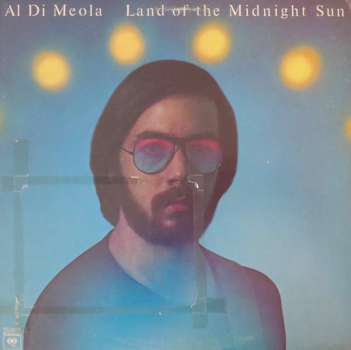 | Al Di Meola | Land Of The Midnight Sun | 1976 | US | Columbia | PC 34074 |
| 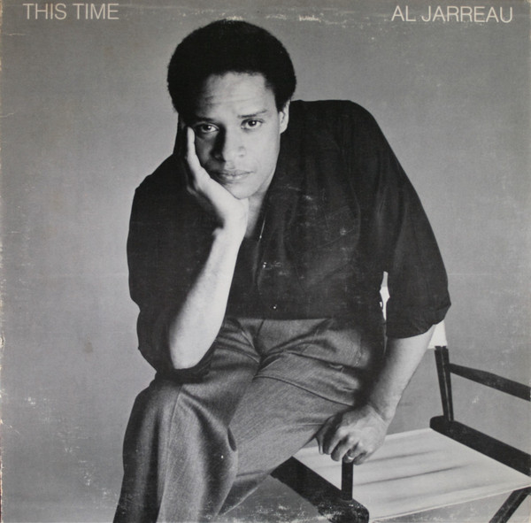 | Al Jarreau | This Time | 1980 | US | Warner Bros. Records | BSK 3434 |
 | Al Stewart | Time Passages | 1978 | US | Arista | AB-4190 |
 | Al Stewart | Year Of The Cat | 1976 | US | Janus Records | JXS-7022 |
 | The Alan Parsons Project | I Robot | 1977 | US | Arista | AL 7002 |
| 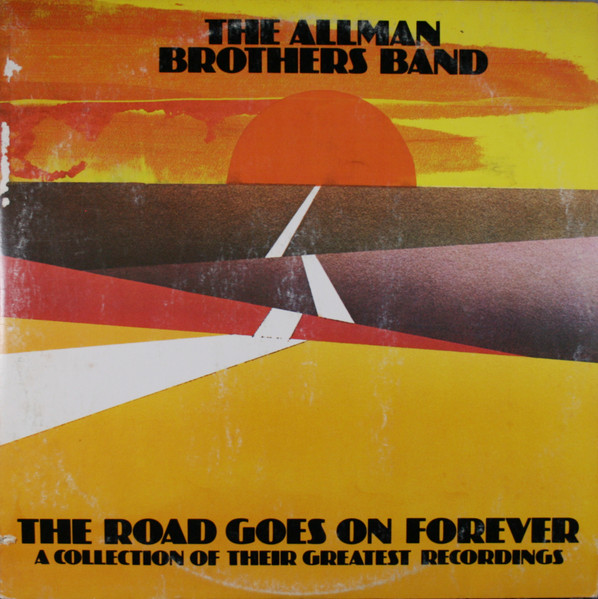 | The Allman Brothers Band | The Road Goes On Forever | 1975 | US | Capricorn Records | 2CP 0164 |
 | The Allman Brothers Band | Wipe The Windows, Check The Oil, Dollar Gas | 1976 | US | Capricorn Records | 2CX0177 |
| 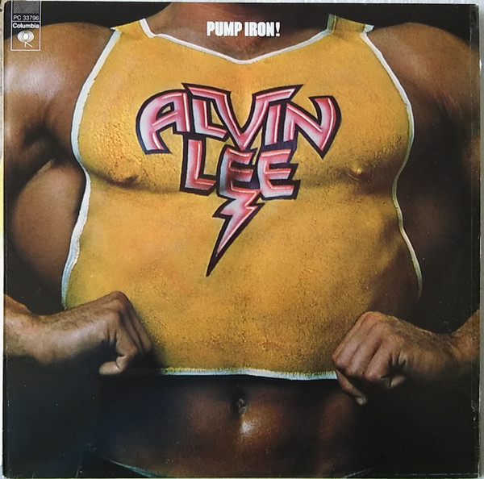 | Alvin Lee | Pump Iron! | 1975 | US | Columbia | PC 33796 |
 | Ambrosia (2) | Ambrosia | 1975 | US | 20th Century Records | T-434 |
| 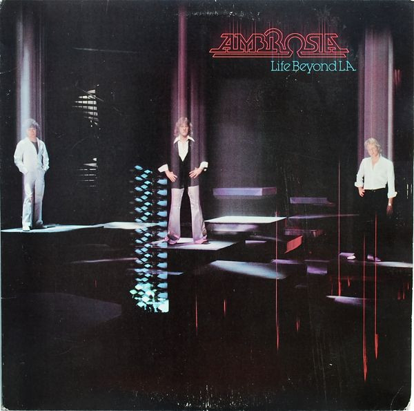 | Ambrosia (2) | Life Beyond L.A. | 1978 | US | Warner Bros. Records | BSK 3135 |
 | America (2) | America | 1971 | US | Warner Bros. Records | BS 2576 |
| America (2) | Harbor | 1977 | US | Warner Bros. Records | BSK 3017 |
 | America (2) | Hearts | 1975 | US | Warner Bros. Records | BS2852 |
 | America (2) | Holiday | 1974 | US | Warner Bros. Records | W 2808 |
| 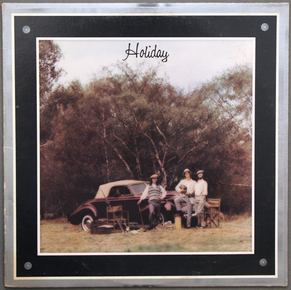 | America (2) | Holiday | 1974 | US | Warner Bros. Records | W 2808 |
 | America (2) | Homecoming | 1972 | US | Warner Bros. Records | BS 2655 |
| 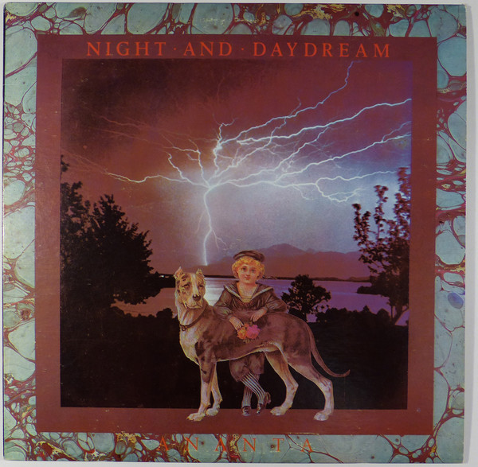 | Ananta | Night And Daydream | 1978 | US | Touchstone Sound Recordings | BBT 112T |
| André Kostelanetz | Wonderland Of Opera | 1963 | US | Columbia | CS 8795 |
 | Andrew Lloyd Webber | Cats: Selections From The Original Broadway Cast Recording | 1983 | US | Geffen Records | GHS 2026 |
 | The Animals | The Animals | 1964 | US | MGM Records | SE 4264 |
| April Wine | First Glance | 1978 | US | Capitol Records | SW-11852 |
 | Aretha Franklin | Aretha's Gold | 1969 | US | Atlantic | SD 8227 |
| 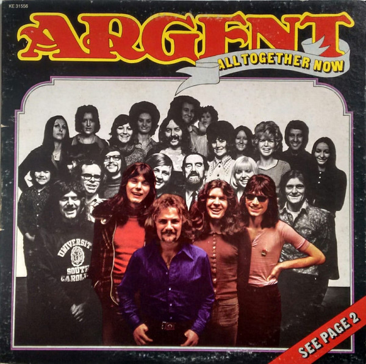 | Argent | All Together Now | 1972 | US | Epic | KE 31556 |
| 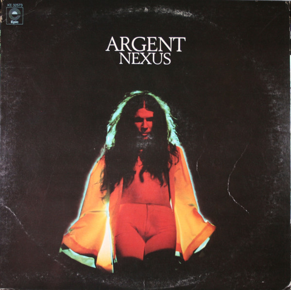 | Argent | Nexus | 1974 | US | Epic | KE 32573 |
 | Arlo Guthrie | Alice's Restaurant | 1976 | US | Reprise Records | 6267 |
 | Arlo Guthrie | Power Of Love | 1981 | US | Warner Bros. Records | BSK 3558 |
 | Arlo Guthrie | Running Down The Road | 1969 | US | Reprise Records | RS 6346 |
 | Arlo Guthrie | One Night | 1978 | US | Warner Bros. Records | BSK 3232 |
| Arnold Schoenberg | Opus 4 - Verklärte Nacht / Opus 45 - Trio For Violin,Viola And Cello | 1982 | US | Nonesuch | D-79028 |
| 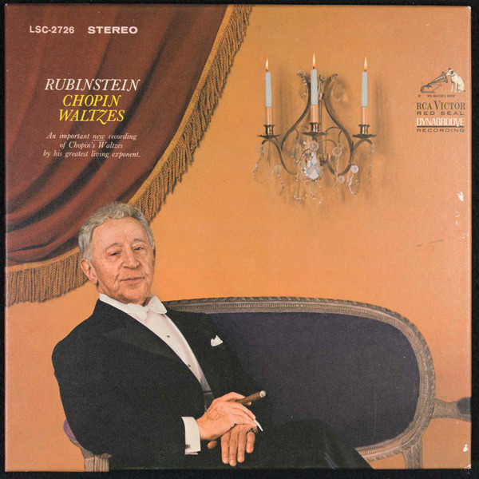 | Arthur Rubinstein | Chopin Waltzes | 1964 | US | RCA Victor Red Seal | LSC-2726 |
 | Asia (2) | Asia | 1982 | US | Geffen Records | GHS 2008 |
 | Atlanta Rhythm Section | A Rock And Roll Alternative | 1976 | US | Polydor | PD-1-6080 |
 | Average White Band | AWB | 1974 | US | Atlantic | SD 7308 |
 | Average White Band | Soul Searching | 1976 | US | Atlantic | SD 18179 |
| 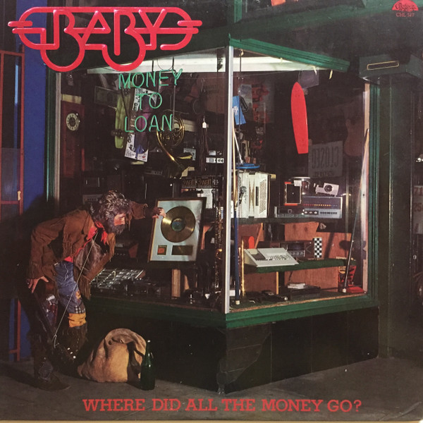 | Baby (7) | Where Did All The Money Go? | 1976 | US | Chelsea Records | CHL 517 |
 | Bachman-Turner Overdrive | Best Of B.T.O. (So Far) | 1976 | US | Mercury | SRM-1-1101 |
 | Bachman-Turner Overdrive | Four Wheel Drive | 1975 | US | Mercury | SRM-1-1027 |
| 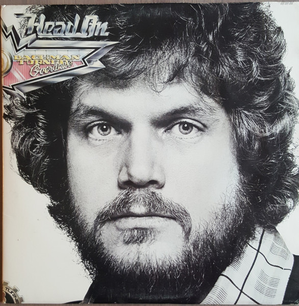 | Bachman-Turner Overdrive | Head On | 1975 | US | Mercury | SRM-1-1067 |
 | Bachman-Turner Overdrive | Not Fragile | 1974 | US | Mercury | SRM-1-1004 |
| 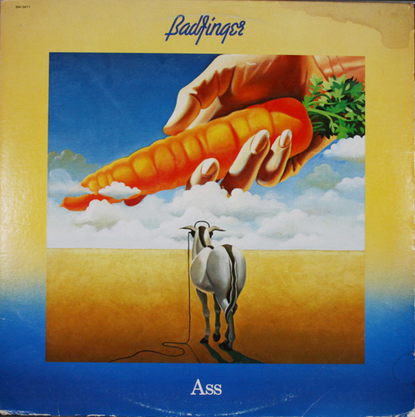 | Badfinger | Ass | 1973 | US | Apple Records | SW-3411 |
 | The Band | Rock Of Ages (The Band In Concert) | 1975 | US | Capitol Records | SABB-11045 |
 | The Band | The Band | 1969 | US | Capitol Records | STAO-132 |
| 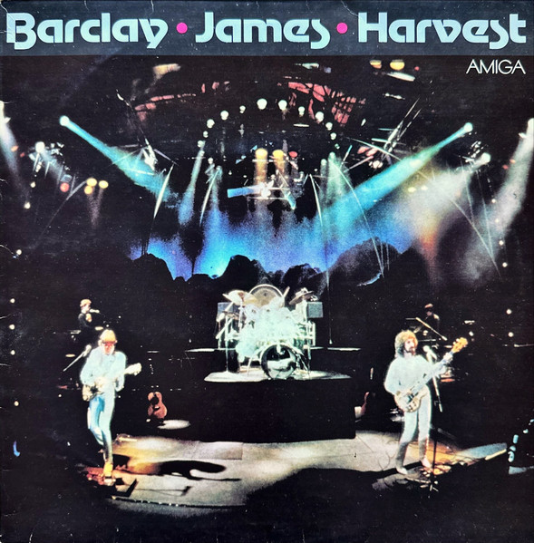 | Barclay James Harvest | Barclay James Harvest | 1985 | German Democratic Republic (GDR) | AMIGA | 8 56 127 |
| 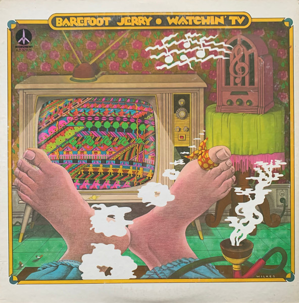 | Barefoot Jerry | Watchin' TV | 1974 | US | Monument | KZ 32926 |
 | The Beatles | Beatles '65 | 1964 | US | Capitol Records | T 2228 |
 | The Beatles | Magical Mystery Tour | 1976 | US | Capitol Records | SMAL-2835 |
| 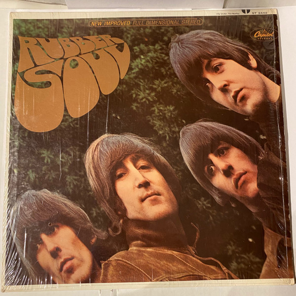 | The Beatles | Rubber Soul | 1971 | US | Capitol Records | ST-2442 |
 | The Beatles | Sgt. Pepper's Lonely Hearts Club Band | 1967 | US | Capitol Records | SMAS 2653 |
 | The Beatles | The Beatles' Second Album | 1964 | US | Capitol Records | T 2080 |
| 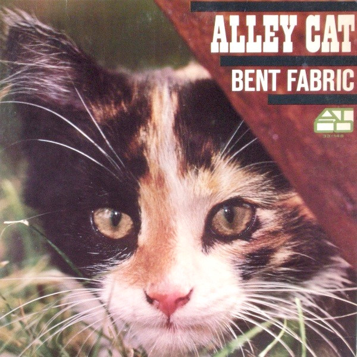 | Bent Fabric | Alley Cat | 1962 | US | ATCO Records | 33-148 |
 | Berlin | Love Life | 1984 | US | Geffen Records | GHS 4025 |
| Bertie Higgins | Just Another Day In Paradise | 1982 | US | Kat Family Records | FZ 37901 |
 | Bill Withers | Just As I Am | 1971 | US | Sussex | SXBS 7006 |
 | Bill Withers | Still Bill | 1972 | US | Sussex | SXBS 7014 |
| 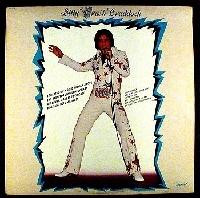 | Billy 'Crash' Craddock | Billy "Crash" Craddock | 1978 | US | Capitol Records | ST-511758 |
| 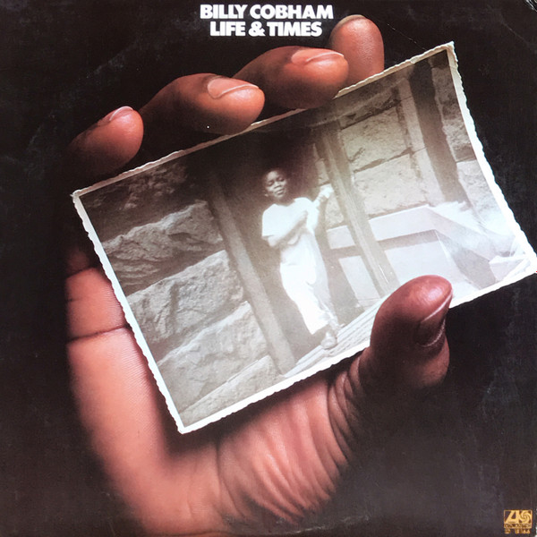 | Billy Cobham | Life & Times | 1976 | US | Atlantic | SD 18166 |
| 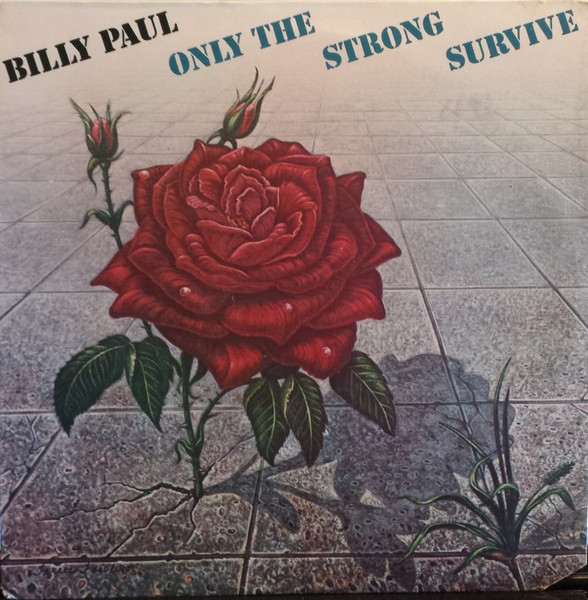 | Billy Paul | Only The Strong Survive | 1977 | US | Philadelphia International Records | PZ 34923 |
| 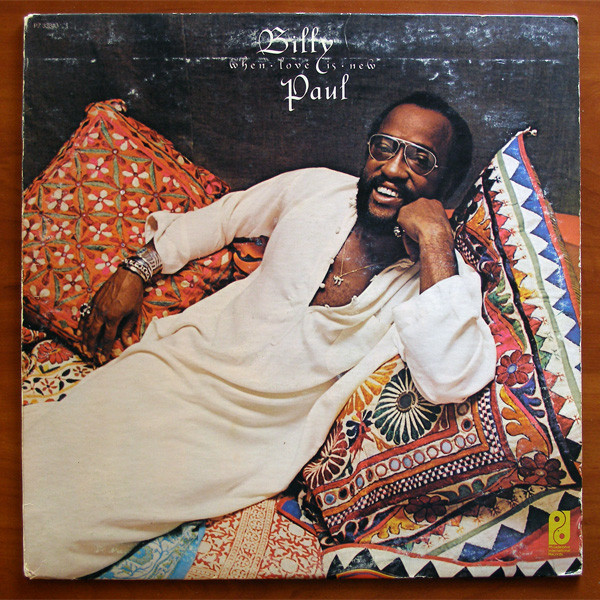 | Billy Paul | When Love Is New | 1975 | US | Philadelphia International Records | PZ 33843 |
 | Black Oak Arkansas | High On The Hog | 1974 | Germany | Atlantic | ATL 40 538 |
 | Black Oak Arkansas | Raunch 'N' Roll Live | 1973 | US | ATCO Records | SD 7019 |
 | Black Sabbath | Black Sabbath | 1970 | US | Warner Bros. Records | WS 1871 |
 | Black Sabbath | Sabotage | 1975 | US | Warner Bros. Records | BS 2822 |
 | Blood, Sweat And Tears | B, S & T 4 | 1971 | US | Columbia | KC 30590 |
 | Blood, Sweat And Tears | Blood, Sweat & Tears | 1969 | US | Columbia | CS 9720 |
 | Blood, Sweat And Tears | Blood, Sweat & Tears Greatest Hits | 1972 | US | Columbia | KC 31170 |
| Blood, Sweat And Tears | Blood, Sweat & Tears Greatest Hits | 1972 | US | Columbia | KC 31170 |
 | Blood, Sweat And Tears | Blood, Sweat And Tears 3 | 1970 | US | Columbia | KC 30090 |
| 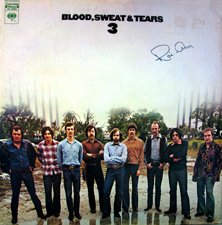 | Blood, Sweat And Tears | Blood, Sweat And Tears 3 | 1970 | US | Columbia | KC 30090 |
 | Blood, Sweat And Tears | Brand New Day | 1977 | US | ABC Records | AB-1015 |
| 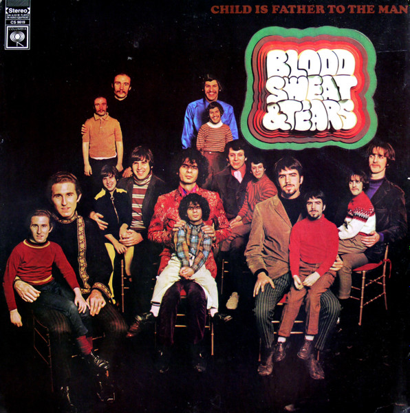 | Blood, Sweat And Tears | Child Is Father To The Man | 1968 | US | Columbia | CS 9619 |
 | Blood, Sweat And Tears | New Blood | 1972 | US | Columbia | KC 31780 |
| 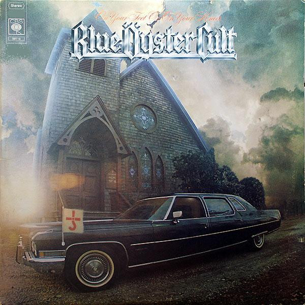 | Blue Öyster Cult | On Your Feet Or On Your Knees | 1975 | Europe | CBS | CBS 88116 |
 | The Blues Brothers | Briefcase Full Of Blues | 1978 | US | Atlantic | SD 19217 |
 | Blues Magoos | Electric Comic Book | 1967 | US | Mercury | SR 61104 |
| 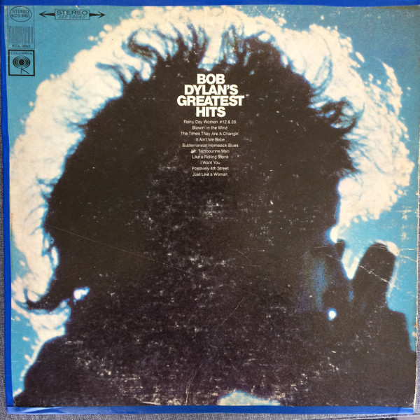 | Bob Dylan | Bob Dylan's Greatest Hits | 1967 | US | Columbia | KCS 9463 |
| 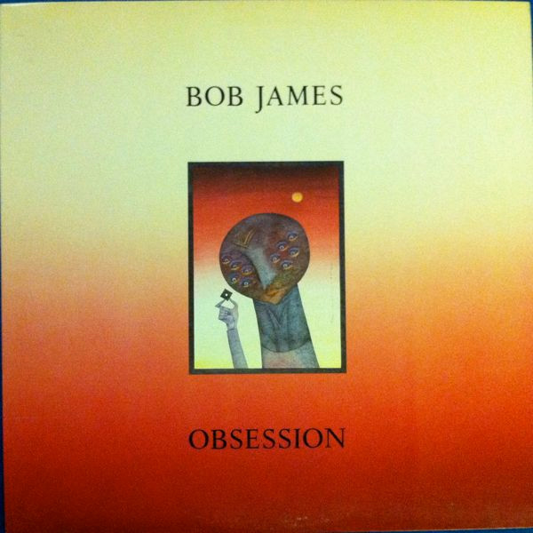 | Bob James | Obsession | 1986 | US | Warner Bros. Records | W1-25495 |
 | Bob Seger And The Silver Bullet Band | Against The Wind | 1980 | US | Capitol Records | SOO-12041 |
| 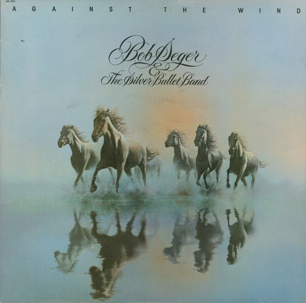 | Bob Seger And The Silver Bullet Band | Against The Wind | 1980 | US | Capitol Records | SOO-12041 |
 | Bob Seger And The Silver Bullet Band | Live Bullet | 1976 | US | Capitol Records | SKBB-11523 |
 | Bob Seger And The Silver Bullet Band | Night Moves | 1986 | US | Capitol Records | ST-11557 |
 | Bob Seger And The Silver Bullet Band | Stranger In Town | 1978 | US | Capitol Records | SW-11698 |
| 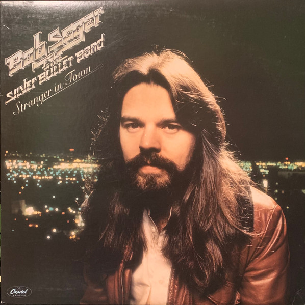 | Bob Seger And The Silver Bullet Band | Stranger In Town | 1978 | US | Capitol Records | SW-11698 |
 | Bob Seger And The Silver Bullet Band | The Distance | 1982 | US | Capitol Records | ST-12254 |
| Boots Randolph | Boots With Strings | 1966 | US | Monument | SLP 18066 |
| Boz Scaggs | Hits! | 1980 | US | Columbia | FC 36841 |
 | Boz Scaggs | Silk Degrees | 1976 | US | Columbia | PC 33920 |
 | Brand X (3) | Moroccan Roll | 1977 | US | Passport Records | PP 98022 |
| 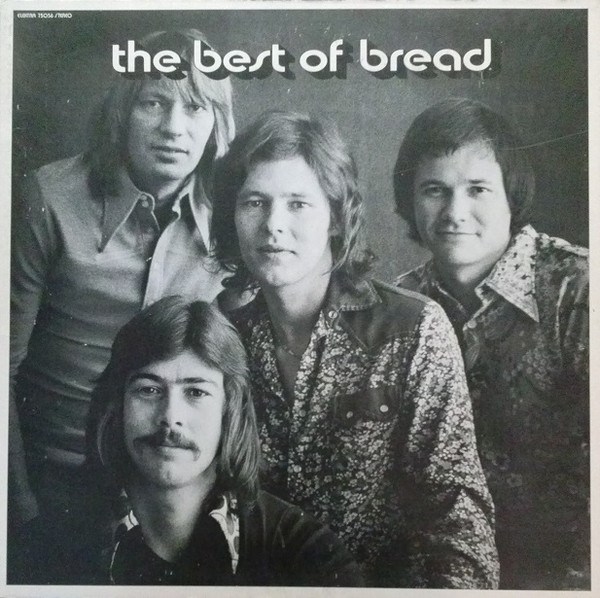 | Bread | The Best Of Bread | 1973 | US | Elektra | EKS-75056 |
| 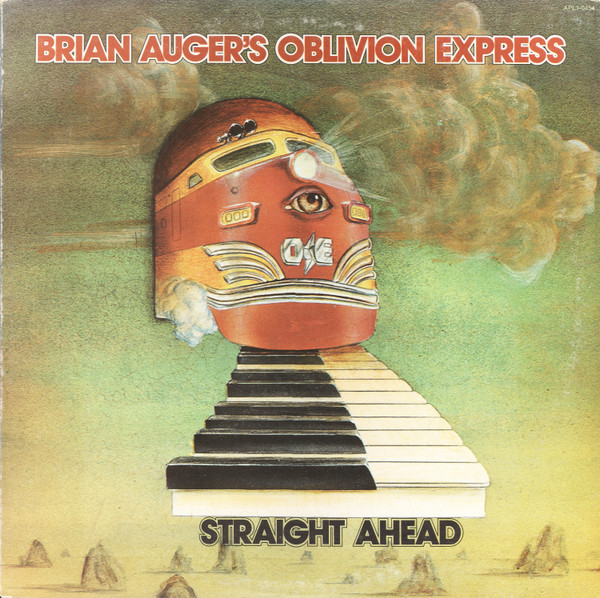 | Brian Auger's Oblivion Express | Straight Ahead | 1974 | US | RCA Victor | APL1-0454 |
 | Brothers Johnson | Right On Time | 1977 | US | A&M Records | SP-4644 |
 | Buddy Rich | Buddy Rich Plays And Plays And Plays | 1977 | US | RCA | CPL1-2273 |
 | Buffalo Springfield | Last Time Around | 1968 | US | ATCO Records | SD33-256 |
 | Buffalo Springfield | Retrospective The Best Of Buffalo Springfield | 1969 | US | ATCO Records | SD 33-283 |
| 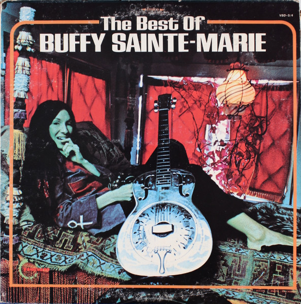 | Buffy Sainte-Marie | The Best Of Buffy Sainte-Marie | 1970 | US | Vanguard | VSD-3/4 |
 | The Byrds | The Best Of The Byrds Greatest Hits, Volume II | 1972 | US | Columbia | KC 31795 |
| The Byrds | Turn! Turn! Turn! | 1965 | US | Columbia | CL 2454 |
 | The Byrds | Younger Than Yesterday | 1967 | US | Columbia | CS 9442 |
 | Carole King | Really Rosie | 1975 | US | Ode Records (2) | SP 77027 |
 | The Cars | The Cars | 1978 | US | Elektra | 6E-135 |
| 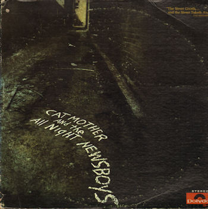 | Cat Mother And The All-Night Newsboys | The Street Giveth.. And The Street Taketh Away | 1969 | US | Polydor | 24-4001 |
 | Cat Stevens | Catch Bull At Four | 1972 | US | A&M Records | SP 4365 |
 | Cat Stevens | Tea For The Tillerman | 1970 | US | A&M Records | SP 4280 |
| Chanson | Chanson | 1978 | US | Ariola Records America | SW-50039 |
 | Charley Pride | Country Feelin' | 1974 | US | RCA Victor | APL1-0534 |
 | Charlie Byrd | Bossa Nova Pelos Passaros | 1966 | US | Riverside Records | RM 436 |
 | Charlie Byrd | For All We Know | 1971 | US | Columbia | G 30622 |
| 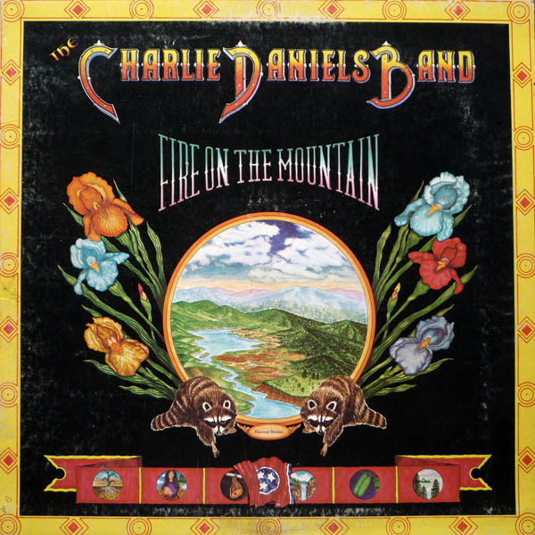 | The Charlie Daniels Band | Fire On The Mountain | 1976 | US | Epic | PE 34365 |
 | Charlie Rich | Behind Closed Doors | 1973 | US | Epic | PE 32247 |
| 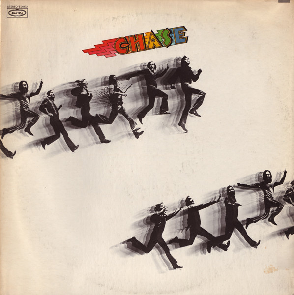 | Chase (5) | Chase | 1971 | US | Epic | E 30472 |
 | Cher | Chér | 1971 | US | Kapp Records | KS 3649 |
 | Chicago (2) | Chicago | 1970 | US | Columbia | KGP 24 |
 | Chicago (2) | Chicago Transit Authority | 1969 | US | Columbia | GP 8 |
| Christopher Cross | Another Page | 1983 | US | Warner Bros. Records | 1-23757 |
 | Christopher Cross | Christopher Cross | 1979 | US | Warner Bros. Records | BSK 3383 |
 | Climax Blues Band | Gold Plated | 1976 | US | Sire | SASD-7523 |
 | Count Basie Orchestra | The Best Of Count Basie | 1963 | US | Decca | DXSB-7170 |
 | Creedence Clearwater Revival | Bayou Country | 1969 | US | Fantasy | 8387 |
 | Creedence Clearwater Revival | Creedence Clearwater Revival | 1968 | US | Fantasy | 8382 |
 | Crosby, Stills & Nash | Crosby, Stills & Nash | 1969 | US | Atlantic | SD-8229 |
 | Crosby, Stills & Nash | Crosby, Stills & Nash | 1969 | US | Atlantic | SD-8229 |
| 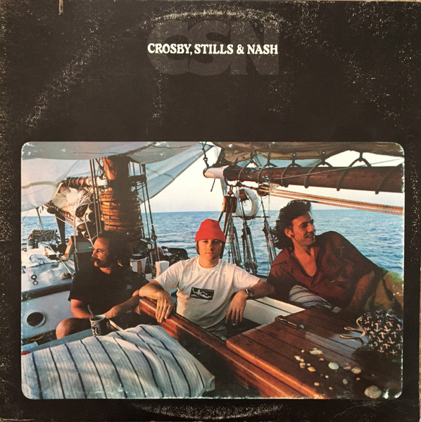 | Crosby, Stills & Nash | CSN | 1977 | US | Atlantic | SD 19104 |
 | Crosby, Stills, Nash & Young | 4 Way Street | 1971 | US | Atlantic | SD 2-902 |
 | Crosby, Stills, Nash & Young | Déjà Vu | 1970 | US | Atlantic | SD 7200 |
 | The Crusaders | Those Southern Knights | 1976 | US | ABC Blue Thumb | BTSD-6024 |
 | The Crusaders | Unsung Heroes | 1973 | US | Blue Thumb Records | BTS 6007 |
 | Culture Club | Colour By Numbers | 1983 | US | Epic | QE 39107 |
| 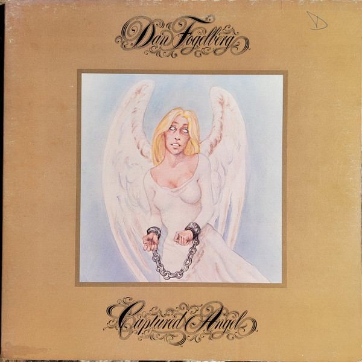 | Dan Fogelberg | Captured Angel | 1975 | US | Full Moon | PE 33499 |
 | Dan Fogelberg | Home Free | 1972 | US | Columbia | KC 31751 |
| 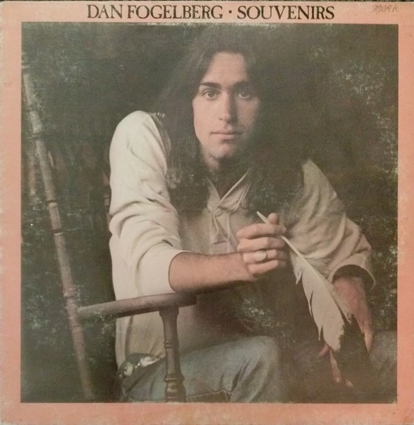 | Dan Fogelberg | Souvenirs | 1974 | US | Epic | KE 33137 |
 | Dan Fogelberg | The Innocent Age | 1981 | US | Full Moon | KE2 37393 |
| 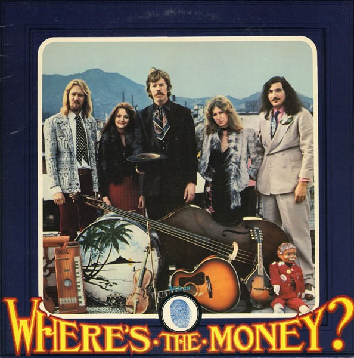 | Dan Hicks And His Hot Licks | Where's The Money? | 1971 | US | Blue Thumb Records | BTS 29 |
| Dap Sugar Willie | From North Philly (Live) | 1976 | US | Philadelphia International Records | PZ 34122 |
| Darius Milhaud | La Création Du Monde / L'Histoire Du Soldat | 1959 | US | Everest | LPBR-6017 |
| 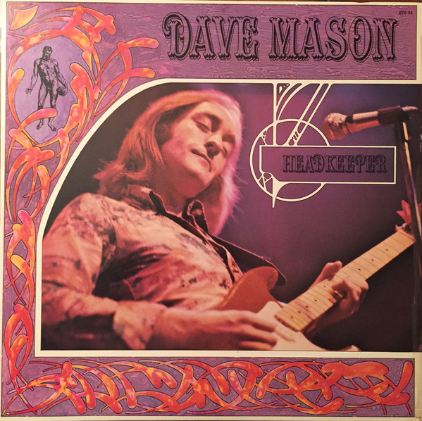 | Dave Mason | Headkeeper | 1972 | US | Blue Thumb Records | BTS 34 |
 | Deep Purple | 24 Carat Purple | 1975 | UK | Purple Records | TPSM 2002 |
 | Deep Purple | Made In Japan | 1973 | US | Warner Bros. Records | 2WS 2701 |
 | Deep Purple | Made In Japan | 1972 | US | Warner Bros. Records | 2WS 2701 |
| 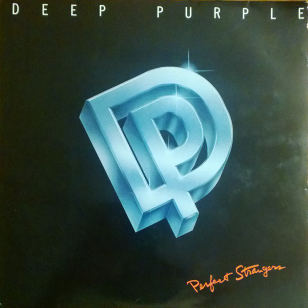 | Deep Purple | Perfect Strangers | 1984 | US | Mercury | 824 003-1 M-1 |
| 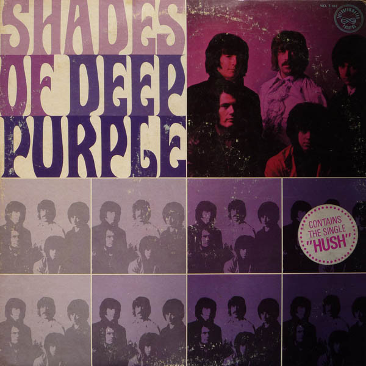 | Deep Purple | Shades Of Deep Purple | 1968 | US | Tetragrammaton Records | T-102 |
| 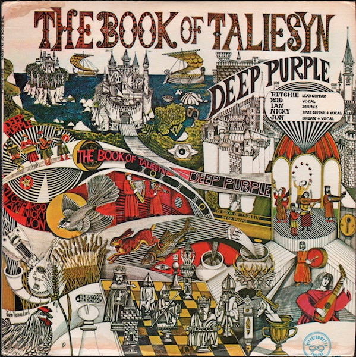 | Deep Purple | The Book Of Taliesyn | 1968 | US | Tetragrammaton Records | T-107 |
| 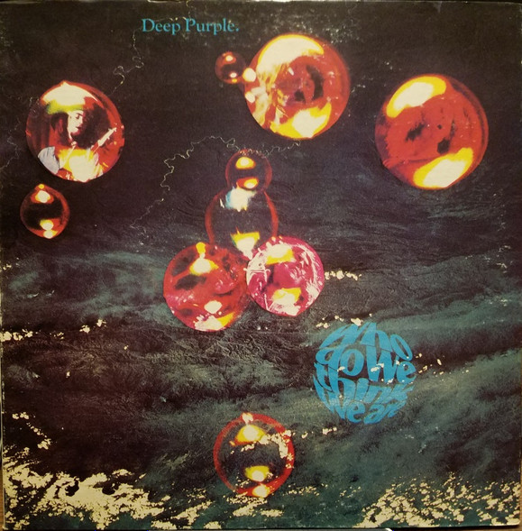 | Deep Purple | Who Do We Think We Are! | 1973 | US | Warner Bros. Records | BS 2678 |
 | Derek & The Dominos | Layla And Other Assorted Love Songs | 1973 | US | ATCO Records | SD 2-704 |
| 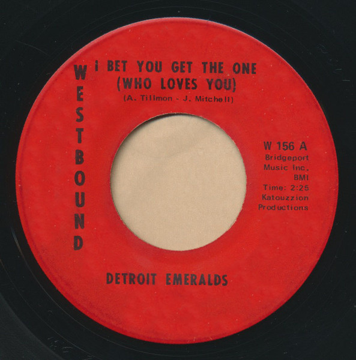 | Detroit Emeralds | I Bet You Get The One (Who Loves You) / If I Lose Your Love | 1970 | US | Westbound Records | W 156 |
 | Diana Ross | Diana Ross | 1976 | US | Motown | M6-861S1 |
| 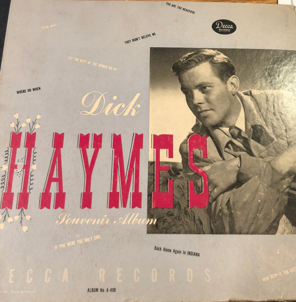 | Dick Haymes | Souvenir Album | 1946 | US | Decca | A-498 |
 | Dionne Warwick | Golden Hits - Part One | 1967 | US | Scepter Records | SPS 565 |
| 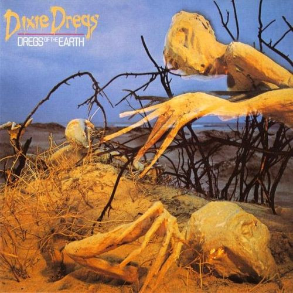 | Dixie Dregs | Dregs Of The Earth | 1980 | US | Arista | AL 9528 |
| 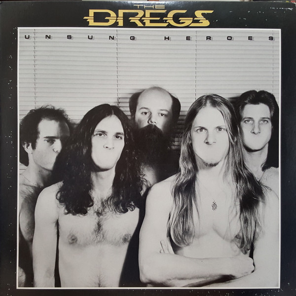 | Dixie Dregs | Unsung Heroes | 1981 | US | Arista | AL 9548 |
| 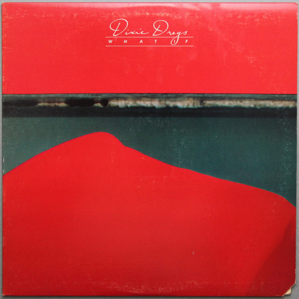 | Dixie Dregs | What If | 1978 | US | Capricorn Records | CPN 0203 |
| 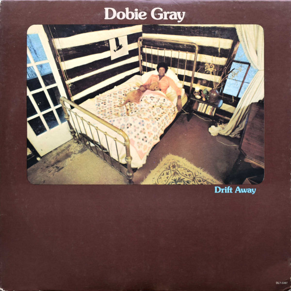 | Dobie Gray | Drift Away | 1973 | US | Decca | DL7-5397 |
 | Don McLean | American Pie | 1971 | US | United Artists Records | UAS-5535 |
| 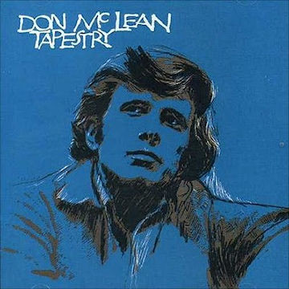 | Don McLean | Tapestry | 1982 | US | Liberty | LN-10157 |
 | The Doobie Brothers | Best Of The Doobies | 1976 | US | Warner Bros. Records | BS 2978 |
| The Doobie Brothers | Best Of The Doobies | 1976 | US | Warner Bros. Records | BS 2978 |
 | The Doobie Brothers | Minute By Minute | 1978 | US | Warner Bros. Records | BSK 3193 |
 | The Doobie Brothers | One Step Closer | 1980 | US | Warner Bros. Records | HS 3452 |
 | The Doobie Brothers | Takin' It To The Streets | 1976 | US | Warner Bros. Records | BS 2899 |
 | The Doobie Brothers | The Captain And Me | 1973 | US | Warner Bros. Records | BS 2694 |
| The Doobie Brothers | The Captain And Me | 1974 | US | Warner Bros. Records | BS 2694 |
 | The Doobie Brothers | Toulouse Street | 1972 | US | Warner Bros. Records | BS 2634 |
 | The Doobie Brothers | What Were Once Vices Are Now Habits | 1974 | US | Warner Bros. Records | W 2750 |
 | Dottie West | Wild West | 1981 | US | Liberty | LT-1062 |
 | Dr. West's Medicine Show And Junk Band | The Eggplant That Ate Chicago | 1967 | US | A Go Go Record | 22 17 001 |
 | Dreamgirls Original Broadway Cast | Dreamgirls Original Broadway Cast Album | 1982 | US | Geffen Records | GHSP 2007 |
| Duke Ellington | Black Brown And Beige: A Duke Ellington Tone Parallel To The American Negro | 1946 | US | Victor | SP-9 |
 | Eagles | Hotel California | 1976 | US | Asylum Records | 7E-1084 |
 | Earl Bostic | The Earl Of Bostic | 1966 | US | Design Records (2) | SDLP-232 |
| Earl Klugh | Nightsongs | 1984 | US | Capitol Records | ST-12372 |
 | Earth, Wind & Fire | Gratitude | 1975 | US | Columbia | PG 33694 |
 | Earth, Wind & Fire | Head To The Sky | 1973 | US | Columbia | KC 32194 |
 | Earth, Wind & Fire | Touch The World | 1987 | US | Columbia | FC 40596 |
| Eddy Duchin | The Eddy Duchin Story | 1956 | US | Columbia | CL 790 |
 | The Edgar Winter Group | They Only Come Out At Night | 1972 | US | Epic | KE 31584 |
| Edgar Winter's White Trash | Recycled | 1977 | US | Blue Sky | PZ 34858 |
| Edgar Winter's White Trash | Roadwork | 1973 | US | Epic | KEG 31249 |
| Edvard Grieg | Peer Gynt Suites Nos. 1 & 2 / Lyric Suite | 1976 | US | RCA Gold Seal | AGL1-1524 |
 | Electric Light Orchestra | Olé ELO | 1976 | US | United Artists Records | UA-LA630-G |
 | Electric Light Orchestra | Xanadu (From The Original Motion Picture Soundtrack) | 1980 | US | MCA Records | MCA-6100 |
| The Eleventh House | Introducing The Eleventh House | 1974 | US | Vanguard | VSD 79342 |
 | Elton John | Goodbye Yellow Brick Road | 1973 | US | MCA Records | MCA2-10003 |
 | Elton John | Madman Across The Water | 1971 | US | UNI Records | 93120 |
 | Elton John | Rock Of The Westies | 1975 | US | MCA Records | MCA-2163 |
| Elvis Presley | Elvis | 1973 | US | RCA | DPL2-0056 |
 | Emerson, Lake & Palmer | Brain Salad Surgery | 1973 | US | Manticore | MC 66669 |
| Emerson, Lake & Palmer | Brain Salad Surgery | 1977 | US | Atlantic | SD 19124 |
 | Emerson, Lake & Palmer | Emerson, Lake & Palmer | 1970 | Canada | Cotillion | SD 9040 |
| Emerson, Lake & Palmer | Emerson, Lake & Palmer | 1971 | US | Cotillion | 9040 |
 | Emerson, Lake & Palmer | Love Beach | 1978 | US | Atlantic | SD 19211 |
| Emerson, Lake & Palmer | Pictures At An Exhibition | 1972 | US | Cotillion | ELP 66666 |
 | Emerson, Lake & Palmer | Tarkus | 1971 | US | Cotillion | SD 9900 |
 | Emerson, Lake & Palmer | Trilogy | 1972 | US | Cotillion | SD 9903 |
 | Emerson, Lake & Palmer | Trilogy | 1972 | US | Cotillion | SD 9903 |
 | Emerson, Lake & Palmer | Welcome Back My Friends To The Show That Never Ends - Ladies And Gentlemen | 1974 | US | Manticore | MC 3-200 |
| Emerson, Lake & Palmer | Welcome Back My Friends To The Show That Never Ends - Ladies And Gentlemen | 1974 | US | Manticore | MC 3-200 |
 | Emerson, Lake & Palmer | Welcome Back My Friends To The Show That Never Ends ~ Ladies And Gentlemen | 1974 | US | Manticore | MC 3-200 |
 | Emerson, Lake & Palmer | Works (Volume 1) | 1977 | US | Atlantic | SD 2-7000 |
| Emitt Rhodes | Emitt Rhodes | 1970 | US | Dunhill | DS 50089 |
| Ethel Merman | Annie Get Your Gun | 1946 | US | Decca | A-468 |
 | Everly Brothers | Stories We Could Tell | 1972 | US | RCA Victor | LSP-4620 |
 | The Family Of Mann | First Light | 1974 | US | Atlantic | SD 1658 |
 | Felix Cavaliere | Felix Cavaliere | 1974 | US | Bearsville | BR 6955 |
 | The Fifth Dimension | Greatest Hits On Earth | 1972 | US | Bell Records | BELL 1106 |
| First Fire | First Fire | 1978 | US | Tortoise International | BYL1-2677 |
 | Fleetwood Mac | Future Games | 1972 | US | Reprise Records | RS 6465 |
 | Focus (2) | Moving Waves | 1971 | US | Sire | SAS 7401 |
 | Foghat | Energized | 1974 | US | Bearsville | BR 6950 |
 | Foghat | Foghat | 1973 | US | Bearsville | BR 2136 |
| Foghat | Foghat | 1973 | US | Bearsville | BR 2136 |
| Foghat | Foghat | 1972 | US | Bearsville | BR 2077 |
| Foghat | Fool For The City | 1975 | US | Bearsville | BR 6959 |
 | Foghat | Stone Blue | 1978 | US | Bearsville | BRK 6977 |
 | Foreigner | Foreigner | 1977 | US | Atlantic | SD 19109 |
 | Foreigner | Head Games | 1979 | US | Atlantic | SD 29999 |
| Frank Marino | Tales Of The Unexpected | 1979 | US | Columbia | JC 35753 |
| Frankie Carle | Easy To Love (And Other Favorites) | 1966 | US | RCA Camden | CAS-987(e) |
 | Frankie Goes To Hollywood | Welcome To The Pleasuredome | 1984 | US | Island Records | 7 90232-1-H |
| The Friends Of Distinction | Whatever | 1970 | US | RCA Victor | LSP-4408 |
 | Gabriel Bondage | Another Trip To Earth | 1977 | US | Dharma Records (4) | D-808 |
 | Genesis | Invisible Touch | 1986 | US | Atlantic | 81641-1-E |
 | Genesis | Three Sides Live | 1982 | US | Atlantic | SD 2-2000 |
 | George Carlin | A Place For My Stuff | 1981 | US | Atlantic | SD 19326 |
| George Duke | Thief In The Night | 1985 | US | Elektra | 60398-1 |
| George Gershwin | From Tin Pan Alley To Broadway | 1974 | US | Mark56 Records | 680 |
 | George Hurst | Great Moments In Wagner | 1970 | US | London Records | SPC 21040 |
| The George Shearing Quintet | Velvet Carpet | 1956 | US | Capitol Records | DT720 |
 | Gerry Rafferty | City To City | 1978 | US | United Artists Records | UA-LA840-G |
| Giacomo Puccini | La Boheme (Highlights) | 1959 | | London Records | 5562 |
| Giuseppe di Stefano | Canzoni Italiane | | US | Columbia Masterworks | Mono MS 6568 |
 | Good Rats | Tasty | 1978 | US | Ratcity Records | RCR 8002 |
 | Gorillaz | Plastic Beach | 2010 | Europe | Parlophone | 5099962616614 |
| Gorillaz | Plastic Beach | 2010 | UK | Parlophone | 5099962616614 |
 | Grand Funk Railroad | Closer To Home | 1972 | US | Capitol Records | SKAO-471 |
 | Grand Funk Railroad | Survival | 1971 | US | Capitol Records | SW-764 |
| The Grass Roots | Move Along | 1972 | US | Dunhill | DSX-50112 |
| The Gregg Allman Band | Playin' Up A Storm | 1977 | US | Capricorn Records | CP 0181 |
 | Grover Washington, Jr. | Paradise | 1979 | US | Elektra | 6E-182 |
 | The Guess Who | The Best Of The Guess Who | 1973 | US | Scepter Records | CTN 18021 |
 | The Guess Who | The Greatest Of The Guess Who | 1977 | US | RCA Victor | APL1-2253 |
 | Gustav Holst | The Planets | 1979 | US | London Records | CS7110 |
| Gustav Mahler | Symphonie No.2 | 1977 | Germany | Deutsche Grammophon | 2707 094 |
 | Guy & Ralna | Lawrence Welk Presents Guy & Ralna | 1970 | US | Ranwood | R8071 |
 | Harry Belafonte | Belafonte At Carnegie Hall | 1959 | USA & Canada | RCA Victor | LSO-6006 (2) |
| Harry Belafonte | Pure Gold | 1975 | US | RCA | ANL1-0979 |
| Harry Belafonte | The Many Moods Of Belafonte | 1962 | US | RCA Victor | LPM-2574 |
 | Harry Chapin | Short Stories | 1973 | US | Elektra | EKS-75065 |
| Harry Nilsson | A Little Touch Of Schmilsson In The Night | 1981 | US | RCA Victor | AYL1-3761 |
 | Harry Nilsson | Nilsson Schmilsson | 1971 | US | RCA Victor | LSP-4515 |
 | The Havenstock River Band | The Havenstock River Band | 1972 | US | Im'press Records | IMPS 1615 |
| Heartsfield | Heartsfield | 1973 | US | Mercury | SRM 1 688 |
 | Herbie Mann | Bird In A Silver Cage | 1976 | US | Atlantic | SD 18209 |
| Herbie Mann | Bird In A Silver Cage | 1976 | US | Atlantic | SD 18209 |
 | Herbie Mann | London Underground | 1974 | US | Atlantic | SD 1648 |
 | Herbie Mann | Mississippi Gambler | 1972 | US | Atlantic | SD 1610 |
 | Herbie Mann | Our Mann Flute | 1966 | US | Atlantic | SD 1464 |
 | Herbie Mann | Right Now | 1962 | US | Atlantic | SD 1384 |
 | Herbie Mann | The Inspiration I Feel | 1968 | US | Atlantic | SD 1513 |
| Herbie Mann | The Wailing Dervishes | 1967 | US | Atlantic | SD 1497 |
 | Herbie Mann | Turtle Bay | 1973 | US | Atlantic | SD 1642 |
 | Herbie Mann | Herbie Mann & Fire Island | 1977 | US | Atlantic | SD 19112 |
 | The Herbie Mann Afro-Jazz Sextet + Four Trumpets | The Common Ground | 1960 | US | Atlantic | SD 1343 |
| Herman's Hermits | Blaze | 1967 | US | MGM Records | SE-4478 |
| Herman's Hermits | Herman's Hermits On Tour (Their Second Album!) | 1965 | US | MGM Records | E-4295 |
| Herman's Hermits | The Best Of Herman's Hermits Volume III | 1967 | US | MGM Records | SE-4505 |
 | Hot Tuna | First Pull Up, Then Pull Down | 1971 | US | RCA Victor | LSP-4550 |
| Hugo Montenegro, His Orchestra And Chorus | Hang 'Em High | 1968 | US | RCA Victor | LSP-4022 |
 | Humble Pie | Smokin' | 1972 | US | A&M Records | SP 4342 |
| Humphrey Bogart | Original Radio Broadcast Humphrey Bogart Starring In Treasure Of Sierra Madre | 1973 | US | Mark56 Records | 610 |
 | Igor Stravinsky | Le Sacre Du Printemps (The Rite Of Spring) | 1982 | US | Musical Heritage Society | MHS 4650 |
 | Igor Stravinsky | The Rite Of Spring | 1979 | US | Angel Records | SZ-37646 |
 | Igor Stravinsky | The Rite Of Spring (Le Sacre du Printemps) | 1970 | US | Nonesuch | H-71093 |
 | Igor Stravinsky | Firebird Suite / Marche Slave / Night On Bald Mountain | 1967 | US | London Records | SPC 21026 |
 | Igor Stravinsky | Firebird Suite: Marche Slave / Night On Bald Mountain | 1967 | US | London Records | SPC 21026 |
 | Iron Butterfly | Ball | 1969 | US | ATCO Records | SD 33-280 |
 | Iron Butterfly | Heavy | 1968 | US | ATCO Records | SD 33-227 |
 | Iron Butterfly | In-A-Gadda-Da-Vida | 1968 | US | ATCO Records | SD 33-250 |
| Iron Butterfly | In-A-Gadda-Da-Vida | 1968 | US | ATCO Records | SD 33-250 |
| Iron Butterfly | In-A-Gadda-Da-Vida | 1968 | US | ATCO Records | SD 33-250 |
| Isaac Hayes | Shaft | 1971 | US | Enterprise | ENS-2-5002 |
 | It's A Beautiful Day | It's A Beautiful Day | 1969 | US | Columbia | CS 9768 |
| It's A Beautiful Day | It's A Beautiful Day | 1969 | US | Columbia | CS 9768 |
 | It's A Beautiful Day | Marrying Maiden | 1970 | US | Columbia | CS 1058 |
| It's A Beautiful Day | Marrying Maiden | 1970 | US | Columbia | CS 1058 |
| The J. Geils Band | "Live" Full House | 1972 | US | Atlantic | SD 7241 |
 | Jackson Browne | For Everyman | 1973 | US | Asylum Records | SD 5067-2 |
 | Jackson Browne | Running On Empty | 1977 | US | Asylum Records | 6E-113 |
| Jackson Browne | Saturate Before Using | 1972 | US | Asylum Records | SD 5051-2 |
 | Jackson Browne | The Pretender | 1976 | US | Asylum Records | 7E-1079 |
| James Gang | Bang | 1973 | US | ATCO Records | SD 7037 |
| James Gang | Passin' Thru | 1972 | US | ABC Records | ABCX-760 |
 | James Gang | The Best Of The James Gang | 1973 | US | ABC Records | ABCX-774 |
| James Griffin (4) | Breakin' Up Is Easy | 1973 | US | Polydor | PD 6018 |
| James Taylor (2) | JT | 1977 | US | Columbia | JC 34811 |
 | James White & The Blacks | Off White | 1979 | US | ZE Records | ZEA33-003 |
| Jay & The Americans | Sands Of Time | 1969 | US | United Artists Records | UAS 6671 |
| Jay Boy Adams | Jay Boy Adams | 1977 | US | Atlantic | SD 18221 |
 | Jean-Luc Ponty | A Taste For Passion | 1979 | US | Atlantic | SD 19253 |
 | Jean-Luc Ponty | Aurora | 1976 | US | Atlantic | SD 18163 |
| Jean-Luc Ponty | Aurora | 1976 | US | Atlantic | SD 18163 |
 | Jean-Luc Ponty | Individual Choice | 1983 | US | Atlantic | 80098-1 |
| Jean-Luc Ponty | Upon The Wings Of Music | 1975 | US | Atlantic | SD 18138 |
 | Jean-Michel Jarre | Equinoxe | 1978 | US | Polydor | PD-1-6175 |
 | Jeff Beck | Wired | 1976 | UK | Epic | PE 33849 |
| Jefferson Airplane | Bark | 1971 | US | Grunt (3) | FTR-1001 |
| Jefferson Airplane | Crown Of Creation | 1968 | US | RCA Victor | LSP-4058 |
 | Jefferson Airplane | Surrealistic Pillow | 1967 | US | RCA Victor | LSP-3766 |
 | Jefferson Airplane | Thirty Seconds Over Winterland | 1973 | US | Grunt (3) | BFL1-0147 |
| Jefferson Airplane | Volunteers | 1969 | US | RCA Victor | LSP-4238 |
| Jefferson Starship | Dragon Fly | 1974 | US | Grunt (3) | BFL1-0717 |
| Jefferson Starship | Gold | 1979 | US | Grunt (3) | BZL1-3247 |
 | Jefferson Starship | Red Octopus | 1981 | US | Grunt (3) | AYL1-3660 |
| Jefferson Starship | Red Octopus | 1975 | US | Grunt (3) | BFL1-0999 |
| Jefferson Starship | Red Octopus | 1975 | US | Grunt (3) | BFL1-0999 |
| Jesse Colin Young | Light Shine | 1976 | US | Warner Bros. Records | BS 2790 |
| Jesse Colin Young | The Soul Of A City Boy | 1974 | US | Capitol Records | ST-11267 |
| Jesse Colin Young | The Soul Of A City Boy | 1974 | US | Capitol Records | ST-11267 |
| Jesse Colin Young | Together | 1972 | US | Warner Bros. Records | BS 2588 |
| Jesse West | No Prisoners | 1989 | US | Motown | L33-17912 |
 | Jethro Tull | Aqualung | 1973 | US | Chrysalis | CHR 1044 |
 | Jethro Tull | Benefit | 1973 | US | Chrysalis | CHR 1043 |
 | Jethro Tull | Crest Of A Knave | 1987 | US | Chrysalis | OV 41590 |
 | Jethro Tull | Heavy Horses | 1978 | US | Chrysalis | CHR-1175 |
| Jethro Tull | Heavy Horses | 1978 | US | Chrysalis | CHR-1175 |
 | Jethro Tull | Live - Bursting Out | 1978 | US | Chrysalis | CH2 1201 |
 | Jethro Tull | Living In The Past | 1972 | US | Chrysalis | 2CH 1035 |
 | Jethro Tull | Minstrel In The Gallery | 1975 | US | Chrysalis | CHR 1082 |
 | Jethro Tull | Songs From The Wood | 1977 | US | Chrysalis | CHR 1132 |
| Jethro Tull | Songs From The Wood | 1977 | US | Chrysalis | CHR 1132 |
 | Jethro Tull | Thick As A Brick | 1972 | US | Reprise Records | MS 2072 |
 | Jethro Tull | This Was | 1968 | US | Reprise Records | RS 6336 |
 | Jethro Tull | War Child | 1974 | US | Chrysalis | CH4 1067 |
| Jethro Tull | War Child | 1974 | US | Chrysalis | CHR 1067 |
 | Jim & Ingrid Croce | Another Day, Another Town | 1974 | US | Pickwick | SPC-3332 |
 | Jim Croce | I Got A Name | 1973 | US | ABC Records | ABCX 797 |
 | Jim Croce | Life And Times | 1973 | US | ABC Records | ABCX-769 |
 | Jim Croce | Photographs And Memories His Greatest Hits | 1974 | US | Lifesong | LS 8000 |
 | Jim Croce | You Don't Mess Around With Jim | 1972 | US | ABC Records | ABCX-756 |
| Jim Reeves | Songs To Warm The Heart | 1959 | US | RCA Victor | LSP-2001 |
 | The Jimi Hendrix Experience | Are You Experienced? | 1967 | US | Reprise Records | 6261 |
 | The Jimi Hendrix Experience | Electric Ladyland | 1968 | US | Reprise Records | 2RS 6307 |
 | Jimmy Smith | Bashin' | 1962 | US | Verve Records | V-8474 |
 | Joe & Eddie | Joe & Eddie | 1963 | US | GNP Crescendo | GNP 75 |
 | Joe Cocker | With A Little Help From My Friends | 1969 | US | A&M Records | SP-4182 |
| Joe Farrell | La Catedral Y El Toro | 1977 | US | Warner Bros. Records | BS 3121 |
| Joe Walsh | The Smoker You Drink, The Player You Get | 1973 | US | Dunhill | DSX-50140 |
 | John Barry | Somewhere In Time (Original Motion Picture Soundtrack) | 1980 | US | MCA Records | MCA-5154 |
 | John Denver | John Denver's Greatest Hits | 1973 | US | RCA | CPL1-0374 |
 | John Denver | Rocky Mountain High | 1972 | US | RCA Victor | LSP-4731 |
| John Denver | Rocky Mountain High | 1972 | US | RCA Victor | LSP-4731 |
| John Entwistle | Smash Your Head Against The Wall | 1971 | US | Decca | DL 79183 |
| John Klemmer | Brazilia | 1979 | US | ABC Records | AA-1116 |
 | John Mayall | Back To The Roots | 1971 | US | Polydor | 25-3002 |
 | John Mayall | Blues From Laurel Canyon | 1968 | US | London Records | PS 545 |
 | John Mayall | Looking Back | 1969 | US | London Records | PS 562 |
| John Mayall | The Turning Point | 1970 | US | Polydor | 24-4004 |
 | John Mayall | USA Union | 1970 | US | Polydor | 24-4022 |
| Johnny Cash | Johnny Cash At San Quentin | 1969 | US | Columbia | CS 9827 |
 | Johnny Cash | Born To Sing | 1970 | US | Longines Symphonette Society | LS 205A |
 | Joni Mitchell | Ladies Of The Canyon | 1970 | US | Reprise Records | RS 6376 |
| Judy Collins | In My Life | 1966 | US | Elektra | EKS-74027 |
| Justin Hayward | Blue Jays | 1975 | UK | Threshold (5) | THS 12 |
 | Kansas (2) | Audio-Visions | 1980 | US | Kirshner | FZ 36588 |
 | Kansas (2) | Leftoverture | 1976 | US | Kirshner | PZ 34224 |
 | Kansas (2) | Leftoverture | 1976 | US | Kirshner | 34224 |
 | Kansas (2) | Masque | 1975 | US | Kirshner | PZ 33806 |
 | Kansas (2) | Song For America | 1986 | US | Kirshner | PZ 33385 |
| Kenny Rogers | The Gambler | 1978 | US | United Artists Records | UA-LA934-H |
| Larry Carlton | Strikes Twice | 1980 | US | Warner Bros. Records | BSK 3380 |
 | The Laurindo Almeida Trio | Artistry In Rhythm | 1984 | US | Concord Jazz | CJ-238 |
 | Led Zeppelin | Led Zeppelin | 2003 | US | Classic Records | SD 8216 |
 | Lee Michaels | 5th | 1971 | US | A&M Records | SP-4302 |
 | Lee Ritenour | Captain Fingers | 1977 | US | Epic | PE 34426 |
| Lee Ritenour | The Captain's Journey | 1978 | US | Elektra | 6E-136 |
| Leif Garrett | Feel The Need | 1978 | US | Scotti Bros. Records | SB 7100 |
| Leif Garrett | Leif Garrett | 1977 | US | Atlantic | SD 19152 |
| Leon Redbone | Double Time | 1977 | US | Warner Bros. Records | BS 2971 |
| Leon Russell | Asylum Choir II | 1971 | US | Shelter Records | SW-8910 |
 | Leonard Bernstein | Leonard Bernstein Conducts Great Marches | 1972 | US | Columbia Masterworks | M 30943 |
| Leopold Stokowski | Walt Disney's Fantasia | 1981 | US | Buena Vista Records | 101 |
| Leopold Stokowski | Walt Disney's Fantasia | 1976 | US | Buena Vista Records | STER 101 |
| Les Dudek | Say No More | 1977 | US | Columbia | PC 34397 |
| Leslie West | Theme | 1988 | US | Passport Records | PB 6061 |
 | Linda Ronstadt | Heart Like A Wheel | 1974 | US | Capitol Records | ST-11358 |
 | Linda Ronstadt | Living In The USA | 1978 | US | Asylum Records | 6E-155 |
| Lionel Hampton And His Orchestra | Open House | 1959 | US | RCA Camden | CAL 517 |
 | Lionel Richie | Lionel Richie | 1982 | US | Motown | 6007ML |
 | Little River Band | First Under The Wire | 1979 | US | Capitol Records | SOO-11954 |
 | Little River Band | Greatest Hits | 1982 | US | Capitol Records | ST 512247 |
 | Little River Band | Little River Band | 1976 | US | Harvest | ST-11512 |
| Live Wire (3) | No Fright | 1980 | US | A&M Records | SP-4814 |
| Lobo (3) | Introducing Lobo | 1971 | US | Big Tree Records | BTS 2003 |
| Loggins And Messina | Full Sail | 1973 | US | Columbia | KC 32540 |
| Louis Prima | Strictly Prima! | 1958 | US | Capitol Records | T1132 |
| The Lovin' Spoonful | 24 Karat Hits | 1968 | US | Kama Sutra | KLPS-750-2 |
| The Lovin' Spoonful | Once Upon A Time | 1970 | US | Kama Sutra | KSBS-2029 |
 | Ludwig van Beethoven | The Nine Symphonies | 1970 | US | Columbia Masterworks | D8S 815 |
 | Lyle Murphy | The Ultimate Odyssey | 1981 | US | Inner City Records | IC 1133 |
 | Lynyrd Skynyrd | (Pronounced 'Lĕh-'nérd 'Skin-'nérd) | 1980 | US | MCA Records | MCA-1685 |
 | Lynyrd Skynyrd | Gold & Platinum | 1979 | US | MCA Records | MCA2-11008 |
| Mady Mesplé | Coloratura Arias From French Opera | 1973 | US | Seraphim | S-60215 |
| Mahavishnu Orchestra | Visions Of The Emerald Beyond | 1975 | Europe | CBS | 69108 |
 | Malcolm Arnold | The Bridge On The River Kwai | 1967 | US | Columbia | CS 9426 |
| The Mamas & The Papas | If You Can Believe Your Eyes And Ears | 1967 | US | Dunhill | DS50006 |
 | The Mamas & The Papas | The Papas & The Mamas | 1968 | US | Dunhill | LP-DS-50031 |
| Man | Rhinos, Winos, And Lunatics | 1974 | US | United Artists Records | UA-LA247-G |
 | Manfred Mann's Earth Band | The Roaring Silence | 1976 | US | Warner Bros. Records | BS 2965 |
| Manfred Mann's Earth Band | The Roaring Silence | 1976 | US | Warner Bros. Records | BS 2965 |
 | Mannheim Steamroller | Fresh Aire | 1975 | US | American Gramaphone Records | AG-355 |
| Mannheim Steamroller | Fresh Aire III | 1979 | US | American Gramaphone | AG-365 |
| Marilyn Horne | Duets From Semiramide, Norma | 1970 | US | London Records | OS 26168 |
 | Mario Lanza | The Student Prince | 1960 | US | RCA Victor Red Seal | LSC-2339 |
 | The Marshall Tucker Band | A New Life | 1974 | US | Capricorn Records | CP 0124 |
 | The Marshall Tucker Band | Carolina Dreams | 1977 | US | Capricorn Records | CPK 0180 |
| The Marshall Tucker Band | Greatest Hits | 1978 | US | Capricorn Records | CPN 0214 |
 | The Marshall Tucker Band | Long Hard Ride | 1976 | US | Capricorn Records | CP 0170 |
 | The Marshall Tucker Band | Searchin' For A Rainbow | 1975 | US | Capricorn Records | CP 0161 |
 | The Marshall Tucker Band | The Marshall Tucker Band | 1974 | US | Capricorn Records | CP 0112 |
 | The Marshall Tucker Band | Together Forever | 1978 | US | Capricorn Records | CPN 0205 |
| Martin And Finley | Dazzle 'Em With Footwork | 1974 | US | Motown | M6-797S1 |
| Marty Robbins | Marty Robbins' Greatest Hits Vol. III | 1971 | US | Columbia | C 30571 |
| Mary Martin | South Pacific | 1958 | US | Columbia Masterworks | OL 4180 |
 | Mason Proffit | Come & Gone | 1974 | US | Warner Bros. Records | 2LS 2746 |
 | Mason Proffit | Wanted | 1970 | US | Happy Tiger Records | HT-1009 |
| Mason Williams | Classical Gas | 1987 | US | American Gramaphone Records | AG 800 |
| Mass Production | Turn Up The Music | 1981 | US | Cotillion | SD 5226 |
 | Men At Work | Business As Usual | 1982 | US | Columbia | FC 37978 |
| MFSB | Love Is The Message | 1973 | US | Philadelphia International Records | KZ 32707 |
| Midnight String Quartet | The Look Of Love And Other Rhapsodies For Young Lovers | 1968 | US | Viva (3) | V36015 |
| The Mighty Clouds Of Joy | Changing Times | 1979 | US | Epic | JE 35971 |
| Mike Bloomfield | The Live Adventures Of Mike Bloomfield And Al Kooper | 1969 | US | Columbia | KGP 6 |
 | Mike Oldfield | Tubular Bells | 1973 | US | Virgin | VR 13-105 |
 | Moby Grape | Grape Jam | 1968 | US | Columbia | MGS 1 |
 | Moby Grape | Wow | 1968 | US | Columbia | CS 9613 |
 | Molly Hatchet | Molly Hatchet | 1978 | US | Epic | JE 35347 |
| Montreux | Sign Language | 1987 | US | Windham Hill Records | WH-1058 |
| Montserrat Caballé | Arias & Duets From Aida / Don Carlo / Manon Lescaut / Mefistofele | | UK | His Master's Voice | SLS 5051 |
 | The Moody Blues | A Question Of Balance | 1970 | US | Threshold (5) | THS 3 |
 | The Moody Blues | Every Good Boy Deserves Favour | 1971 | US | Threshold (5) | THS 5 |
| The Moody Blues | Every Good Boy Deserves Favour | 1971 | US | Threshold (5) | THS 5 |
 | The Moody Blues | In Search Of The Lost Chord | 1968 | US | Deram | DES 18017 |
| The Moody Blues | In Search Of The Lost Chord | 1968 | Canada | Deram | DES 18017 |
 | The Moody Blues | Long Distance Voyager | 1981 | UK | Threshold (5) | TXS 139 |
| The Moody Blues | Long Distance Voyager | 1981 | US | Threshold (5) | TRL-1-2901 |
 | The Moody Blues | Octave | 1978 | US | London Records | PS 708 |
 | The Moody Blues | Seventh Sojourn | 1972 | US | Threshold (5) | THS 7 |
| The Moody Blues | The Other Side Of Life | 1986 | US | Polydor | 829 179-1 Y-1 |
 | The Moody Blues | This Is The Moody Blues | 1974 | US | Threshold (5) | 2 THS 12/13 |
| The Moody Blues | To Our Children's Children's Children | 1969 | US | Threshold (5) | THS 1 |
 | The Moody Blues | Days Of Future Passed | 1968 | US | Deram | DES 18012 |
| The Mothers | Fillmore East - June 1971 | 1971 | US | Bizarre Records | MS 2042 |
 | Munich Machine | A Whiter Shade Of Pale | 1978 | US | Casablanca | NBLP 7090 |
| Nancy Wilson | Broadway - My Way | 1963 | US | Capitol Records | T 1828 |
| Nat King Cole | Unforgettable | 1952 | US | Capitol Records | DT 357 |
 | Nazareth (2) | Hair Of The Dog | 1975 | US | A&M Records | SP-4511 |
 | Neil Larsen | Jungle Fever | 1978 | US | Horizon (3) | SP-733 |
| Neil Larsen | Through Any Window | 1987 | US | MCA Records | MCA-42018 |
 | Neil Sedaka | Sedaka's Back | 1974 | US | The Rocket Record Company | MCA-463 |
 | Neil Young | Harvest | 1972 | US | Reprise Records | MS 2032 |
 | Neil Young | Rust Never Sleeps | 1979 | US | Reprise Records | HS 2295 |
 | Neil Young | Everybody Knows This Is Nowhere | 1969 | US | Reprise Records | RS 6349 |
| The New Christy Minstrels | The Quiet Sides Of The New Christy Minstrels | 1965 | US | Columbia | CL 2280 |
 | Nikolai Rimsky-Korsakov | The Exotic Rimsky-Korsakov | 1969 | US | London Records | SPC 21033 |
 | Nikolai Rimsky-Korsakov | Scheherazade | 1977 | US | Summit (5) | SUM 1022 |
| Nitty Gritty Dirt Band | Dream | 1975 | US | United Artists Records | UA-LA469-G |
| Nitty Gritty Dirt Band | Rare Junk | 1968 | US | Liberty | LST-7540 |
| No Artist | Steel Drums | 1959 | US | HiFi Records | SR-817 |
| No Artist | We Came In Peace For All Mankind | 1969 | US | Century Records (4) | 36344 |
| Olivia Newton-John | Physical | 1981 | US | MCA Records | MCA-5229 |
 | Olomana | And So We Are | 1977 | US | Seabird Sound | SS1002 |
 | The Original Star Wars Cast | The Story Of Star Wars | 1977 | US | 20th Century Fox Records | T-550 |
| Orson Welles | War Of The Worlds | 1968 | US | Longines Symphonette Society | 4001 |
 | Outlaws | Bring It Back Alive | 1978 | US | Arista | AL 8300 |
 | Outlaws | Lady In Waiting | 1976 | US | Arista | AL 4070 |
 | Papa John Creach | Filthy! | 1972 | US | Grunt (3) | FTR-1009 |
| Papa John Creach | I'm The Fiddle Man | 1975 | US | Buddah Records | BDS 5649 |
| Passport (2) | Looking Thru | 1974 | US | ATCO Records | SD 7042 |
| Passport (2) | Man In The Mirror | 1983 | US | Atlantic | 80144-1 |
 | Paul & Linda McCartney | Ram | 1971 | US | Apple Records | SMAS-3375 |
 | Paul Simon | One-Trick Pony | 1980 | US | Warner Bros. Records | HS 3472 |
 | Paul Simon | Still Crazy After All These Years | 1975 | US | Columbia | PC 33540 |
 | Paul Simon | There Goes Rhymin' Simon | 1973 | US | Columbia | KC 32280 |
| Paul Williams (2) | Here Comes Inspiration | 1974 | US | A&M Records | SP-3606 |
| Percy Faith | Percy Faith Favorites | 1951 | US | RCA Victor | WP 306 |
| Percy Faith & His Orchestra | Bon Voyage! Continental Souvenirs | 1960 | US | Columbia | CS 8214 |
| Perry Como | Como's Golden Records | 1961 | US | RCA Victor | LSP-1981 |
 | Pete Townshend | Empty Glass | 1980 | US | ATCO Records | SD 32-100 |
| Pete Townshend | Scoop | 1983 | Scandinavia | ATCO Records | 79 0063-1 |
 | Pete Townshend | White City: A Novel | 1985 | US | ATCO Records | A1 90473 |
 | Pete Townshend | Rough Mix | 1977 | US | MCA Records | MCA-2295 |
 | Peter Frampton | Frampton Comes Alive | 1976 | US | A&M Records | SP-6505-DBX |
| Peter Nero | Sunday In New York | 1964 | US | RCA Victor | LSP-2827 |
 | Peter Wolf | Lights Out | 1984 | US | EMI America | SJ-17121 |
| Peter, Paul & Mary | (Moving) | 1962 | US | Warner Bros. Records | W 1473 |
 | Phil Collins | Face Value | 1981 | US | Atlantic | SD-16029 |
 | Phil Collins | No Jacket Required | 1985 | US | Atlantic | 81240-1 |
| Pierre Boulez | La Mer - L'Après Midi D'un Faune - Jeux | 1967 | US | Columbia Masterworks | MS 7361 |
 | Poco (3) | Legend | 1978 | US | ABC Records | AA-1099 |
| Poco (3) | Rose Of Cimarron | 1976 | US | ABC Records | ABCD-946 |
 | The Police | Ghost In The Machine | 1981 | US | A&M Records | SP-3730 |
 | Procol Harum | A Salty Dog | 1969 | US | A&M Records | SP 4179 |
 | Procol Harum | Exotic Birds And Fruit | 1974 | US | Chrysalis | CHT 1058 |
 | Procol Harum | The Best Of Procol Harum | 1972 | US | A&M Records | SP-4401 |
 | Procol Harum | Live | 1972 | US | A&M Records | SP 4335 |
| Pure Prairie League | If The Shoe Fits | 1976 | US | RCA Victor | APL1-1247 |
| Pure Prairie League | Two Lane Highway | 1975 | US | RCA Victor | APL1-0933 |
| Quarterflash | Quarterflash | 1981 | US | Geffen Records | GHS 2003 |
 | Quicksilver Messenger Service | Happy Trails | 1969 | US | Capitol Records | ST-120 |
| Quicksilver Messenger Service | Happy Trails | 1969 | US | Capitol Records | ST-120 |
 | Raiders (2) | Indian Reservation | 1971 | US | Columbia | C 30768 |
 | Rainbow | Down To Earth | 1979 | US | Polydor | PD-1-6221 |
 | Randy Bachman | As Brave Belt | 1975 | US | Reprise Records | MS 2210 |
| Randy Newman | Born Again | 1979 | US | Warner Bros. Records | HS 3346 |
 | Rare Earth | Back To Earth | 1975 | US | Rare Earth | R6-548S1 |
| Rare Earth | Ecology | 1970 | US | Rare Earth | RS514 |
 | Rare Earth | Ma | 1973 | US | Rare Earth | R 546L-DJ |
 | Rare Earth | One World | 1971 | US | Rare Earth | RS-520 DJ |
| Rare Earth | Rare Earth In Concert | 1971 | US | Rare Earth | R 534D |
 | Ray Charles | Greatest Hits | 1962 | US | ABC-Paramount | ABCS-415 |
 | Renaissance (4) | Live At Carnegie Hall | 1977 | US | Sire | 2XS 6029 |
| Richard Harris | Jonathan Livingston Seagull | 1973 | US | Dunhill | DSD 50160 |
| Richard Rodgers | Victory At Sea | 1955 | US | RCA Victor Red Seal | LM-1779 |
| Richard Strauss | Der Rosenkavalier - Highlights | 1971 | US | London Records | OS 26200 |
 | Rick Springfield | Living In Oz | 1983 | US | RCA | AFLI-4660 |
| Rick Springfield | Success Hasn't Spoiled Me Yet | 1982 | US | RCA Victor | AFL1-4125 |
 | Rick Springfield | Working Class Dog | 1981 | US | RCA Victor | AFL1-3697 |
 | Rick Wakeman | Journey To The Centre Of The Earth | 1974 | US | A&M Records | SP-3621 |
| Rick Wakeman | Journey To The Centre Of The Earth | 1974 | US | A&M Records | SP-3621 |
 | Rick Wakeman | Rick Wakeman's Criminal Record | 1977 | US | A&M Records | SP-4660 |
 | Rick Wakeman | The Myths And Legends Of King Arthur And The Knights Of The Round Table | 1975 | US | A&M Records | SP-4515 |
 | Rick Wakeman | The Six Wives Of Henry VIII | 1973 | US | A&M Records | SP-4361 |
 | Rick Wakeman | White Rock | 1977 | US | A&M Records | SP-4614 |
 | Rick Wakeman | No Earthly Connection | 1976 | US | A&M Records | SP-4583 |
 | Rickie Lee Jones | The Magazine | 1984 | US | Warner Bros. Records | 9 25117-1 |
 | Robin Trower | For Earth Below | 1975 | US | Chrysalis | CHR 1073 |
 | Robin Trower | Victims Of The Fury | 1980 | US | Chrysalis | CHR 1215 |
| Rod Stewart | Atlantic Crossing | 1975 | US | Warner Bros. Records | BS 2875 |
 | Rod Stewart | Greatest Hits | 1979 | US | Warner Bros. Records | HS 3373 |
 | Rod Stewart | Never A Dull Moment | 1981 | US | Mercury | SRM-1-646 |
| Rod Stewart | Sing It Again Rod | 1974 | US | Mercury | SRM 1 680 |
| Roger Williams (2) | Till | 1958 | US | Kapp Records | K-1081-S |
 | The Rolling Stones | Get Yer Ya-Ya's Out! - The Rolling Stones In Concert | 1970 | US | London Records | NPS-5 |
 | The Rolling Stones | Got Live If You Want It! | 1966 | US | London Records | LL 3493 |
| Ronnie Montrose | Open Fire | 1978 | US | Warner Bros. Records | BSK 3134 |
 | Rootboy Slim And The Sex Change Band With The Rootettes | Zoom | 1979 | US | Illegal Records (2) | SP 006 |
 | Roy Orbison | More Of Roy Orbison's Greatest Hits | 1964 | US | Monument | SLP-18024 |
| Roy Orbison | The Very Best Of Roy Orbison | 1966 | US | Monument | MLP 8045 |
 | Rush | 2112 | 1976 | US | Mercury | SRM-1-1079 |
| Sam Harris (2) | Sam Harris | 1984 | US | Motown | 6103ML |
| San Francisco Ltd. | San Francisco Ltd. | 1976 | US | Crystal Clear Records | CCS 5004 |
 | Santana | Abraxas | 1970 | US | Columbia | KC 30130 |
 | Santana | Caravanserai | 1972 | Taiwan | Liming Record | LM-2516 |
 | Santana | Santana | 1969 | US | Columbia | CS 9781 |
 | Santana | Santana's Greatest Hits | 1974 | US | Columbia | PC 33050 |
 | Savoy Brown | Lion's Share | 1972 | US | Parrot | XPAS 71057 |
| Savoy Brown | Street Corner Talking | 1971 | US | Parrot | PAS 71047 |
| Scandal (4) | Warrior | 1984 | US | Columbia | FC 39173 |
| Sea Level | Cats On The Coast | 1977 | US | Capricorn Records | CPN-0198 |
| Sea Level | On The Edge | 1978 | US | Capricorn Records | CPN 0212 |
 | Sea Level | Sea Level | 1977 | US | Capricorn Records | CP 0178 |
| Sea Level | Sea Level | 1977 | US | Capricorn Records | CP 0178 |
 | Seals & Crofts | Diamond Girl | 1973 | US | Warner Bros. Records | BS 2699 |
 | Seals & Crofts | Greatest Hits | 1975 | US | Warner Bros. Records | BS 2886 |
 | Sergei Prokofiev | Alexander Nevsky | 1962 | US | Columbia Masterworks | MS 6306 |
| Sergei Rachmaninoff | Symphony No. 2 In E Minor, Op. 27 | 1960 | US | Columbia Masterworks | MS 6110 |
| Shadowfax | Shadowfax | 1982 | US | Windham Hill Records | WH 1022 |
| Shawn Phillips (2) | Bright White | 1973 | US | A&M Records | SP 4402 |
| Shawn Phillips (2) | Rumplestiltskin’s Resolve | 1976 | US | A&M Records | SP-4582 |
 | Simon & Garfunkel | Bridge Over Troubled Water | 1970 | US | Columbia | KCS 9914 |
| Simon & Garfunkel | Parsley, Sage, Rosemary And Thyme | 1966 | US | Columbia | CL 2563 |
 | Skeeter Davis | Why So Lonely? | 1968 | US | RCA Victor | LSP-3960 |
| Sky (4) | Sky 3 | 1981 | US | Arista | AB 4288 |
 | The Sons Of Champlin | Loving Is Why | 1977 | US | Ariola Records America | ST 50017 |
| Sounds Unlimited Orchestra | 15 Súper Éxitos Instrumentales | 1982 | Mexico | Mediterraneo | LPR-2082 |
 | Spike Jones | The Best Of Spike Jones | 1960 | US | RCA | ANL1-1035(e) |
| Spirit (8) | Spirit | 1968 | US | Ode Records (2) | Z12 44004 |
 | Spirit (8) | The Family That Plays Together | 1968 | US | Ode Records (2) | Z12 44014 |
| Spirit (8) | The Family That Plays Together | 1972 | US | Epic | E 31461 |
 | Spirit (8) | Twelve Dreams Of Dr. Sardonicus | 1970 | US | Epic | E 30267 |
| Stanley Clarke | Modern Man | 1978 | US | Nemperor Records | JZ 35303 |
| Stanley Clarke | Stanley Clarke | 1974 | US | Nemperor Records | NE 431 |
| Stanley Jordan | Magic Touch | 1985 | US | Blue Note | BT 85101 |
| The Staple Singers | Be Altitude: Respect Yourself | 1972 | US | Stax | STS 3002 |
| Steeleye Span | All Around My Hat | 1975 | US | Chrysalis | CHR 1091 |
| Steeleye Span | Parcel Of Rogues | 1973 | US | Chrysalis | CHR 1046 |
 | Steely Dan | Greatest Hits | 1978 | US | ABC Records | AK-1107/2 |
 | Steely Dan | Katy Lied | 1975 | US | ABC Records | ABCD 846 |
 | Steely Dan | Pretzel Logic | 1974 | US | ABC Records | ABCD-808 |
| Stephen Stills | Illegal Stills | 1976 | US | Columbia | PC 34148 |
 | Stephen Stills | Stephen Stills | 1970 | US | Atlantic | SD 7202 |
| Stephen Stills | Stephen Stills | 1970 | US | Atlantic | SD 7202 |
 | Stephen Stills | Stephen Stills 2 | 1971 | US | Atlantic | SMAS 93854 |
 | Stephen Stills | Stephen Stills Live | 1975 | US | Atlantic | SD 18156 |
| Stephen Stills | Down The Road | 1973 | US | Atlantic | SD 7250 |
 | Stephen Stills | Down The Road | 1973 | US | Atlantic | SD 7250 |
 | Steppenwolf | At Your Birthday Party | 1969 | US | Dunhill | DSX-50053 |
| Steppenwolf | Rest In Peace | 1972 | US | Dunhill | DSX 50124 |
| Steppenwolf | The Second | 1968 | US | Dunhill | DS-50037-S |
 | Steve Howe | Beginnings | 1975 | US | Atlantic | SD 18154 |
| Steve Morse Band | The Introduction | 1984 | US | Elektra Musician | 9 60369-1-E |
 | Stevie Wonder | Innervisions | 1973 | US | Tamla | T 326L |
 | Stevie Wonder | Songs In The Key Of Life | 1976 | US | Tamla | T13-340C2 |
| Stevie Wonder | Syreeta | 1974 | US | Motown | M6-808S1 |
 | The Stills-Young Band | Long May You Run | 1976 | US | Reprise Records | MS 2253 |
 | The Stranglers | IV Rattus Norvegicus | 1977 | US | A&M Records | SP-4648 |
 | Styx | Cornerstone | 1979 | US | A&M Records | SP-3711 |
 | Styx | Paradise Theatre | 1981 | US | A&M Records | SP-3719 |
| Styx | Pieces Of Eight | 1978 | US | A&M Records | SP-4724 |
 | Styx | The Grand Illusion | 1977 | US | A&M Records | SP-4637 |
 | Sugarhill Gang | Sugarhill Gang | 1980 | US | Sugar Hill Records | SH245 |
 | Supertramp | Crime Of The Century | 1974 | US | A&M Records | SP-3647 |
 | Supertramp | Even In The Quietest Moments... | 1977 | US | A&M Records | SP-4634 |
 | The Supremes | Cream Of The Crop | 1969 | US | Motown | MS 694 |
 | The Supremes | Greatest Hits | 1967 | US | Motown | 2-663 |
 | The Supremes | Diana Ross & The Supremes Join The Temptations | 1968 | US | Motown | MS-679 |
 | Taj Mahal | The Natch'l Blues | 1968 | US | Columbia | CS 9698 |
 | Ted Nugent | Cat Scratch Fever | 1977 | US | Epic | JE 34700 |
 | Ted Nugent | Free-For-All | 1976 | US | Epic | PE 34121 |
 | Ted Nugent | Ted Nugent | 1975 | US | Epic | PE 33692 |
| Ten Wheel Drive | Brief Replies | 1970 | US | Polydor | 24-4024 |
 | Ten Wheel Drive | Peculiar Friends | 1971 | US | Polydor | 24-4062 |
 | Ten Years After | Cricklewood Green | 1970 | US | Deram | DES 18038 |
 | Ten Years After | Recorded Live | 1973 | US | Columbia | C2X 32288 |
 | Ten Years After | Rock & Roll Music To The World | 1972 | US | Columbia | KC 31779 |
 | Ten Years After | Ssssh. | 1969 | US | Deram | DES 18029 |
| Three Dog Night | Around The World With Three Dog Night | 1973 | US | Dunhill | DSY-50138 |
| Three Dog Night | Cyan | 1973 | US | Dunhill | DSX 50158 |
 | Three Dog Night | Golden Bisquits | 1972 | US | Dunhill | DSX 50098 |
 | Three Dog Night | Harmony | 1971 | US | Dunhill | DSX 50108 |
| Three Dog Night | Harmony | 1971 | US | Dunhill | DSX 50108 |
| Three Dog Night | It Ain't Easy | 1970 | US | Dunhill | 50078 |
 | Three Dog Night | Naturally | 1970 | US | ABC/Dunhill Records | DSX 50088 |
| Three Dog Night | Naturally | 1970 | US | Dunhill | DSX 50088 |
| Three Dog Night | Naturally | 1970 | US | Dunhill | DSX 50088 |
 | Three Dog Night | Suitable For Framing | 1969 | US | ABC Records | DS-50058 |
 | Three Dog Night | Three Dog Night | 1969 | US | Dunhill | ST-91718 |
| Tim Weisberg | Live At Last! | 1976 | US | A&M Records | SP-4600 |
 | Timbuk 3 | Rev Jack & His Roamin' Cadillac Church | 1988 | US | I.R.S. Records | L33-17540 |
 | Tina Turner | Private Dancer | 1984 | US | Capitol Records | ST-12330 |
 | Todd Rundgren | Initiation | 1975 | US | Bearsville | BR 6957 |
| Tom Rush | Got A Mind To Ramble | 1968 | US | Prestige | FL 14003 |
| Tomita | The Planets | 1976 | US | RCA Red Seal | ARL1-1919 |
 | Tommy Bolin | Private Eyes | 1976 | US | Columbia | C 34329 |
| Traffic | Heavy Traffic | 1975 | US | United Artists Records | UA-LA421-G |
 | Traffic | John Barleycorn Must Die | 1979 | US | United Artists Records | UAS 5504 |
| Traffic | Last Exit | 1969 | US | United Artists Records | UAS 6702 |
 | Traffic | Shoot Out At The Fantasy Factory | 1973 | US | Island Records | SW-9323 |
 | Traffic | The Low Spark Of High Heeled Boys | 1971 | US | Island Records | SW-9306 |
 | Traffic | When The Eagle Flies | 1974 | US | Asylum Records | 7E-1020 |
| Twennynine | Twennynine With Lenny White | 1980 | US | Elektra | 6E-304 |
| Unknown Artist | 12 Top Hits | 1959 | US | Crown Records (2) | CLP 5038 |
| Unknown Artist | The Golden Record Library: A Musical Heritage For Young America | 1959 | US | The Golden Record Library | RL 99 |
 | Uriah Heep | The Best Of Uriah Heep | 1976 | US | Mercury | SRM-1-1070 |
 | Uriah Heep | The Magician's Birthday | 1972 | US | Mercury | SRM-1-652 |
 | Vanilla Fudge | The Beat Goes On | 1968 | US | ATCO Records | SD 33-237 |
 | Vanilla Fudge | The Beat Goes On | 1968 | US | ATCO Records | SD 33-237 |
 | Vanilla Fudge | Vanilla Fudge | 1967 | US | ATCO Records | SD 33-224 |
| Various | 20 Top Star Festival Dynamic Hits Volume Two | 1972 | US | K-Tel | TU 223 |
| Various | 24 Happening Hits | | US | Not On Label | GT-9000 |
 | Various | Certified Gold | 1981 | US | K-Tel | TU 2830 |
 | Various | Collectus Interruptus | 1978 | US | Warner Bros. Records | PRO-A-726 |
| Various | Command Performance - Highlights from the Great Operas | 1978 | | Reader's Digest | RD4-125-1 |
 | Various | Dirty Dancing (Original Soundtrack From The Vestron Motion Picture) | 1987 | US | RCA Victor | 6408-1-R |
| Various | Dr. Demento's Delights | 1975 | US | Warner Bros. Records | BS 2855 |
| Various | Dr. Strangelove And Other Great Movie Themes | 1964 | US | Colpix Records | SCP-464 |
 | Various | Dreamgirls Original Broadway Cast Album | 1982 | US | Geffen Records | GHSP 2007 |
 | Various | Grease (The Original Soundtrack From The Motion Picture) | 1978 | US | RSO | RS-2-4002 |
| Various | Greatest Folksingers Of The 'Sixties | 1972 | US | Vanguard | VSD • 17/18 |
 | Various | Home Grown IV | 1976 | US | KGB Records | none |
 | Various | Home Grown VI | 1978 | US | KGB Records | none |
 | Various | Homegrown Brand Greatest Hits | 1978 | US | kgb records | none |
| Various | Keyboard | 1975 | US | Chevron | none |
 | Various | More Dirty Dancing | 1988 | US | RCA Victor | 6965-1-R |
 | Various | Pretty Baby (Music From The Soundtrack Of The Paramount Motion Picture) | 1978 | US | ABC Records | AA 1076 |
 | Various | Sgt. Pepper's Lonely Hearts Club Band | 1978 | US | RSO | RS-2-4100 |
 | Various | Sounds In Space | 1958 | US | RCA Victor | SP-33-13 |
 | Various | Southern Fried Rock | 1980 | US | K-Tel | NU 9520 |
| Various | Staying Alive (The Original Motion Picture Soundtrack) | 1983 | US | RSO | 813 269-1 Y-1 |
| Various | Stereo Dynamics! To Scare Hell Out Of Your Neighbors | 1962 | US | Somerset | SF-11400 |
| Various | Street Beat | 1984 | US | K-Tel | TU 2980 |
 | Various | Super Bad | 1973 | US | K-Tel International | NU 427 |
 | Various | The Motown Story / Volume 5 | 1971 | US | Motown | MS-731 |
 | Various | The Rock Story | 1977 | | Schirmer Records | P 12488 |
| Various | Rimsky-Korsakov's Greatest Hits | 1971 | US | RCA Red Seal | LSC-5012 |
 | Victor Young | Michael Todd's Around The World In 80 Days (Music From The Sound Track) | 1957 | US | Decca | DL 79046 |
| Vikki Carr | Superstar | 1971 | US | Columbia | C 31040 |
 | The Vogues | Till | 1969 | US | Reprise Records | RS 6326 |
| Walter Carlos | Switched-On Bach | 1968 | US | Columbia Masterworks | MS 7194 |
| Walter Carlos | The Well-Tempered Synthesizer | 1969 | US | Columbia Masterworks | MS 7286 |
| Walter Murphy & The Big Apple Band | A Fifth Of Beethoven | 1976 | US | Private Stock | PS 2015 |
 | Waylon Jennings & Willie Nelson | Waylon & Willie | 1978 | US | RCA Victor | AFL1-2686 |
 | Waylon Jennings | Wanted! The Outlaws | 1977 | US | RCA Victor | AFL1-1321 |
 | The Who | Face Dances | 1981 | US | Warner Bros. Records | HS 3516 |
 | The Who | Who's Next | 1971 | US | Decca | DL 79182 |
 | Willie Nelson | Always On My Mind | 1982 | US | Columbia | FC 37951 |
 | Willie Nelson | Red Headed Stranger | 1975 | US | Columbia | KC 33482 |
 | Willie Nelson | Stardust | 1978 | US | Columbia | JC 35305 |
 | Willie Nelson | The Troublemaker | 1976 | US | Columbia | KC 34112 |
| Willie Nelson | One For The Road | 1979 | US | Columbia | KC2 36064 |
 | Wishbone Ash | Argus | 1972 | US | Decca | DL 7-5347 |
| Wishbone Ash | Argus | 1972 | US | Decca | DL 75347 |
 | Wishbone Ash | Live Dates | 1973 | US | MCA Records | MCA2-8006 |
 | Wishbone Ash | Pilgrimage | 1977 | US | MCA Records | MCA-36 |
 | Yes | Classic Yes | 1981 | US | Atlantic | SD 19320 |
 | Yes | Fragile | 1971 | US | Atlantic | SD 19132 |
| Yes | Fragile | 1972 | US | Atlantic | SD 7211 |
 | Yes | Tales From Topographic Oceans | 1974 | US | Atlantic | SD 2-908 |
 | Yes | The Yes Album | 1971 | US | Atlantic | SD 8283 |
 | Yes | Yessongs | 1973 | US | Atlantic | SD 3-100 |
| The Youngbloods | The Best Of The Youngbloods | 1970 | US | RCA Victor | LSP-4399 |
 | "Fáklya" Központi Népi Táncegyüttes Budapest | Hungary | 1971 | US | Request Records (2) | SRLP 8143 |
| 101 Strings | I Left My Heart In San Francisco | 1964 | US | Somerset | SF-20300 |
 | 101 Strings | Soul Of The Gypsies | 1958 | US | Alshire | S-5024 |
 | Al Conte Quartet | Happy Time! The Scintillating Piano-Banjo Rhythms Of The Al Conte Quartet | 1962 | US | Columbia | CL 1404 |
 | Al Hirt | Our Man In New Orleans | 1963 | US | RCA Victor | LSP-2607 |
 | Alexander Brailowsky | The 24 Preludes | 1960 | Canada | Columbia Masterworks | ML 5444 |
 | The Alexandrov Red Army Ensemble | Soviet Army Chorus & Band | 1960 | US | Parliament | PLP (S)-128 |
 | Alexis Weissenberg | Sonatas No. 62 In E-flat / No. 50 In D / No. 33 In C Minor | 1969 | US | RCA Red Seal | LSC-3111 |
 | Alfred Drake | The Rubáiyát Of Omar Khayyam & Sohrab And Rustum | 1976 | US | Caedmon Records | TC-1023 |
 | André Kostelanetz And His Orchestra | Kostelanetz Conducts Broadway And Movie Favorites | 1972 | US | Columbia | CB-11 |
 | Andrés Segovia | Music For The Guitar | 1962 | US | Decca | DL 10046 |
 | Andrés Segovia | My Favorite Spanish Encores | 1976 | US | RCA Red Seal | ARL1-0485 |
 | Andrés Segovia | The Genius Of Andrés Segovia - A Bach Recital | 1969 | US | Everest | 3261 |
 | Andrew Lloyd Webber | Cats (Complete Original Broadway Cast Recording) | 1983 | US | Geffen Records | 2GHS 2031 |
| Andy Williams | Honey | 1968 | US | Columbia | CS 9662 |
 | The Anita Kerr Singers | The Anita Kerr Singers Reflect On The Hits Of Burt Bacharach & Hal David | 1969 | US | Dot Records | DLP 25906 |
 | Anne Murray | A Country Collection | 1980 | US | Capitol Records | ST-12039 |
 | Anne Murray | A Little Good News | 1983 | Australia | Capitol Records | ST-12301 |
 | Anne Murray | A Little Good News | 1983 | Australia | Capitol Records | ST-12301 |
 | Anne Murray | A Little Good News | 1983 | US | Capitol Records | ST-12301 |
 | Anne Murray | Anne Murray | 1971 | US | Capitol Records | ST-667 |
 | Anne Murray | Anne Murray's Greatest Hits | 1980 | US | Capitol Records | SOO-12110 |
 | Anne Murray | Christmas Wishes | 1981 | US | Capitol Records | SN-16232 |
 | Anne Murray | Christmas Wishes | 1981 | US | Capitol Records | SN 16232 |
 | Anne Murray | Country | 1981 | US | Capitol Records | SN-16213 |
 | Anne Murray | Country | 1974 | US | Capitol Records | ST 511324 |
 | Anne Murray | Danny's Song | 1973 | US | Capitol Records | ST-11172 |
 | Anne Murray | Heart Over Mind | 1984 | US | Capitol Records | SJ-12363 |
 | Anne Murray | Heart Over Mind | 1984 | US | Capitol Records | SJ-12363 |
 | Anne Murray | Heart Over Mind | 1984 | US | Capitol Records | SJ-12363 |
 | Anne Murray | Highly Prized Possession | 1974 | US | Capitol Records | ST-11354 |
 | Anne Murray | I'll Always Love You | 1979 | US | Capitol Records | SOO-12012 |
 | Anne Murray | I'll Always Love You | 1979 | US | Capitol Records | SOO-12012 |
 | Anne Murray | Keeping In Touch | 1976 | US | Capitol Records | ST-11559 |
 | Anne Murray | Let's Keep It That Way | 1978 | US | Capitol Records | ST-11743 |
 | Anne Murray | Let's Keep It That Way | 1978 | US | Capitol Records | ST-11743 |
 | Anne Murray | Love Song | 1974 | US | Capitol Records | ST-11266 |
 | Anne Murray | New Kind Of Feeling | 1979 | Canada | Capitol Records | SW-11849 |
 | Anne Murray | New Kind Of Feeling | 1979 | US | Capitol Records | SW-11849 |
 | Anne Murray | New Kind Of Feeling | 1979 | US | Capitol Records | SW-511849 |
 | Anne Murray | Snowbird | 1970 | US | Capitol Records | ST-579 |
 | Anne Murray | Snowbird | 1970 | US | Capitol Records | ST-579 |
 | Anne Murray | Somebody's Waiting | 1980 | Barbados | Capitol Records | SOO-12064 |
 | Anne Murray | Somebody's Waiting | 1980 | US | Capitol Records | SOO-12064 |
 | Anne Murray | Something To Talk About | 1986 | US | Capitol Records | SJ-12466 |
 | Anne Murray | Talk It Over In The Morning | 1971 | US | Capitol Records | ST-500821 |
 | Anne Murray | Talk It Over In The Morning | 1971 | US | Capitol Records | ST 821 |
 | Anne Murray | The Hottest Night Of The Year | 1982 | US | Capitol Records | ST-12225 |
 | Anne Murray | This Way Is My Way | 1969 | Canada | Capitol Records | ST-6330 |
 | Anne Murray | Together | 1975 | US | Capitol Records | ST-11433 |
 | Anne Murray | What About Me | 1968 | US | Pickwick/33 Records | SPC 3350 |
 | Anne Murray | Where Do You Go When You Dream | 1981 | US | Capitol Records | SOO-12144 |
 | Anne Murray | Anne Murray / Glen Campbell | 1971 | US | Capitol Records | SN-11992 |
 | Anton Karas | Viennese Bonbons Volume II | 1957 | US | Period Records | RL 1918 |
 | Antonín Dvořák | The New World - Ninth Symphony | 1977 | Canada | Funk & Wagnalls | FW-315 |
 | Antonio Vivaldi | The Mandolin Concerti And Concerto For Violino Discordato | 1980 | US | Musical Heritage Society | MHS 1100 |
 | Arthur Smith (2) | Battling Banjos | 1973 | US | Monument | Z 32259 |
 | Artie Matthews | Pastimes & Piano Rags | 1974 | UK | Nonesuch | H-71299 |
 | Artie Shaw | A Legacy | 1984 | US | Book-Of-The-Month Records | 71-7715 |
 | Artie Shaw | Big Bands: Artie Shaw | 1983 | US | Time Life Music | STBB-06 |
| Artie Shaw | The Complete Artie Shaw, Vol. I 1938-1939 | 1976 | US | Bluebird (3) | AXM2-5517 |
 | Artie Shaw And His Orchestra | Moonglow | 1956 | US | RCA Victor | LPM-1244 |
 | Artie Shaw And His Orchestra | Reissued By Request | 1958 | US | RCA Victor | LPM-1648 |
 | Baja Marimba Band | Heads Up! | 1967 | US | A&M Records | SP-4123 |
| Baja Marimba Band | Heads Up! | 1967 | US | A&M Records | SP-4123 |
 | Baja Marimba Band | Watch Out! | 1966 | US | A&M Records | SP-4118 |
 | The Band Of Her Majesty's Royal Marines Commando Forces | The Best Of The Royal Marines | 1975 | US | London Records | SW 99622 |
 | The Banjo Barons | Banjo Party With The Banjo Barons | 1961 | US | Columbia | CL 1689 |
 | Barbara Dane | On My Way | 1962 | US | Capitol Records | T 1758 |
 | Barbra Streisand | Barbra Joan Streisand | 1971 | US | Columbia | KC 30792 |
 | Barbra Streisand | Barbra Streisand's Greatest Hits - Volume 2 | 1978 | US | Columbia | FC 35679 |
 | Barry Manilow | Greatest Hits | 1978 | US | Arista | A2L 8601 |
 | Bedřich Smetana | Overture To The Bartered Bride / Symphony No. 5 In E Minor "From The New World" / Slavonic Dances Nos. 1 And 2 | 1955 | US | Music Treasures Of The World | MT 22 |
 | Bellamy Brothers | Featuring "Let Your Love Flow" (And Others) | 1976 | US | Warner Bros. Records | BS 2941 |
 | Bellamy Brothers | Howard & David | 1985 | US | Curb Records | MCA-5586 |
 | Ben Webster | Giants Of Jazz | 1982 | US | Time Life Records | STL-J21 |
 | Bengt Granstam | Dalakoraler Och Bröllopsmusik | 1976 | Sweden | Proprius | PROP 7763 |
 | Benny Goodman | Big Bands: Benny Goodman | 1983 | US | Time Life Music | STBB-03 |
 | Benny Goodman And His Orchestra | Benny In Brussels Volume 1 | 1958 | US | Columbia | CL 1247 |
 | Bessie Smith | The Bessie Smith Story - Volume 2 | 1956 | US | Columbia | CL 856 |
 | Bill Monroe | Bill Monroe And Charlie Monroe | 1969 | US | Decca | DL 75066 |
 | Billie Holiday | Giants Of Jazz: Billie Holiday | 1979 | US | Time Life Records | STL-J03 |
 | Billy Edd Wheeler | I Ain't The Worryin' Kind | 1968 | US | Kapp Records | KS-3567 |
| Billy Lee Riley | Harmonica And The Blues | 1962 | US | Crown Records (2) | CLP 5277 |
 | Billy Swan | I Can Help | 1974 | US | Monument | KZ 33279 |
 | Billy Swan | Rock 'n' Roll Moon | 1975 | Canada | Monument | KZ 33805 |
 | Billy Swan | You're Ok, I'm Ok | 1978 | US | Pickwick | SPC-3743 |
 | Billy Walker | Portrait Of Billy | 1969 | US | Monument | SLP-18116 |
 | Bing Crosby | Bing Crosby | 1965 | US | Metro Records | MS-523 |
 | Bing Crosby | Bing: A Musical Autobiography | 1954 | US | Decca | DX-151 |
 | Bing Crosby | Home On The Range | 1956 | US | Decca | DL 8210 |
 | Bing Crosby | Merry Christmas | 1955 | US | Decca | DL 8128 |
 | Bing Crosby | Rare Early Recordings 1929-1933 | 1973 | US | Biograph | BLP-C-13 |
 | Bix Beiderbecke | Bix Beiderbecke | 1979 | US | Time Life Records | STL-J04 |
 | Bix Beiderbecke | The Bix Beiderbecke Story / Volume 1 - Bix And His Gang | 1952 | US | Columbia | GL 507 |
 | Bix Beiderbecke | The Bix Beiderbecke Story / Volume 2 - Bix And Tram | 1952 | US | Columbia | GL 508 |
 | Bix Beiderbecke | The Bix Beiderbecke Story / Volume 3 - Whiteman Days | 1952 | US | Columbia | GL 509 |
| The Blue Ribbon Strings | Around The World | | US | Blue Ribbon (2) | BRM-7010 |
 | Bob Crosby | Big Bands: Bob Crosby | 1984 | US | Time Life Music | STBB-14 |
| Bob Ward (7) | At Home With Bob Ward "Encores" | | US | Century Records (4) | V13917 |
 | Bobby Goldsboro | Honey | 1968 | US | United Artists Records | UAS 6642 |
 | Bonnie Owens | Mother's Favorite Hymns | 1970 | US | Capitol Records | ST-557 |
 | Bonnie Tyler | It's A Heartache | 1978 | US | RCA Victor | AFL1-2821 |
 | Boots Randolph | Boots Randolph's Yakety Sax | 1963 | US | Monument | SLP-18002 |
 | Boots Randolph | Plays 12 Monstrous Sax Hits! | 1965 | US | Monument | SLP 18029 |
 | Boots Randolph | The Sound Of Boots | 1968 | US | Monument | SLP 18099 |
 | Boris Karloff | The Three Little Pigs And Other Fairy Tales | 1962 | US | Caedmon Records | TC 1129 |
 | Boston Pops Orchestra | Sousa Marches | 1973 | US | RCA Camden | CAS-2593(e) |
 | Boston Pops Orchestra | Boston Pops Marches | 1952 | US | RCA Victor Red Seal | WEPR 22 |
 | Boz Scaggs | Down Two Then Left | 1977 | US | Columbia | JC 34729 |
 | Brad Swanson | 22 Great Ragtime Hits | 1974 | US | Thunderbird Records | THDX 9018-2 |
 | Brenda Lee | "Let Me Sing" | 1964 | US | Decca | DL 74439 |
 | Brenda Lee | 10 Golden Years | 1966 | US | Decca | DL 74757 |
 | Brenda Lee | 10 Golden Years | 1966 | US | MCA Records | MCA-107 |
 | Brenda Lee | All Alone Am I | 1963 | US | Decca | DL 74370 |
 | Brenda Lee | All Alone Am I | 1963 | US | Decca | DL 4370 |
 | Brenda Lee | By Request | 1964 | US | Decca | DL 74509 |
 | Brenda Lee | Emotions | 1961 | US | Decca | DL 4104 |
 | Brenda Lee | Emotions | 1961 | US | Decca | DL 4104 |
 | Brenda Lee | Even Better | 1980 | US | MCA Records | MCA-3211 |
 | Brenda Lee | Greatest Country Hits | 1982 | US | MCA Records | MCA-5342 |
 | Brenda Lee | Here's Brenda Lee! | 1967 | US | Vocalion (2) | VL 73795 |
 | Brenda Lee | New Sunrise | 1973 | US | MCA Records | MCA-373 |
 | Brenda Lee | Now | 1974 | US | MCA Records | MCA 433 |
 | Brenda Lee | Sincerely | 1963 | US | Decca | DL 4216 |
 | Brenda Lee | Sincerely | 1962 | US | Decca | DL 74216 |
 | Brenda Lee | Take Me Back | 1980 | US | MCA Records | MCA-5143 |
 | Brenda Lee | This Is Brenda | 1960 | US | Decca | DL 4082 |
| Brenda Lee | Too Many Rivers | 1965 | US | Decca | DL 74684 |
 | British Regimental Bands | Pass In Review | 1962 | US | Somerset | SF-16300 |
 | Brooke Pemberton | The Ragtime Kid | 1958 | US | Warner Bros. Records | WS 1235 |
 | Brother International Corporation | Hear How To Touch Type - For Beginners Or Refresher Course | 1960 | US | Brother International Corporation | none |
 | The Browns (3) | The Best Of The Browns | 1966 | US | RCA Victor | LSP-3561 |
 | The Browns (3) | Town & Country | 1960 | US | RCA Victor | LSP-2174 |
 | The Browns (3) | Sing Their Hits | 1960 | US | RCA Victor | LPM-2260 |
 | Bruno Walter | Waltzes- Overtures | 1956 | US | Columbia Masterworks | ML 5113 |
 | Bruno Walter | An Evening With Bruno Walter | 1958 | US | Columbia Masterworks | WZ--2 |
 | Buck Owens | Live At The Nugget | 1972 | US | Capitol Records | SMAS 11039 |
 | Buck Owens | 41st Street Lonely Hearts' Club / Weekend Daddy | 1975 | US | Capitol Records | ST 11390 |
 | Buck Owens | Buck Owens | 1961 | US | La Brea | L 8017 |
 | Buck Owens | Buck Owens | 1962 | US | Capitol Records | T1489 |
 | Buck Owens | Buck Owens In London | 1969 | US | Capitol Records | ST-232 |
 | Buck Owens | Buck Owens Sings Harlan Howard | 1961 | US | Capitol Records | T 1482 |
| Buck Owens | Our Old Mansion | 1977 | US | Warner Bros. Records | BS 3087 |
 | Buck Owens | The Best Of Buck Owens | 1964 | US | Capitol Records | ST-2105 |
 | Buck Owens | The Best Of Buck Owens | 1964 | US | Capitol Records | T-2105 |
 | Buck Owens | The Guitar Player | 1968 | Canada | Capitol Records | ST 2994 |
 | Buck Owens | Buck Owens & Ferlin Husky & Faron Young | 1965 | Canada | Hilltop | JS-6027 |
 | Buck Owens | Merry Christmas From Buck Owens & Susan Raye | 1971 | US | Capitol Records | ST-837 |
 | Buck Owens | The Good Old Days (Are Here Again) | 1973 | Canada | Capitol Records | ST-11204 |
 | Buck Owens | We're Gonna Get Together | 1970 | US | Capitol Records | ST-448 |
 | Buck Owens And His Buckaroos | (It's A) Monsters' Holiday | 1974 | US | Capitol Records | ST-11332 |
 | Buck Owens And His Buckaroos | Ain't It Amazing, Gracie | 1973 | US | Capitol Records | SMAS-11180 |
 | Buck Owens And His Buckaroos | Getting Used To Losing You | 1969 | US | Sears | SPS-129 |
 | Buck Owens And His Buckaroos | I Don't Care | 1964 | US | Capitol Records | ST 2186 |
 | Buck Owens And His Buckaroos | I Wouldn't Live In New York City | 1970 | US | Capitol Records | ST 628 |
 | Buck Owens And His Buckaroos | I've Got A Tiger By The Tail | 1965 | US | Capitol Records | ST 2283 |
 | Buck Owens And His Buckaroos | It Takes People Like You To Make People Like Me | 1968 | US | Capitol Records | ST 2841 |
 | Buck Owens And His Buckaroos | Open Up Your Heart | 1966 | US | Capitol Records | ST 2640 |
 | Buck Owens And His Buckaroos | The Best Of Buck Owens, Vol. 2 | 1969 | US | Capitol Records | ST-2897 |
 | Buck Owens And His Buckaroos | The Best Of Buck Owens, Vol. 2 | 1969 | US | Capitol Records | ST-2897 |
 | Buck Owens And His Buckaroos | The Instrumental Hits Of Buck Owens And His Buckaroos | 1965 | US | Capitol Records | ST-2367 |
 | Buck Owens And His Buckaroos | The Kansas City Song | 1970 | US | Capitol Records | ST-476 |
 | Buck Owens And His Buckaroos | Together Again / My Heart Skips A Beat | 1964 | US | Capitol Records | ST-2135 |
 | Buck Owens And His Buckaroos | Together Again / My Heart Skips A Beat | 1964 | US | Capitol Records | ST 2135 |
 | Buck Owens And His Buckaroos | Your Tender Loving Care | 1967 | US | Capitol Records | ST 2760 |
 | Buck Owens | The Best Of Buck Owens & Susan Raye | 1972 | Canada | Capitol Records | ST-11084 |
 | The Buckaroos | The Buck Owens Song Book | 1966 | US | Capitol Records | T-2436 |
 | Buddy Cole | Powerhouse! | 1959 | US | Warner Bros. Records | WS 1310 |
 | Buddy Greco | Greatest Hits | 1963 | US | Epic | LN 24043 |
 | Buddy Greco | On Stage | 1964 | US | Epic | BN 26116 |
 | Burl Ives | Coronation Concert | 1954 | US | Decca | DL 8080 |
 | Burl Ives | Have A Holly Jolly Christmas | 1965 | US | Decca | DL 74689 |
 | Burl Ives | How Great Thou Art | 1971 | US | Word | WST-8537-LP |
 | Burl Ives | It's Just My Funny Way Of Laughin' | 1962 | US | Decca | DL 4279 |
 | Burl Ives | Shall We Gather At The River? | 1965 | US | Word | W-3339-LP |
 | Burl Ives | Something Special | 1966 | US | Decca | DL 74789 |
 | Burl Ives | Something Special | 1966 | US | Decca | DL 4789 |
 | Burl Ives | The Return Of The Wayfaring Stranger | 1960 | US | Columbia | CL 1459 |
 | Burl Ives | The Versatile Burl Ives! | 1961 | US | Decca | DL 74152 |
 | Burl Ives | The Wayfaring Stranger | 1955 | US | Columbia | CL 628 |
 | Burl Ives | The Wild Side Of Life | 1955 | US | Decca | DL 8107 |
 | Cal Smith | It's Time To Pay The Fiddler | 1975 | US | MCA Records | MCA-467 |
 | Cal Smith | My Kind Of Country | 1975 | US | MCA Records | MCA-485 |
 | Cal Smith | Swinging Doors | 1973 | US | MCA Coral | CB-20008 |
 | Cal Tjader Quartet | Delightfully Light | 1957 | US | Jazztone (2) | J1277 |
 | Cambridge Language Series | Spanish Vol.2 | | US | Interdisca School Of Language Studies | L-142 |
 | Carl Smith (3) | Carl Smith And The Tunesmiths | 1970 | US | Columbia | C 30215 |
 | Carl Smith (3) | Carl Smith Sings A Tribute To Roy Acuff | 1969 | US | Columbia | CS 9870 |
 | Carl Smith (3) | Carl Smith's Greatest Hits | 1963 | US | Columbia | CS 8737 |
 | Carl Smith (3) | Deep Water | 1967 | US | Columbia | CS 9622 |
 | Carl Smith (3) | Faded Love And Winter Roses | 1969 | US | Columbia | CS 9786 |
 | Carl Smith (3) | I Want To Live And Love | 1965 | US | Columbia | CL 2293 |
 | Carl Smith (3) | Love While You Can | 1967 | US | Columbia Record Club | DS 341 |
 | Carl Smith (3) | The Carl Smith Touch | 1960 | US | Columbia Special Products | CSRP 8332 |
 | Carl Smith (3) | The Country Gentleman | 1967 | US | Columbia | CS-9410 |
 | Carla Alberghetti | My Cousin Josefa (An Original Recording) | 1969 | US | Harlequin Records (2) | H-3270 |
 | Carlos Gardel | Lo Mejor De | 1977 | Mexico | RCA Victor | MKLA-34 |
 | Carlos Montoya | A Spanish Fiesta / Spanish Gypsy Airs | 1975 | US | VOX (6) | STPL 513.430 |
 | Carlos Montoya | Adventures In Flamenco | | US | ABC-Paramount | ABCS-508 |
 | Carlos Montoya | Carlos Montoya | 1960 | US | RCA Victor | LPM-2251 |
 | Carlos Montoya | Carlos Montoya And His Flamenco Guitar | 1958 | US | RCA Victor | LPM-1610 |
 | Carlos Montoya | Carlos Montoya and His Flamenco Guitar | 1961 | US | RCA Victor | LSP 1610 |
 | Carlos Montoya | Carlos Montoya Plays Malagueña, 2 Sets Of Variaciones, Toque De Lavarte, Bolero, Alegria, Farruca, Zambrilla, Chufla | 1972 | US | VOX (6) | STPL 513.450 |
 | Carlos Montoya | Flamenco Concert | 1964 | US | RCA Victor | LPM-2846 |
 | Carlos Montoya | Flamenco Fire | 1958 | US | ABC-Paramount | ABC-191 |
 | Carlos Montoya | Flamenco Fury | 1977 | US | Everest | SDBR 3263 |
 | Carlos Montoya | Flamenco Guitar | 1957 | US | ABC-Paramount | ABC 157 |
 | Carlos Montoya | Malagueña | 1961 | US | RCA Victor | LSP-2380 |
 | Carlos Montoya | Montoya! | 1958 | US | ABC-Paramount | ABC-202 |
 | Carlos Montoya | Patterns In Flamenco | | US | Cook | 10289 |
 | Carlos Montoya | Plays Flamenco Guitar | 1958 | US | Palace (2) | PST-709 |
 | Carlos Montoya | Spontaneous Flamenco | 1966 | US | ABC-Paramount | ABCS-564 |
 | Carmel Quinn | Arthur Godfrey Presents Carmel Quinn | 1955 | US | Columbia | CL 629 |
 | Carmel Quinn | Carmel Quinn's TV Party | 1956 | US | Columbia | CL 807 |
 | Carmen D'Oro | I Aim To Please (Deseo Complacer) | | | Qui Records | Q1800 |
 | Cecil Brower And His Square Dance Fiddlers | America's Favorite Square Dances (With Calls) | 1953 | US | Cumberland Records | MGC-29508 |
 | Charles Aznavour | The Aznavour Story | 1965 | US | Reprise Records | R-6172 |
 | Charley Pride | A Sunshiny Day With Charley Pride | 1972 | US | RCA Victor | LSP-4742 |
 | Charley Pride | I'm Just Me | 1971 | US | RCA Victor | LSP-4560 |
 | Charley Pride | In Person | 1969 | US | RCA Victor | LSP-4094 |
 | Charley Pride | Songs Of Pride...Charley That Is | 1968 | US | RCA Victor | LSP-4041 |
 | Charlie Barnet | Big Bands: Charlie Barnet | 1983 | US | Time Life Music | STBB07 |
 | Charlie Barnet | The Complete Charlie Barnet Vol. 1/1935-1937 | 1977 | US | Bluebird (3) | AXM2-5526 |
 | Charlie Rich | A Time For Tears | 1970 | US | Sun (9) | SUN 123 |
 | Charlie Rich | Behind Closed Doors | 1973 | US | Epic | KE 32247 |
 | Charlie Rich | Sun's Best Of Charlie Rich | 1974 | US | Sun (9) | SUN 135 |
 | Charlie Rich | The Silver Fox | 1974 | US | Epic | PE 33250 |
 | Charlie Rich | The Silver Fox | 1974 | US | Power Pak | PO-252 |
 | Cher | Half-Breed | 1973 | US | MCA Records | MCA 2104 |
 | Cher | Half-Breed | 1973 | US | MCA Records | MCA-2104 |
 | Chet Atkins | A Session With Chet Atkins | 1955 | US | RCA Victor | LSP-1090(e) |
 | Chet Atkins | Country Pickin' | 1971 | US | RCA Camden | CXS-9006 |
 | Chet Atkins | The Most Popular Guitar | 1961 | US | RCA Victor | LPM-2346 |
 | Chet Atkins | The Other Chet Atkins | 1960 | US | RCA Victor | LPM-2175 |
 | Chet Atkins | Reminiscing | 1964 | US | RCA Victor | LSP-2952 |
 | The Chipmunks | Christmas With The Chipmunks Vol. 2 | 1963 | US | Liberty | LRP-3334 |
 | Chubby Checker | For 'Teen Twisters Only | 1961 | US | Parkway | SP 7009 |
 | Chubby Checker | Twistin' Round The World | 1962 | US | Parkway | P-7008 |
 | The Clancy Brothers & Tommy Makem | Hearty And Hellish | 1962 | US | Columbia | CS 8571 |
 | Claude Debussy | Clair De Lune: A Debussy Piano Recital By Philippe Entremont | 1960 | US | Columbia Masterworks | MS 6214 |
 | Clyde Otis And His Orchestra | America's Dance Favorites | 1959 | US | Mercury | SR-60089 |
 | Coleman Hawkins | Giants Of Jazz: Coleman Hawkins | 1979 | US | Time Life Records | STL-J06 |
 | Connie Smith | Ain't We Havin' Us A Good Time | 1972 | US | RCA Victor | LSP-4694 |
 | Connie Smith | Back In Baby's Arms | 1969 | US | RCA Victor | LSP-4229 |
 | Connie Smith | Back In Baby's Arms | 1969 | US | RCA Victor | LSP 4229 |
 | Connie Smith | Connie's Country | 1969 | US | RCA Victor | LSP-4132 |
 | Connie Smith | I Love Charley Brown | 1968 | US | RCA Victor | LSP 4002 |
 | Connie Smith | I Never Knew (What That Song Meant Before) | 1974 | US | Columbia | KC 33055 |
 | Connie Smith | The Best Of Connie Smith | 1972 | US | RCA Victor | LSP 3848 |
 | Conway Twitty | I Can't Stop Loving You / (Lost Her Love) On Our Last Date | 1972 | US | Decca | DL 7-5361 |
 | The Coon-Sanders Nighthawks | Radio's Aces | 1965 | US | RCA Victor | LPV-511 |
| Cristy Lane | Footprints | 1985 | US | Arrival Records | NU 9230 |
 | Cy Coleman | The Ages Of Rock Plays The Classic Beat | 1968 | US | MGM Records | E/SE-4502 |
 | Cy Payne & His Orchestra | Songs That Won The War | 1973 | UK | CBS | S 30026 |
 | The Darol Rice Silver Saxophones | Play The Golden Hymns | 1964 | US | RCA Victor | LSP-2929 |
 | Das Hellberg-Duo | Music From The Black Forest | 1976 | US | Mace Records | Mxx 10044 |
 | The Dave Brubeck Quartet | Jazz Goes To College | 1962 | US | Columbia | CS 8631 |
 | The Dave Brubeck Quartet | Jazz: Red Hot And Cool | 1955 | US | Columbia | CL 699 |
 | David Houston | A Loser's Cathedral | 1967 | US | Epic | BN 26303 |
 | David Houston | A Woman Always Knows | 1971 | US | Epic | E 30657 |
 | David Houston | Almost Persuaded | 1966 | US | Epic | LN 24213 |
 | David Houston | Already It's Heaven | 1968 | US | Epic | BN 26391 |
 | David Houston | Already It's Heaven | 1968 | US | Epic | BN 26391 |
 | David Houston | David | | US | Epic | BN 26482 |
 | David Houston | David Houston's Greatest Hits | 1968 | US | Epic | BN 26342 |
 | David Houston | David Houston's Greatest Hits, Volume II | 1971 | US | Columbia Limited Edition | LE 10051 |
 | David Houston | Golden Hymns | 1967 | US | Epic | BN 26320 |
 | David Houston | Good Things | 1973 | US | Epic | KE 32189 |
 | David Houston | Kiss Away | 1968 | US | Columbia Musical Treasuries | DS 398 |
 | David Houston | The Day That Love Walked In | 1972 | US | Epic | KE 31385 |
 | David Houston | Where Love Used To Live / My Woman's Good To Me | 1969 | US | Epic | BN 26432 |
| David Houston | You Mean The World To Me | 1967 | US | Epic | LN 24338 |
 | David Houston | My Elusive Dreams | 1967 | US | Epic | BN 26325 |
 | David Oistrach | Vivaldi: Double Concerto; Bach: Violin Concertos 1 And 2 | 1957 | US | Columbia Masterworks | ML 5087 |
 | David Rose & His Orchestra | A Merry Christmas To You | 1956 | US | MGM Records | E3469 |
 | David Yantis | Unconditional Love | 1971 | US | David Yantis Publications | DY-101 |
 | Dean Martin | Everybody Loves Somebody | 1964 | US | Reprise Records | RS-6130 |
 | Der Flotte Franz Und Seine Bierbrummer | Ja, Das Haben Die Mädchen So Gerne (Schwoof Anno Dazumal) | 1970 | Germany | Baccarola | S 71 753 IU |
 | Diana Trask | The Mood I'm In | 1975 | US | ABC Dot | DOSD-2024 |
 | Dick Kesner | Intermezzo | 1959.0 | US | Brunswick | BL 754054 |
 | Dick Kesner, His Magic Stradivarius And Orchestra | Dick Kesner And His Magic Stradivarius | 1960 | US | Brunswick | BL 754051 |
 | Dick Schory's Percussion And Brass Ensemble | Stereo Action Goes Broadway | 1961 | US | RCA Victor | LSA-2382 |
 | Dick Schory's Percussion Pops Orchestra | Holiday For Percussion | 1962 | US | RCA Victor | LSA-2485 |
 | Die Oberkrainer Musikanten | Die Oberkrainer Musikanten | 1967 | Germany | Fass | 1477 WY |
 | Dixieland "All Stars" | The Golden Era Of Dixieland Jazz: 1887-1937 Vol.II | 1957 | US | Design Records (2) | DLP-91 |
 | Dmitri Shostakovich | Violin Concerto, Op. 99 (First Recording) | 1956 | US | Columbia Masterworks | ML 5077 |
 | Dolly Parton | 9 To 5 And Odd Jobs | 1980 | US | RCA Victor | AHL1-3852 |
 | Domenico Scarlatti | Sonaten Für Cembalo | 1972 | Germany | Archiv Produktion | 2533 072 |
 | Don Gibson | Don Gibson With Spanish Guitars | | US | RCA Victor | LSP-3594 |
 | Don Gibson | I Wrote A Song | 1963 | US | RCA Victor | LSP-2702 |
 | Don Gibson | Look Who's Blue | 1960 | US | RCA Victor | LPM-2184 |
 | Don Gibson | Too Much Hurt | 1965 | US | RCA Victor | LSP 3470 |
 | Don Williams (2) | Cafe Carolina | 1984 | US | MCA Records | MCA-5493 |
 | Don Williams (2) | Country Boy | 1977 | US | ABC Dot | DO-2088 |
 | Don Williams (2) | Especially For You | 1981 | US | MCA Records | MCA-5210 |
 | Don Williams (2) | Expressions | 1978 | US | ABC Records | AY 1069 |
 | Don Williams (2) | Expressions | 1978 | US | ABC Records | AY 1069 |
 | Don Williams (2) | Harmony | 1976 | US | ABC Dot | DOSD-2049 |
 | Don Williams (2) | Images | 1978 | UK & Ireland | K-Tel | NE 1033 |
 | Don Williams (2) | Visions | 1977 | US | ABC Dot | DO-2064 |
 | Don Williams (2) | Vol. III | 1974 | US | MCA Records | MCA-37155 |
 | Don Williams (2) | Yellow Moon | 1983 | US | MCA Records | MCA-5407 |
 | Don Williams (2) | You're My Best Friend | 1975 | US | ABC Dot | DOSD-2021 |
 | Doris Day | Day Dreams | 1955 | US | Columbia | CL 624 |
 | Dorothy Kirsten | The Student Prince | 1953 | Canada | Columbia Masterworks | ML 4592 |
 | Dorothy Moore | Misty Blue | 1976 | US | Malaco Records | MAL 6351 |
 | Doug Kershaw | Alive & Pickin' | 1975 | US | Warner Bros. Records | BS 2851 |
 | Doug Kershaw | Doug Kershaw | 1971 | US | Warner Bros. Records | WS 1906 |
 | Doug Kershaw | Spanish Moss | 1970 | US | Warner Bros. Records | WS 1861 |
 | Doug Kershaw | The Cajun Way | 1969 | US | Warner Bros. Records | WS 1820 |
| Drifting Cowboys | Tribute To Hank Williams | 1979 | US | Standing Stone Records | SSDC1234 |
 | Duke Ellington | Big Bands: Duke Ellington | 1983 | US | Time Life Music | STBB-05 |
 | Duke Ellington | Flaming Youth | 1969 | US | RCA Victor | LPV-568 |
 | Duke Ellington | Giants Of Jazz - Duke Ellington | 1980 | US | Time Life Records | STL-J02 |
 | Duke Ellington | The Early Duke Ellington | 1968 | US | Everest Records Archive Of Folk & Jazz Music | FS221 |
 | Duke Ellington | This Is Duke Ellington | 1971 | US | RCA Victor | VPM-6042 |
 | Duke Ellington And His Cotton Club Orchestra | Big Bands: Cotton Club Nights | 1985 | US | Time Life Music | STBB-16 |
 | The Dukes Of Dixieland | More Best Of The Dukes Of Dixieland, Vol. 2 | 1962 | US | Audio Fidelity | AFSD 5964 |
 | The Dukes Of Dixieland | Piano Ragtime With The Dukes Of Dixieland, Volume 11 | 1960 | US | Audio Fidelity | AFSD-5928 |
 | Duo Pomponio-Zarate | Masters Of The Guitar Volume 2 | 1964 | US | RCA Victor Red Seal | LSC-2717 |
 | Earl Thomas Conley | Somewhere Between Right And Wrong | 1982 | US | RCA | AHL1-4348 |
 | Earl Wild | The Romantic Rachmaninoff: The Complete Piano Concertos | 1966 | Canada | Reader's Digest | RDA 29-A |
 | Earl Wrightson | A Night With Rudolf Friml | 1961 | US | Columbia | CL 1630 |
 | Ed Ames | A Time For Living A Time For Hope | 1969 | US | RCA Victor | LSP 4128 |
 | Ed Ames | My Cup Runneth Over | 1967 | US | RCA Victor | LSP-3774 |
 | Ed Ames | My Cup Runneth Over | 1967 | US | RCA Victor | LSP-3774 |
 | Ed Ames | Sings Who Will Answer? (And Other Songs Of Our Time) | 1968 | US | RCA Victor | LSP-3961 |
 | Ed Ames | Time, Time | 1967 | US | RCA Victor | LSP-3834 |
 | Ed Bruce | Ed Bruce | 1980 | US | MCA Records | MCA-3242 |
 | Ed Bruce | Ed Bruce | 1976 | US | United Artists Records | UA-LA613-G |
 | Ed Bruce | Homecoming | 1984 | US | RCA | AHL1-5324 |
 | Ed Bruce | I Write It Down | 1982 | US | MCA Records | MCA-5323 |
 | Ed Bruce | Night Things | 1986 | US | RCA Victor | AHL1-5808 |
 | Ed Bruce | One To One | 1981 | US | MCA Records | MCA-5188 |
 | Ed Bruce | You're Not Leavin' Here Tonight | 1983 | US | MCA Records | MCA-5416 |
| Ed Sullivan | Ed Sullivan Presents Songs And Music Of My Fair Lady | 1960 | US | National Academy Record Club | ES1 |
 | Eddie Condon | Dixieland Dance Party | 1958 | US | Dot Records | DLP 25141 |
 | Eddie Rabbitt | Horizon | 1980 | Canada | Elektra | 6E-276 |
 | Eddie Rabbitt | Horizon | 1980 | US | Elektra | 6E-276 |
 | Eddie Rabbitt | Variations | 1978 | US | Elektra | 6E-127 |
 | Eddy Duchin And His Orchestra | The Fabulous Eddy Duchin | 1995.0 | US | Vik | LX-1043 |
 | Edvard Grieg | Grieg's Greatest Hits Made Popular in Songs of Norway | 1971 | Canada | RCA | LSC-3198 |
 | Eileen Rodgers | Blue Swing | 1958 | US | Columbia | CS 8029 |
 | Eine Große Deutsche Militär-Kapelle | Berühmte Marschmusik | | US | Fiesta | FLPS 1838 |
 | Elena Paz | Sing, Say And Speak Spanish | | US | Peter Pan Records | 8014 |
 | Emma Barrett | Sweet Emma Barrett And Her New Orleans Music | 1963 | US | Southland Records | Southland LP 241 |
 | Emmylou Harris | Elite Hotel | 1975 | US | Reprise Records | MS 2236 |
| Engelbert Humperdinck | Engelbert Humperdinck | 1969 | US | Parrot | XPAS 71030 |
 | Enoch Light | The Roaring 20's 16 Greatest Hits | 1971 | US | ABC Records | ABCS-746 |
 | Enoch Light And His Orchestra | Discotheque: Dance Dance Dance | 1964 | US | Command | SMAS-90099 |
 | Enoch Light And The Light Brigade | Pertinent Percussion Cha Cha's | 1960 | US | Command | RS 814 S. D. |
 | Enrico Caruso | A Legendary Performer | 1976 | Canada | RCA Red Seal | CRM1-1749 |
 | Enrico Caruso | A Treasury Of Immortal Performances | 1951 | US | RCA Victor Red Seal | LCT 1007 |
 | Enrico Caruso | Caruso At The Met | 1977 | US | Metropolitan Opera Guild | MET-101 |
 | Enrico Caruso | Caruso In Song | 1965 | US | RCA Victor Red Seal | LM-2778 |
 | Enrico Caruso | From The Best Of Caruso | 1960 | US | RCA Victor Red Seal | SP-33-75 |
| Erdoğan Çapli | Exciting Rhythms Of Piano Pasha | 1963 | US | Time Records (3) | S/2074 |
 | Erich Kunz | Erich Kunz Sings German University Songs Of Wenching, Wining And Other Irreverent Pastimes | 1956 | Australia | Vanguard | VRS-477 |
 | Erich Kunz | Erich Kunz Sings German University Songs (Volume 4) | 1959 | US | Vanguard | VSD-2040 |
 | Erich Kunz | Erich Kunz Sings German University Songs Of Wooing, Wit And Wanderlust | 1958 | US | Vanguard | SRV-278 SD |
 | Erich Leinsdorf | The World's Greatest Marches | 1964 | US | RCA Victor Red Seal | LSC-2757 |
 | Ernest Tubb | Ernest Tubb | 1975 | US | MCA Records | MCA-496 |
 | Ernest Tubb And His Texas Troubadours | Ernest Tubb And His Texas Troubadours | 1960 | US | Vocalion (2) | VL 3684 |
 | Ernest Tubb And His Texas Troubadours | Ernest Tubb's Golden Favorites | 1961 | US | Decca | DL 74118 |
 | Ernest Tubb And His Texas Troubadours | Ernest Tubb's Golden Favorites | 1973 | US | MCA Records | MCA-84 |
 | Ernest Tubb And His Texas Troubadours | My Pick Of The Hits | 1965 | US | Decca | DL 74640 |
 | Ernesto Bitetti | Contemporary Music For The Guitar | 1971 | US | Westminster Gold Series | WGS-8149 |
 | Ernst Neger | Die Große Stimmungsparade | 1966 | Germany | Ariola | 73 797 IU |
 | Erroll Garner | Concert By The Sea | 1956 | US | Columbia | CL 883 |
 | Eugene Istomin | Nocturnes Volume I: Nos. 1-10 | | US | Columbia Masterworks | ML 5054 |
 | Eugene Istomin | Tchaikovsky Piano Concerto No. 1 In B-Flat Minor, Op. 23 | 1959 | Canada | Columbia Masterworks | ML 5399 |
 | Eugene Ormandy | Fledermaus Suite | 1956 | US | Columbia Masterworks | ML 5166 |
 | Eve Watkinson | The Little Match Girl: Spoken Arts Treasury Of Hans Christian Andersen Fairy Tales Read By Eve Watkinson And Christopher Casson Volume V | 1963 | US | Spoken Arts | SA 875 |
 | The Exotic Guitars | 22 Great Guitar Favorites | 1978 | US | Ranwood | RAN 7014 |
 | Ezio Pinza | Pinza | 1958 | US | Columbia Masterworks | ML 5239 |
 | Fanny Brice | The Original Funny Girl | 1968 | US | Audio Fidelity | AFLP 707 |
 | The Fantastic Strings Of Felix Slatkin | Paradise Found | 1960 | US | Liberty | LMM 13001 |
 | Faron Young | Fan Club Favorites | 1961 | US | Capitol Records | T-1528 |
 | Faron Young | Faron Young Sings The Best Of Faron Young | 1960 | US | Capitol Records | T1450 |
 | Faron Young | Faron Young's Memory Lane | 1964 | US | Capitol Records | T 2037 |
 | Faron Young | Hello Walls Fan Club Favorites | 1961 | US | Capitol Records | T 1528 |
 | Faron Young | Sings The Best Of Jim Reeves | 1966 | US | Mercury | SR 61058 |
 | Faron Young | The All-Time Great Hits Of Faron Young | 1967 | US | Capitol Records | DT 1876 |
 | Faron Young | The Object Of My Affection | 1958 | US | Capitol Records | T 1004 |
 | Faron Young | This Is Faron Young! | 1961 | US | Capitol Records | T1096 |
 | Faye Tucker | Blues From A Broken Hearted Country Gal | 1968 | US | Somerset | SF-28700 |
 | Felix Mendelssohn-Bartholdy | Concerto In E Minor For Violin And Orchestra / Concerto In D Major For Violin And Orchestra | 1960 | US | Columbia Masterworks | ML 4965 |
 | Felix Mendelssohn-Bartholdy | Symphony No. 4 In A Major, Op. 90 (Italian) / Symphony No. 5 In D Major, Op. 107 (Reformation) | 1975 | Italy | Deutsche Grammophon | 138 684 SLPM |
 | Felix Mendelssohn-Bartholdy | Symphony No. 4, "Italian" / Symphony No. 5, "Reformation" | 1961 | Canada | Deutsche Grammophon | 2535 171 |
| Felix Vance | Christmas Chimes And Organ | 1957 | US | Tops Records | L1600 |
 | Ferde Grofé | Grofé ― Grand Canyon Suite • Beethoven ― Wellington's Victory | 1960 | US | RCA Victor Red Seal | LM-2433 |
 | Ferlin Husky | Gone | 1960 | US | Capitol Records | T1383 |
 | Ferlin Husky | Sings The Songs Of Music City U.S.A. | 1966 | US | Capitol Records | ST-2439 |
 | Ferlin Husky | The Letter You Promised To Write | 1960 | US | Sears | SPS-106 |
 | Ferlin Husky | True True Lovin' | 1973 | Canada | ABC/Dunhill Records | ABCX-776 |
 | Firehouse Five Plus Two | Goes To A Fire | 1964 | US | Good Time Jazz | S 10052 |
 | Fletcher Henderson | The Immortal Fletcher Henderson | 1968 | US | Milestone (4) | MLP 2005 |
 | Flip Wilson | The Devil Made Me Buy This Dress | 1970 | US | Little David Records | LD-1000 |
 | Floyd Cramer | Best Of The Class Of Floyd Cramer | 1973 | US | RCA Victor | LSP 4821 |
 | Floyd Cramer | Class Of '69 | 1969 | US | RCA Victor | LSP-4162 |
 | Floyd Cramer | Class Of '72 | 1972 | US | RCA Victor | LSP-4773 |
 | Floyd Cramer | Comin' On | 1963 | US | RCA Victor | LPM-2701 |
 | Floyd Cramer | Hits From The Country Hall Of Fame | 1965 | US | RCA Victor | LSP 3318 |
 | Floyd Cramer | More Country Classics | 1969 | US | RCA Victor | LSP-4220 |
 | Floyd Cramer | Plays Country Classics | 1968 | US | RCA Victor | LSP-3935 |
 | Floyd Tillman | Floyd Tillman | 1985 | US | Columbia | FC 39996 |
 | Floyd Tillman | Floyd Tillman's Country | 1967 | US | Musicor Records | MM 2136 |
 | The Four Freshmen | 4 Freshmen And 5 Trumpets | 1957 | US | Capitol Records | T763 |
 | The Four Freshmen | The Best Of The Four Freshmen | 1961 | US | Capitol Records | SM-11965 |
 | The Four Freshmen | Voices And Brass | 1960 | US | Capitol Records | T-1295 |
 | The Four Freshmen | Voices In Modern | 1955 | US | Capitol Records | T-522 |
| Four Roses Society | Sing With The Four Roses Society | 1958 | US | Four Roses | K8OP-6582 / 3 |
| Foy Willing & The Riders Of The Purple Sage | Cool Water | | US | Crown Records (2) | CST 306 |
 | Franck Pourcel | Viennese Waltzes In Stereo | 1958 | US | Capitol Records | ST-10214 |
 | Frank Froeba | Old Time Piano | 1955 | US | Royale | 1818 |
 | Frankie Laine | Balladeer | 1959 | US | Columbia | CL 1393 |
 | Frankie Laine | Command Performance | 1955 | US | Columbia | CL 625 |
 | Frankie Laine | Deuces Wild | 1962 | US | Columbia | CL 1696 |
 | Frankie Laine | Rockin' | 1957 | US | Columbia | CL 975 |
 | Frankie Laine | Torchin' | 1958 | US | Columbia | CL 1176 |
 | Franz Liszt | Favorite Melodies Of Liszt: Liebestraum | 1965 | Canada | Columbia Masterworks | ML 6123 |
 | Franz Schubert | Quartet No. 14 D Minor, Op. Posth. "Death And The Maiden" | | US | Columbia Masterworks | ML 4832 |
 | Franz Schubert | Guitar Music In Vienna | 1969 | US | Turnabout | TV 34171S |
 | Franzl Lang | Bergvagabunden | 1962.0 | Germany | Philips | 6305 191 |
 | Freddie Hart | Easy Loving | 1971 | US | Capitol Records | ST-838 |
 | Freddie Hart | From Canada To Tennessee | 1972 | US | Pickwick/33 Records | JS-6117 |
 | Freddie Hart | The Spirited Freddie Hart | 1962 | US | Columbia | CL 1792 |
 | Freddie Hart | The World Of Freddie Hart | 1972 | US | Columbia | G 31550 |
 | Freddie Hart And The Heartbeats | Bless Your Heart | | US | Capitol Records | ST-11073 |
 | Freddie Hart And The Heartbeats | Got The All Overs For You | 1972 | US | Capitol Records | ST-11107 |
 | Freddy Gardner | Freddy Gardner | 1951 | US | Capitol Records | T-10296 |
 | Frédéric Chopin | Polonaises, Nocturne, Etudes, Mazurkas | 1976 | US | RCA Custom | FW-305 |
 | Frédéric Chopin | The Chopin Ballades | 1960 | Canada | RCA Victor Red Seal | LSC-2370 |
 | Frédéric Chopin | Polonaises | 1962 | US | Columbia Masterworks | MS 6305 |
 | Frédéric Chopin | Chopin The Piano Concertos | 1972 | US | RCA Red Seal | VCS 7091 |
 | Frédéric Chopin | Chopin Recital | 1957 | US | Epic | LC 3316 |
 | Frederick Fennell | Macho Marches | 1979 | US | Telarc | DG-10043 |
 | Fritz Kreisler | Souvenirs | 1968 | US | RCA Victrola | VIC-1372 |
 | Gail Davies | The Game | 1980 | US | Warner Bros. Records | BSK 3395 |
| Gene Austin | Gene Austin's Great Hits | 1960 | US | Dot Records | DLP 25300 |
 | General Douglas MacArthur | Speech To Congress, April 19, 1951 | 1951 | US | Columbia | PL 4410 |
 | George Jones & Tammy Wynette | Let's Build A World Together | | US | Epic | KE 32113 |
 | George Jones & Tammy Wynette | Me And The First Lady | 1972 | US | Epic | KE 31554 |
 | George Jones & Tammy Wynette | We Go Together | 1971 | Canada | Epic | KE 30802 |
| George Liberace And His Orchestra | Dine And Dance With George Liberace At The Beverly Hilton | 1959 | US | Crown Records (2) | CLP 5141 |
| George Maharis | George Maharis Sings! | 1962 | US | Epic | LN 24001 |
| The George Poole Orchestra | Hawaiian Enchantment For Dancing | | US | Omega Records (13) | OSL-34 |
 | The George Shearing Quintet | An Evening With The George Shearing Quintet | 1954 | US | MGM Records | E3122 |
 | The George Shearing Quintet | Latin Escapade | 1957 | US | Capitol Records | T 737 |
| George Whiteman (2) | Hammond Organ Favorites: George Whiteman At The Organ | | US | Custom Records (2) | CS 1081 |
| George Wright (2) | Merry Christmas | 1955 | US | HiFi Records | R-706 |
 | George Wright (2) | The Genius Of George Wright | 1958 | US | HiFi Records | SR 713 |
 | Gheorghe Zamfir | Zamfir Plays The World's Most Beautiful Melodies | 1988 | US | Heartland Music | HL 1066 / HL 1067 |
 | Glen Campbell | Basic | 1978 | US | Capitol Records | SW-11722 |
 | Glen Campbell | Burning Bridges | 1967 | US | Capitol Records | ST-2679 |
 | Glen Campbell | Galveston | 1969 | US | Capitol Records | ST-210 |
 | Glen Campbell | Gentle On My Mind | 1967 | Australia | Capitol Records | ST-2809 |
 | Glen Campbell | Gentle On My Mind | 1968 | US | Capitol Records | ST 2809 |
 | Glen Campbell | Hey, Little One | 1968 | US | Capitol Records | ST 2878 |
 | Glen Campbell | Highwayman | 1979 | US | Capitol Records | SOO 12008 |
 | Glen Campbell | Limited Collector's Edition | 1970 | US | Capitol Records | SWAK 93157 |
 | Glen Campbell | Southern Nights | 1983 | US | Capitol Records | ST-511601 |
 | Glen Campbell | Still Within The Sound Of My Voice | 1987 | US | MCA Records | MCA-42009 |
 | Glen Campbell | The Astounding 12-String Guitar Of Glen Campbell | 1968 | US | Capitol Records | ST 2023 |
 | Glen Campbell | Try A Little Kindness | 1970 | US | Capitol Records | SW 389 |
 | Glen Campbell | Wichita Lineman | 1968 | US | Capitol Records | ST 103 |
 | Glen Campbell | Live At The Royal Festival Hall | 1977 | New Zealand | Capitol Records | SWBC-11707 |
 | Glenn Miller And His Orchestra | Glenn Miller Plays Selections From "The Glenn Miller Story" And Other Hits | 1963 | US | RCA Victor | LSP 1192 |
| Glenn Miller And His Orchestra | The Great Glenn Miller And His Orchestra | 1963 | US | RCA Camden | CAS 751 (e) |
 | Glenn Yarbrough | The Bitter And The Sweet | 1967 | US | RCA Victor | LSP 3951 |
 | The Green Hornet | Two Complete Episodes | 1977 | US | Golden Age Records | 5010 |
| The Guitars, Inc. | Guitars At Christmas | 1959 | US | Warner Bros. Records | 1340 |
| Guy Lombardo And His Royal Canadians | Guy Lombardo Vol. II | 1975 | US | MCA Records | MCA2-4082 |
 | Guy Lombardo And His Royal Canadians | The Sweetest Waltzes This Side Of Heaven | 1960 | US | Capitol Records | ST1306 |
 | Hank Locklin | Country Hall Of Fame | 1968 | US | RCA Victor | LSP-3946 |
 | Hank Locklin | Down Texas Way | 1965 | US | Metro Records | M-541 |
 | Hank Locklin | Irish Songs, Country Style | 1964 | US | RCA Victor | LSP-2801 |
 | Hank Locklin | Nashville Women | 1967 | US | RCA Victor | LSP-3841 |
 | Hank Locklin | Send Me The Pillow You Dream On And Other Great Country Hits | 1967 | US | RCA Victor | LPM-3770 |
 | Hank Locklin | Softly | 1969 | US | RCA Victor | LSP-4113 |
 | Hank Locklin | The First Fifteen Years | 1971 | US | RCA Victor | LSP-4604 |
 | Hank Locklin | The Ways Of Life | 1963 | US | RCA Victor | LSP 2680 |
| Hank Snow | Hank Snow Sings Jimmie Rodgers Songs | 1960 | US | RCA Victor | LSP-2043 |
 | Hank Snow | Hello Love | 1974 | US | RCA Victor | APL1-0441 |
 | Hank Snow | Hits, Hits & More Hits | 1968 | US | RCA Victor | LSP-3965 |
 | Hank Snow | Tales Of The Yukon | 1968 | US | RCA Victor | LSP-4032 |
 | Hank Thompson | Movin' On | 1974 | US | ABC Dot | DOSD-2003 |
 | Hanne-Lore Kuhse | A Lieder Recital | 1967 | Canada | RCA Victor Red Seal | LSC-2967 |
 | Hansl Krönauer | Ich möcht'gern dein Herz klopfen hör'n | 1973 | Germany | Telefunken | SLE 14 722-P |
 | Harry Belafonte | Calypso | 1956 | US | RCA Victor | LPM-1248 |
 | Harry Kaapuni And His Royal Polynesians | Aloha Hawaii | 1960 | US | Coronet Records | CX-43 |
 | Harry Owens & His Royal Hawaiians | Hawaiian Melodies | 1949 | US | Columbia | CL 6030 |
 | The Harry Simeone Chorale | The Little Drummer Boy: A Christmas Festival | 1966 | US | 20th Century Fox Records | S 3100 |
 | Heeresmusikkorps 3 | HI-FI German Marches | 1958 | US | Capitol Records | T-10156 |
 | Heino | Mein Vaterland - German Patriotic Songs Of The 19th Century | 1977 | US | Peters International | PLD 7053 |
 | Heintje | Heintje | 1968 | Austria | Ariola | 77 541 IU |
 | Helen Morgan | Helen Morgan Sings The Songs She Made Famous | | US | Audio Rarities | LPA 2330 |
 | Helen Reddy | I Am Woman | 1972 | US | Capitol Records | ST-11068 |
 | Helmut Zacharias Und Seine Verzauberten Geigen | Golden Award Songs | 1959 | Germany | Polydor | 237 520 SLPHM |
 | Henry Busse And His Orchestra | The Uncollected Henry Busse, Vol. 2, 1941-1944 | 1983 | US | Hindsight Records (2) | HSR-193 |
 | Henry Mancini | Plays The Great Academy Award Songs | 1964 | US | RCA Victor | PRM-151 |
| Henry Mancini And His Orchestra | The Versatile Henry Mancini And His Orchestra | 1959 | US | Liberty | LST-7121 |
| Henry Mancini And His Orchestra And Chorus | Music Of Hawaii | 1966 | US | RCA Victor | LSP-3713 |
 | Herb Alpert & The Tijuana Brass | !!Going Places!! | 1965 | US | A&M Records | ST-90507 |
 | Herb Alpert & The Tijuana Brass | !!Going Places!! | 1965 | US | A&M Records | SP-4112 |
 | Herb Alpert & The Tijuana Brass | Foursider | 1973 | US | A&M Records | SP-3521 |
 | Herb Alpert & The Tijuana Brass | Herb Alpert's Ninth | 1967 | US | A&M Records | SP 4134 |
 | Herb Alpert & The Tijuana Brass | S.R.O. | 1966 | US | A&M Records | SP-4119 |
 | Herb Alpert & The Tijuana Brass | Sounds Like | 1967 | France | A&M Records | SP 4124 |
 | Herb Alpert & The Tijuana Brass | South Of The Border | 1965 | US | A&M Records | ST-90073 |
 | Herb Alpert & The Tijuana Brass | The Beat Of The Brass | 1968 | US | A&M Records | SP-4146 |
 | Herb Alpert & The Tijuana Brass | Warm | 1969 | US | A&M Records | SP-4190 |
 | Herb Eberle | Chasing Shadows In The Sun | | US | Ascot Music Inc. | AMI-1102 |
 | High On "Pops" Orchestra & Chorus | High On Organ & Chimes Christmas | 1978 | US | Parade Records (2) | PA111 |
 | Hoagy Carmichael | A Legendary Performer & Composer | 1979 | US | RCA | CPL1-3370(e) |
 | Hoagy Carmichael | From "Star Dust" To "Ole Buttermilk Sky" | 1980 | US | CBS | P3-15343 |
 | Hoagy Carmichael | Hoagy Sings Carmichael | 1982 | US | Pausa Records | 9006 |
 | The Holiday Singers | The Waltons' Christmas Album | 1974 | US | Columbia | KC 33193 |
 | Horst Günter | Über Die Heide | | Germany | Telefunken | BLE 14 333-P |
 | Hoyt Axton | Country Anthem | 1971 | US | Capitol Records | SMAS-850 |
| Hugo Montenegro | Music Festival Spain | 1965 | US | Time Records (3) | S/TT 302 |
 | Ian & Sylvia | Early Morning Rain | 1965 | US | Vanguard | VRS-9175 |
 | Ian & Sylvia | Four Strong Winds | 1963 | US | Vanguard | VSD 2149 |
 | Ian & Sylvia | Ian & Sylvia | 1963 | US | Vanguard | VSD 2113 |
 | Ian & Sylvia | Lovin' Sound | 1967 | US | MGM Records | ST-91246 |
 | Ian & Sylvia | Nashville | 1968 | US | Vanguard | VSD-79284 |
 | Ian & Sylvia | Northern Journey | 1964 | US | Vanguard | VRS-9154 |
 | Ian & Sylvia | Play One More | 1966 | US | Vanguard | VSD-79215 |
 | Ian & Sylvia | So Much For Dreaming | 1967 | US | Vanguard | VSD-79241 |
 | Ian & Sylvia | So Much For Dreaming | 1968 | US | Vanguard | VSD-79241 |
 | Imelda Miller | Exitos De La Ojiverde | 1973 | US | Cariño | DBL1 5116 |
 | The In Crowd Singers | Will Bronson Presents The In Crowd Singers | 1966 | US | Solid State Series | SM 17005 |
 | Irving Berlin | Music Of Irving Berlin | 1955 | Canada | Columbia Masterworks | CL 768 |
 | Isaac Stern | None But The Lonely Heart - Isaac Stern Plays Great Violin Favorites | 1963 | US | Columbia Masterworks | MS 6496 |
 | Isaac Stern | Concerto In D Major For Violin And Orchestra, Op. 77 | 1953 | US | Columbia Masterworks | ML 4530 |
 | Isaac Stern | Symphonie Espagnole In D Minor, Op. 21 / Violin Concerto In G Minor, Op. 26 | 1956 | US | Columbia Masterworks | ML 5097 |
 | Itzhak Perlman | The Easy Winners | 1975 | Israel | Angel Records | ASD 3075 |
 | Jack Benny | Remember The Golden Days Of Radio Volume 2 | 1955 | US | Longines Symphonette Society | SY 5184 |
 | Jack Greene | All the Time | 1967 | US | Decca | DL 74904 |
 | Jack Greene | You Are My Treasure | 1968 | US | Decca | DL 74979 |
 | Jack Jenney | Jack Jenney and his Orchestra | 1951 | US | Columbia | ML 4803 |
| Jack Jones | The Impossible Dream | 1966 | US | Kapp Records | KL-1486 |
 | Jack Larson (2) | The Official Request Album | | US | O. J. Records | O. J. 100 |
 | Jack Teagarden | Giants Of Jazz - Jack Teagarden | 1979 | US | Time Life Records | STL-J08 |
 | Jack Teagarden | Shades Of Night | 1959 | US | Capitol Records | ST1143 |
 | Jacqueline François | Les Grandes Chansons (Volume IV) | 1964 | US | Columbia | WL 178 |
 | James Galway | Annie's Song And Other Galway Favorites | 1978 | US | RCA Red Seal | ARL1-3061 |
 | James Levine (2) | James Levine Plays Scott Joplin | 1977 | US | RCA Red Seal | ARL1-2243 |
 | Jan Garber And His Orchestra | Everybody Dance | 1961 | US | Decca | DL 74066 |
 | Jan Howard | Love Is Like A Spinning Wheel | 1972 | US | Decca | DL7-5333 |
 | Jan Howard | Sincerely, Jan Howard | 1975 | US | GRT | GRT-8006 |
 | Jan Ladislav Dusík | Concerto In B Flat For 2 Pianos & Orchestra / Andante & Variations For 2 Pianos, 2 Cellos | 1969 | US | Turnabout | TV 34204 |
| Jane Morgan | Something Old, Something New, Something Borrowed, Something Blue | 1958 | US | Kapp Records | KL-1089 |
 | Jean Shepard | "Poor Sweet Baby" And Ten More Bill Anderson Songs | 1975 | US | United Artists Records | UA-LA363-G |
 | Jean Shepard | A Real Good Woman | 1968 | US | Capitol Records | ST 2966 |
 | Jean Shepard | Heart To Heart | 1968 | US | Capitol Records | ST 2871 |
 | Jean Shepard | Here And Now | 1971 | US | Capitol Records | ST 738 |
 | Jean Shepard | Many Happy Hangovers | 1966 | US | Capitol Records | ST 2547 |
 | Jean Shepard | Mercy Ain't Love Good | 1976 | US | United Artists Records | UA-LA 609-G |
 | Jean Shepard | The Best Of Jean Shepard | 1963 | Canada | Capitol Records | T 1922 |
 | Jean Shepard | The Best Of Jean Shepard | 1963 | US | Capitol Records | T 1922 |
 | Jean-Pierre Rampal | Rampal Plays Scott Joplin: The Entertainer / Great Crush Collection | 1983 | US | CBS | FM 37818 |
 | Jeanette MacDonald | Jeanette MacDonald Sings Songs Of Faith And Inspiration | 1963 | US | RCA Camden | CAL 750 |
| Jeanette MacDonald | Favorites In Hi-Fi | 1965 | US | RCA Victor | LPM-1738 |
 | Jeanette MacDonald | Favorites In Stereo | 1975 | US | RCA | ANL1-1075 |
 | Jeanette MacDonald | Favorites In Stereo | 1959 | US | RCA Victor | LSP-1738 |
 | Jeanette MacDonald | Legendary Performers | 1977 | US | RCA | CPL1-2468 |
 | Jeanne Pruett | Honey On His Hands | 1975 | US | MCA Records | MCA-479 |
 | Jeanne Pruett | Jeanne Pruett | 1974 | US | MCA Records | MCA-388 |
 | Jeanne Pruett | Satin Sheets | 1973 | US | MCA Records | MCA-338 |
 | Jeannie C. Riley | Harper Valley P.T.A. | 1968 | US | Plantation Records | PLP 1 |
 | Jeannie C. Riley | Jeannie C. Riley's Greatest Hits | 1971 | US | Plantation Records | PLP-13 |
 | Jeannie C. Riley | Sock Soul | 1968 | US | Little Darlin' | SLD-8011 |
 | Jeannie C. Riley | Wings To Fly | 1979 | US | Cross Country (3) | R3539 |
 | Jerome Moross | The Big Country (Original Music From The Motion Picture Sound Track) | 1958 | US | United Artists Records | UAL 40004 |
 | Jerry Lee Lewis | Keeps Rockin' | 1978 | US | Mercury | SRM-1-5010 |
 | Jerry Lee Lewis | She Still Comes Around (To Love What's Left Of Me) | 1969 | Canada | Smash Records (4) | SRS-67112 |
 | Jerry Lee Lewis | The Session Recorded In London With Great Guest Artists | 1973 | US | Mercury | SRM 2-803 |
 | Jerry Lee Lewis | Who's Gonna Play This Old Piano... (Think About It Darlin') | 1972 | US | Mercury | SR 61366 |
 | Jessi Colter | Diamond In The Rough | 1976 | US | Capitol Records | ST-511543 |
 | Jessi Colter | I'm Jessi Colter | 1975 | US | Capitol Records | ST-11363 |
 | Jessi Colter | I'm Jessi Colter | 1975 | US | Capitol Records | ST-11363 |
 | Jessi Colter | Jessi | 1976 | US | Capitol Records | ST 11477 |
 | Jessi Colter | That's The Way A Cowboy Rocks And Rolls | 1978 | US | Capitol Records | ST-11863 |
 | Jim Ed Brown | Angel's Sunday | 1971 | US | RCA Victor | LSP-4525 |
 | Jim Ed Brown | Best Of Jim Ed Brown | 1973 | Canada | RCA Victor | APL1-0324 |
 | Jim Ed Brown | Evening | 1972 | US | RCA Victor | LSP- 4713 |
 | Jim Ed Brown | Going Up The Country | 1970 | US | RCA Victor | LSP-4262 |
 | Jim Ed Brown | Morning | 1971 | US | RCA Victor | LSP-4461 |
 | Jim Ed Brown | This Is My Beat! | 1968 | US | RCA Victor | LSP-4067 |
 | Jim Ed Brown & Helen Cornelius | One Man, One Woman | 1980 | US | RCA Victor | AHL1-3562 |
 | Jim Nabors | Everything Is Beautiful | 1970 | US | Columbia | C 30129 |
 | Jim Nabors | Galveston | 1969 | US | Columbia | CS 9817 |
| Jim Nabors | Galveston | 1969 | US | Columbia | CS 9817 |
 | Jim Nabors | Jim Nabors Sings Love Me With All Your Heart | 1966 | US | Columbia | CS 9358 |
| Jim Nabors | Jim Nabors Sings Love Me With All Your Heart | 1966 | US | Columbia | CL 2558 |
 | Jim Nabors | Jim Nabors Sings The Lord's Prayer And Other Sacred Songs | 1968 | US | Columbia | CS 9716 |
 | Jim Nabors | Kiss Me Goodbye | 1968 | US | Columbia | CS 9620 |
 | Jimmie Rodgers (2) | Child Of Clay | 1967 | US | A&M Records | SP-4130 |
 | Jimmy Dorsey | Big Bands: Jimmy Dorsey | 1984 | US | Time Life Music | STBB-10 |
 | Jimmy Martin | Greatest Bluegrass Hits | 1978 | US | Gusto Records (2) | GT-0003 |
 | Jindřich Bauer Brass Band | Original Böhmische Blasmusik | | US | Fiesta | FLPS 1776 |
 | Jo Ann Castle | Lawrence Welk's Ragtime Gal! | 1967 | US | Pickwick/33 Records | SPC-3072 |
 | Jo Stafford | Whispering Hope | 1950.0 | US | Capitol Records | SM-1696 |
 | Joan Baez | 5 | 1964 | US | Vanguard | VSD-79160 |
 | Joan Baez | Any Day Now | 1968 | US | Vanguard | VSD•79306/7 |
 | Joan Baez | Blessed Are... | 1971 | US | Vanguard | VSD-6570/1 |
 | Joan Baez | Blowin' Away | 1977 | US | Portrait | PR 34697 |
 | Joan Baez | Carry It On Original Sound Track Album | 1976 | US | Vanguard | VSD 79313 |
 | Joan Baez | David's Album | 1969 | US | Vanguard | VSD • 79308 |
 | Joan Baez | Farewell, Angelina | 1965 | Switzerland | Vanguard | VSD • 79200 |
 | Joan Baez | Gulf Winds | 1976 | US | A&M Records | SP 4603 |
 | Joan Baez | In Concert | 1967 | US | Vanguard | VSD-2122 |
 | Joan Baez | In San Francisco | 1964 | US | Fantasy | 5015 |
 | Joan Baez | Joan | 1967 | US | Vanguard | VSD-79240 |
 | Joan Baez | Joan | 1968 | US | Vanguard | VSD-79240 |
 | Joan Baez | Joan Baez | 1960 | US | Vanguard | VSD 2077 |
 | Joan Baez | Noël | 1966 | US | Vanguard | VSD 79230 |
 | Joan Baez | One Day At A Time | 1970 | US | Vanguard | VSD 79310 |
 | Joan Baez | The Best Of Joan Baez | 1963 | US | Squire Records | SQ 33001 |
 | Joan Baez | The Best Of Joan C. Baez | 1977 | US | A&M Records | SP-4668 |
 | Joaquín Rodrigo | Fantasia Para Un Gentilhombre / Concierto Andaluz | 1981 | US | Varèse Sarabande Digital | VCDM 1000.150 |
 | Joe Wilder | The Pretty Sound | 1959 | US | Columbia | CS 8173 |
 | Johann Christoph Pepusch | Flute & Guitare | 1978 | France | Erato | STU 71127 |
 | Johann Pachelbel | The Pachelbel Canon And Two Suites For Strings / Two Sinfonias And Concerto For Trumpet | 1977 | US | RCA Red Seal | FRL1-5468 |
 | Johann Sebastian Bach | Brandenburg Concerto No. 2 In F / Brandenburg Concerto No. 3 In G / Hungarian Dances / Finlandia | 1955 | US | Music Treasures Of The World | MT 19 |
 | Johann Strauss Jr. | Strauss Waltzes | 1952 | US | London Records | LL 685 |
 | Johann Strauss Jr. | Waltzes & Polkas | 1963 | US | VOX (6) | STPL 512.470 |
 | Johannes Brahms | The Piano Concerto No. 2 In B Flat | 1977 | Canada | Funk & Wagnalls | FW-304 |
 | Johannes Brahms | Violin Concerto In D Major, Op.77 | 1952 | US | Classics International | CIS 1817 |
 | Johannes Brahms | Symphony No. 4 In E Minor, Opus 98 | 1972 | US | Command | CC 11030SD |
 | Johannes Brahms | Symphony No. 4 In E Minor, Op. 98 | 1955 | US | Columbia Masterworks | ML 4472 |
 | Johannes Brahms | Double Concerto In A Minor For Violin And 'Cello Op. 102 / Variations On A Theme By Haydn, Op. 56a / Tragic Overture, Op. 81 | 1956 | US | Columbia Masterworks | ML 5076 |
 | John Charles Thomas | An Affectionate Recollection | 1965 | US | RCA Victor | LPV-515 |
 | John Conlee | Greatest Hits | 1983 | US | MCA Records | MCA-5405 |
 | John Conlee | Greatest Hits Volume 2 | 1985 | US | MCA Records | MCA-5642 |
 | John Conlee | Harmony | 1986 | US | Columbia | FC 40257 |
 | John Conlee | Rose Colored Glasses | 1978 | US | ABC Records | AY-1105 |
 | John F. Kennedy | A Memorial Album | 1963 | US | Premier (7) | 2099 |
 | John McCormack (2) | John McCormack Sings Irish Songs | 1958 | US | RCA Camden | CAL 407 |
 | John Williams (7) | Seven Great Guitar Concertos | 1973 | US | Columbia | M3X 31508 |
 | John Williams (7) | Spanish Guitar | 1970 | US | Westminster Gold | WGS-8109 |
 | John Williams (7) | The Virtuoso Guitar | 1968 | US | Everest | 3195 |
 | Johnny Bond | Ten Little Bottles | 1965 | US | Starday Records | SLP 333 |
 | Johnny Bond | The Best Of Johnny Bond | 1969 | US | Starday Records | SLP 444 |
| Johnny Desmond | So Nice! | 1961 | US | Venise | 10013 |
 | Johnny Horton | Country Style With Billy Barton And Don Hughes | 1963 | US | Crown Records (2) | CLP 5290 |
 | Johnny Horton | Honky-Tonk Man | 1962 | US | Columbia | CL 1721 |
 | Johnny Horton | I Can't Forget You | 1965 | US | Columbia | CL 2299 |
 | Johnny Horton | Johnny Horton's Greatest Hits | 1962 | US | Columbia | CL 1596 |
 | Johnny Horton | On The Road | 1969 | US | Columbia | CS 9940 |
 | Johnny Horton | The Unforgettable Johnny Horton | 1968 | Canada | Harmony (4) | HS 11291 |
 | Johnny Horton | The Voice Of Johnny Horton | 1963 | US | Hilltop | JM-6012 |
 | Johnny Horton | The World Of Johnny Horton | 1971 | US | Columbia | G 30884 |
 | Johnny Maddox And His Dixie Boys | Dixieland Blues | | US | Dot Records | DLP 25131 |
 | The Johnny Mann Singers | Don't Look Back | 1967 | US | Liberty | LST-7535 |
 | The Johnny Mann Singers | Love Is Blue | 1968 | US | Liberty | LST-7553 |
 | The Johnny Mann Singers | We Can Fly! Up-Up And Away | 1967 | US | Liberty | LST-7523 |
 | Johnny Mathis | Johnny's Greatest Hits | 1962 | US | Columbia | CL 1133 |
 | Johnny Mathis | Merry Christmas | 1959 | US | Columbia | CS 8021 |
 | Johnny Mathis | The Sweetheart Tree | 1965 | US | Mercury | MG 21041 |
 | Johnny Mathis | Wonderful! Wonderful! | 1957 | US | Columbia | CL 1028 |
 | Johnny Mathis | Warm | 1957 | US | Columbia | CL 1078 |
 | Johnny Paycheck | Greatest Hits, Volume II | 1978 | US | Epic | PE 35623 |
 | Johnny Prophet | I'm Shooting High | | US | J&P Recording Company | JPS 1001 |
 | Johnny Prophet | This Is My Life | 1973 | US | JJ Records (7) | 2266 |
 | Johnny Rodriguez (4) | All I Ever Meant To Do Was Sing | 1973 | US | Mercury | SRM-1-686 |
 | Johnny Rodriguez (4) | My Third Album | 1974 | US | Mercury | SRM-1-699 |
 | Johnny Tillotson | It Keeps Right On A-Hurtin | 1962 | US | Cadence (2) | CLP 3058 |
 | The Jonah Jones Quartet | Swingin' On Broadway | 1958 | US | Capitol Records | T963 |
 | Joseph Haydn | Surprise Symphony No. 94 In G Major / Drum Roll Symphony No. 103 In E Flat Major | 1951 | US | Columbia Masterworks | ML 4453 |
 | Joshua Rifkin | Piano Rags By Scott Joplin | 1970 | US | Nonesuch | H-71248 |
 | Joshua Rifkin | Piano Rags By Scott Joplin Volume II | 1972 | UK | Nonesuch | H-71264 |
 | Juca Mestre And His Brasileiros | Panorama Musical Do Brasil | 1961 | Italy | Audio Fidelity | AFSD 5954 |
 | The Judds | Why Not Me | 1984 | US | RCA Victor | AHL1-5319 |
 | Judy Collins | Wildflowers | 1967 | US | Elektra | EKS-74012 |
 | Judy Garland | A Star Is Born | 1954 | US | Columbia | BL 1201 |
 | Judy Garland | I Could Go On Singing | 1963 | US | Capitol Records | SW 1861 |
 | Judy Garland | Judy At Carnegie Hall - Judy In Person | 1961 | US | Capitol Records | SWBO 1569 |
 | Judy Garland | The Hits Of Judy Garland | 1964 | US | Capitol Records | ST-1999 |
 | Judy Garland | Lady In The Dark | 1953 | | Command Performance Records (3) | LP-10 |
 | Juice Newton | Juice | 1981 | US | Capitol Records | ST-12136 |
 | Julian Bream | Julian Bream Plays Sonatas | 1976 | UK | RCA Red Seal | SB 6891 |
 | Julian Bream | Lute Music From The Royal Courts Of Europe | 1967 | US | RCA Victor Red Seal | LSC-2924 |
 | Julian Bream | Plays Bach | 1970 | US | Westminster Gold | WGM-8113 |
 | Julian Bream | The Art Of Julian Bream | 1960 | US | RCA Victor Red Seal | LSC-2448 |
 | Julian Bream | Sonatas For Lute And Harpsichord | 1969 | Israel | RCA Victor Red Seal | LSC-3100 |
 | Julie Andrews | Broadway's Fair Julie | 1962 | US | Columbia | CS 8512 |
| Julie London | Julie Is Her Name | 1955 | US | Liberty | LRP 3006 |
| Julie London | Tenderly Yours | 1964 | US | Guest Star | G-1417 |
 | Justin Tubb | Where You're Concerned | 1965 | US | RCA Victor | LSP-3399 |
 | Kai Winding | Modern Country | 1964 | US | Verve Records | V6-8602 |
 | Karl Goldmark | "Rustic Wedding" Symphony, Opus 26 | 1953 | US | Columbia Masterworks | ML 4626 |
 | Karoly Szenassy And His Zigeuner Band | The Gypsy String Band | 1959 | US | Rondo (2) | ST 572 |
 | Kay Starr | Blue Starr | 1957 | Canada | RCA Victor | LPM-1549 |
 | Kay Starr | Blue Starr | 1957 | US | RCA Victor | LPM 1549 |
 | Kay Starr | In A Blue Mood | 1955 | US | Capitol Records | T 580 |
 | Kay Starr | Just Plain Country | 1962 | US | Capitol Records | ST 1795 |
 | Kay Starr | Kay Starr Sings | 1950.0 | US | Parade Records | SPS-604 |
 | Kay Starr | Kay Starr Sings | 1963 | US | Rondo (2) | 1760 |
 | Kay Starr | Kay Starr Sings | 1963 | US | Evon | 313 |
 | Kay Starr | Losers, Weepers | 1960 | US | Capitol Records | ST 1303 |
 | Kay Starr | Movin' on Broadway | 1960 | US | Capitol Records | ST 1374 |
 | Kay Starr | One More Time | 1960 | US | Capitol Records | T1358 |
 | Kay Starr | Portrait Of A Starr | 1966 | US | Sunset Records | SUS-5126 |
 | Kay Starr | The Fabulous Favorites! | 1964 | US | Capitol Records | ST-2106 |
 | Kay Starr | The Hits Of Kay Starr | 1954 | US | Capitol Records | T415 |
 | Kay Starr | The Hits Of Kay Starr | 1954 | US | Capitol Records | T 415 |
 | Kay Starr | Singin' Swingin' | 1956 | US | Modern Records (2) | LMP-1203 |
 | Kay Starr | Singin' Swingin' | 1957 | US | Crown Records (2) | CLP 5003 |
 | Ken Griffin (2) | Anniversary Songs | 1951 | US | Columbia | CL 586 |
 | Ken Griffin (2) | Cruising Down The River | 1958 | US | Columbia | CL 761 |
 | Ken Griffin (2) | Latin Americana | 1957 | US | Columbia | CL 1042 |
 | Ken Griffin (2) | Let's Have A Party (And Everybody Sing) | 1958 | US | Columbia | CL 1127 |
 | Ken Griffin (2) | Lost In A Cloud | 1955 | Canada | Columbia | CL 662 |
 | Ken Griffin (2) | Moonlight And Roses | 1963 | Canada | Columbia | CL 1207 |
 | Ken Griffin (2) | Moonlight And Roses | 1963 | US | Columbia | CL 1207 |
 | Ken Griffin (2) | Plays Romantic Waltzes For Listening, Dancing, Skating | 1959 | US | Columbia | CL 1365 |
 | Ken Griffin (2) | Remembering | 1959 | US | Columbia | CL 1289 |
 | Ken Griffin (2) | Skating Time | 1955 | US | Columbia | CL 610 |
 | Ken Griffin (2) | Sweet And Lively | 1960 | US | Columbia | CL 1411 |
 | Ken Griffin (2) | The Sparkling Touch! | 1961 | US | Columbia | CL 1709 |
 | The Kendalls | 1978 Grammy Award Winners - Best Country Duo | 1978 | US | Gusto Records (2) | GT-0001 |
 | The Kendalls | Just Like Real People | 1979 | US | Ovation Records | OV-1739 |
 | The Kendalls | Leavin' On A Jet Plane | 1973 | US | Power Pak | PO #216 |
 | The Kendalls | Meet The Kendalls | 1970 | US | Stop (3) | STLP 1020 |
 | The Kendalls | Stickin' Together | 1982 | US | Mercury | SRM-1-4046 |
 | The Kendalls | The Best Of The Kendalls | 1980 | US | Ovation Records | OV/1756 |
| Kenny Rogers | Kenny | 1979 | US | United Artists Records | LOO-979 |
 | Kermit Schafer | All Time Great Bloopers Volume 1 | 1973 | US | Brookville Records | 2 2873 |
 | Khalil Gibran | The Prophet | 1974 | US | Atlantic | SD 18120 |
| Kingston Trio | Aspen Gold | 1981 | US | 51 West | Q 16116 |
 | Kingston Trio | Here We Go Again! | 1959 | US | Capitol Records | ST1258 |
 | Kingston Trio | Make Way! | 1961 | US | Capitol Records | T1474 |
 | Kingston Trio | The Kingston Trio | 1958 | US | Capitol Records | T 996 |
| Kitty Kallen | America's Sweethearts | | US | Viking (6) | VK 019 |
 | Kitty Wells | Burning Memories | 1965 | US | Decca | DL 4612 |
 | Kitty Wells | Burning Memories | 1965 | US | Decca | DL 74612 |
 | Kitty Wells | Country All The Way | 1966 | US | Decca | DL 4776 |
 | Kitty Wells | Country Music Time | 1964 | US | Decca | DL 74554 |
 | Kitty Wells | Cream Of Country Hits | 1968 | US | Decca | DL 75067 |
 | Kitty Wells | Golden Favorites | 1961 | US | Decca | DL 4108 |
 | Kitty Wells | Guilty Street | 1969 | US | Decca | DL 75098 |
 | Kitty Wells | Kitty Wells | 1966 | US | Vocalion (2) | VL 73786 |
 | Kitty Wells | Kitty Wells' Greatest Hits | 1968 | US | Decca | DL 75001 |
 | Kitty Wells | Queen Of Honky Tonk Street | 1967 | US | Decca | DL 74929 |
 | Kitty Wells | Showcase | 1968 | US | Decca | DL 74961 |
 | Kitty Wells | The Kitty Wells Story | 1963 | US | Decca | DXB 174 |
 | Klaus Und Ferdl | Ein Abend Auf Der Heidi | 1973 | Germany | Polydor | 2480 149 |
 | Lacy J. Dalton | 16th Avenue | 1982 | US | Columbia | FC 37975 |
 | Lacy J. Dalton | Hard Times | 1980 | US | Columbia | JC 36763 |
 | Lacy J. Dalton | Lacy J. Dalton | 1980 | US | Columbia | JC 36322 |
 | Laurindo Almeida | Virtuoso Guitar | 1977 | US | Crystal Clear Records | CCS 8001 |
 | Laurindo Almeida | Selected Classical Works For Guitar And Flute | 1982 | US | Concord Concerto | CC-2003 |
 | Laurindo Almeida | Duets With The Spanish Guitar | 1971 | US | Angel Records | S-36050 |
 | Lawrence Welk | Champagne On Broadway | 1966 | US | Dot Records | DLP 25688 |
| Lawrence Welk And His Champagne Music | A Musical Trip To Latin America With Lawrence Welk | 1958 | US | Coral | CRL 57187 |
| Lawrence Welk And His Champagne Music | Lawrence Welk Favorites | 1957 | US | Coral | CRL 57139 |
 | Lawrence Welk | Lawrence Welk Presents Dick Kesner And His Stradivarius Violin | 1958 | US | Brunswick | BL 754044 |
 | Leo Addeo And His Orchestra | Paradise Regained | 1961 | US | RCA Victor | LSA-2414 |
 | Leo Addeo And His Orchestra | The Music Goes 'Round And 'Round | 1961 | US | RCA Victor | LSA-2353 |
 | Leonard Bernstein | Russian Sailor's Dance And Other Dazzling Dances | 1966 | Canada | Columbia Masterworks | MS 6871 |
 | Leonard MacClain | Theatre Organ In Hi-Fi | 1956 | US | Epic | LN 3273 |
 | Leonard Pennario | Favorite Classics For Piano | 1956 | US | Angel Records | S-36049 |
 | Leonardo Leo | Baroque Cello Concerti | 1968 | US | Turnabout | TV 34236 |
 | Les Brown | Big Bands: Les Brown | 1984 | US | Time Life Music | STBB-11 |
 | Lesley Gore | The Golden Hits Of Lesley Gore | 1965 | US | Mercury | MG-21024 |
 | Lester Lanin And His Orchestra | Twistin' In High Society | 1961 | US | Epic | BN 620 |
| The Lettermen | She Cried | 1964 | US | Capitol Records | T 2142 |
| The Lettermen | Spring! | 1967 | US | Capitol Records | ST-2711 |
 | Liberace | Liberace | 1979 | US | AVI Records | AVI 6065 |
 | Liberace | Concertos For You | 1953 | US | Columbia Masterworks | ML 4764 |
| Lily Tomlin | On Stage | 1977 | US | Arista | AB 4142 |
 | The Limeliters | More Of Everything | 1964 | US | RCA Victor | LSP-2844 |
 | Linda Ronstadt | Don't Cry Now | 1973 | US | Asylum Records | SD 5064 |
 | Liona Boyd | Miniatures For Guitar | 1981 | US | CBS Masterworks | M 36732 |
 | The London Proms Symphony Orchestra | Clair De Lune | 1959 | US | RCA Victor Red Seal | LM-2326 |
 | London Symphonic Band | Bach For Band | 1972 | US | Columbia Masterworks | MQ 31226 |
 | The Longines Symphonette | Christmas At The Fireside | 1966 | US | Longines Symphonette Society | none |
 | The Longines Symphonette | Folk Songs Of The World | 1973 | US | Longines Symphonette Society | C4-E5 |
 | The Longines Symphonette | The Hard-Time '30s | 1974 | US | Longines Symphonette Society | C - 7 - 3 |
 | The Longines Symphonette | The Sweet Voices Of Christmas | 1964 | US | Longines Symphonette Society | LWS 155 |
 | The Longines Symphonette | The Treasury Of Immortal Solos | 1968 | US | Longines Symphonette Society | none |
 | Lou Stein | Honky Tonk Piano | 1956 | US | Mercury | MG 20159 |
 | Louis Armstrong | Giants Of Jazz: Louis Armstrong | 1980 | US | Time Life Records | STL-J01 |
 | Louis Armstrong | Hello, Louis! | 1965 | US | Metro Records | MS 510 |
 | Louis Armstrong | Mostly Blues | 1974 | US | Olympic Records (4) | 7124 |
 | Louis Armstrong | Rare Items (1935-1944) | 1967 | US | Decca | DL 79225 |
 | Louis Armstrong | V.S.O.P. (Very Special Old Phonography) Vol. 6 | 1961 | Italy | CBS | 62475 |
 | Louis Armstrong | Young Louis Armstrong / 1932-1933 | 1977 | US | Bluebird (3) | AXM2-5519 |
 | Louis Armstrong | Dixieland Trumpet | | US | Murray Hill Records | 930633 |
 | Louis Armstrong | Louis And The Dukes Of Dixieland | 1970 | UK | RCA International (Camden) | INTS 1146 |
 | Louis Armstrong And His All-Stars | European Concert Recordings By Ambassador Satch | 1956 | US | Columbia Special Products | CCL 840 |
 | Louis Armstrong And His Orchestra | A Chronological Study Of The Louis Armstrong Orchestra 1935-41 - Volume 6 | 1969 | Australia | Swaggie Records | 706 |
 | Louis Armstrong And His Orchestra | Town Hall Concert Plus | 1957 | US | RCA Victor | LPM-1443 |
 | Louis Armstrong | Louis Armstrong & Bing Crosby Live Featuring: Joe Venuti And Jack Teagarden | 1972 | Italy | Family Records (4) | SFR-DP 655 |
 | Louis Prima | Wonderland By Night (Pretty Music - Prima Style, Vol. II) | 1960 | US | Dot Records | DLP 25352 |
 | Louis Prima & Keely Smith | The Wildest Show At Tahoe | 1957 | New Zealand | Capitol Records | T908 |
 | Louis Prima | The Wildest! | 1956 | US | Capitol Records | T755 |
 | Luciano Pavarotti | Pavarotti's Greatest Hits | 1980 | US | London Records | PAV 2003-4 |
 | Ludwig van Beethoven | The Pastoral - Sixth Symphony | 1976 | US | RCA Custom | FW-301 |
 | Ludwig van Beethoven | Piano Concerto No. 3 In C Minor | 1960 | US | Columbia Masterworks | ML 5418 |
 | Ludwig van Beethoven | Symphonies And Overtures Part One | 1972 | US | Deutsche Grammophon | STL-41 |
 | Ludwig van Beethoven | Bernstein Conducts Four Great Beethoven Symphonies | 1975 | US | Columbia Masterworks | D3M 33273 |
 | Ludwig van Beethoven | Moonlight Sonata / “Les Adieux” / “A Therese” / “Appassionata” | 1958 | US | Columbia Masterworks | ML 5233 |
 | Ludwig van Beethoven | Variations On A Theme By Diabelli, Op. 120 | 1958 | US | Columbia Masterworks | ML 5246 |
 | Ludwig van Beethoven | Symphony No. 9 In D Minor, Op. 125 / Symphony No. 1 In C Major, Op. 21 | 1954 | US | Music Treasures Of The World | MT 11 |
 | Ludwig van Beethoven | Symphony No. 5 In C Minor, Op. 67 / Symphony No. 8 In B Minor, The "Unfinished" | 1976.0 | US | Music Treasures Of The World | MT-12 |
 | Ludwig van Beethoven | Symphony No. 6 In F Major, Op. 68 ("Pastorale") | 1955 | US | Columbia Masterworks | ML 5057 |
 | Ludwig van Beethoven | Symphony No. 3 In E Flat Major, Op. 55 ("Eroica") | 1959 | US | Columbia Masterworks | ML 5320 |
 | Ludwig van Beethoven | Symphony No.6 "Pastoral" | 1977 | Canada | Deutsche Grammophon | 2531 106 |
 | Ludwig van Beethoven | Violin Concerto In D Major | 1959 | US | Columbia Masterworks | ML 5415 |
 | Ludwig van Beethoven | Emperor Concerto: Concerto No. 5 In E-Flat Major, Op. 73 | 1956 | US | Columbia Masterworks | ML 5100 |
 | Ludwig van Beethoven | Sonata No. 9 ("Kreutzer") / Sonata No. 1 | 1960 | US | Columbia Masterworks | ML 5453 |
 | Mac Wiseman | Mac Wiseman Sings 12 Great Hits | 1960 | US | Dot Records | DLP 3313 |
 | Maddox Brothers and Rose | Maddox Brothers And Rose | 1962 | US | Forum Circle | 7G-503 |
 | Mahalia Jackson | Silent Night - Songs For Christmas | 1962 | US | Columbia | LE 10165 |
 | The Mamas & The Papas | The Mamas & The Papas | 1966 | US | Dunhill | D-50010 |
 | Manitas De Plata | Flamenco Guitar | 1965 | US | Connoisseur Society | SRL 8643 |
 | Mantovani And His Orchestra | Strauss Waltzes | 1959 | US | London Records | LL.685 |
 | Manuel De Falla | Nights In The Gardens Of Spain | 1957 | US | Columbia Masterworks | ML 5172 |
 | Manuel Lopez Ramos | The Guitar (Works For Solo Guitar: Castelnuovo-Tedesco; Tansman; Tarrega Terzetto For Violin, Cello And Guitar: Paganini) | 1971 | US | Pfizer | PLD 5 |
 | Manuel Rivera And His Orchestra | Dance Tempo Cha Cha Cha | 1959 | US | Crown Records (2) | CLP 5138 |
 | Marcel Thielemans | Vaarwel En Adieu | 1983 | Netherlands | Dureco Benelux | 55.074 |
 | Mario Lanza | Be My Love: The Golden Voice Of Mario Lanza | 1968 | US | Reader's Digest | RDA 73-A |
 | Mario Lanza | Christmas Hymns And Carols | 1963 | US | RCA Camden | CAL-777 |
 | Mario Lanza | Sings Caruso Favorites | 1960 | US | RCA Victor Red Seal | LM-2393 |
 | Mario Lanza | The Desert Song | 1960 | US | RCA Victor Red Seal | LM-2440 |
 | Mario Lanza | The Mario Lanza Collection | 1981 | US | RCA Red Seal | CRM5-4158 |
 | Mario Lanza | The Vagabond King | 1961 | US | RCA Victor Red Seal | LM-2509 |
 | Mario Lanza | The Student Prince | 1960 | US | RCA Victor Red Seal | LM-2339 |
 | Marjorie McCoy | I Am Marjorie McCoy | 1967 | US | Viva (3) | V-36007 |
 | Marlena Shaw | Sweet Beginnings | 1977 | US | Columbia | PC 34458 |
 | Marlene Dietrich | Songs In German By The Inimitable Dietrich | 1964 | US | Capitol Records | ST 10397 |
 | Marty Gold and His Orchestra | It's Magic | 1961 | US | RCA Victor | LSA-2290 |
 | Marty Gold and His Orchestra | It's Magic | 1961 | US | RCA Victor | LSA-2290 |
 | Marty Robbins | Good 'N Country | 1974 | US | MCA Records | MCA 421 |
 | Marty Robbins | The Drifter | 1966 | US | Columbia | CS9327 |
 | Marvin Miller | Classic Poems of Suspense & Horror | | USA & Canada | Literary Records | LR-6003 |
| Mary Jane Van Remortel | I Believe | | US | Golden Echo Records | 808G5289 |
| Mary Martin | Hello, Dolly! | 1965 | US | RCA Victor | LSOD-2007 |
 | Mary Martin | South Pacific | 1949 | US | Columbia Masterworks | OL 4180 |
 | Maurice Jarre | Doctor Zhivago (Original Sound Track Album) | 1965 | US | MGM Records | S1E-6ST |
 | Maurice Ravel | Quartet In F Major / Quartet In G Minor, Opus 10 | 1958 | US | Columbia Masterworks | ML 5245 |
 | Mauro Giuliani (2) | Concertos For Guitar | 1967 | US | Turnabout | TV 34123S |
 | Max Morath | Max Morath Plays The Best Of Scott Joplin And Other Rag Classics | 1972 | US | Vanguard | VSD 39/40 |
 | Max Morath | The World Of Scott Joplin | 1973 | US | Vanguard | SRV-310 SD |
 | Max Reger | Sonata For Violin And Piano, Op. 139 / Sonata For Cello And Piano, Op. 116 | 1973 | US | Columbia Masterworks | M 32221 |
 | Max Steiner | Gone With The Wind (Original Soundtrack Album) | 1967 | US | MGM Records | S1E-10 ST |
 | Merle Haggard | The Best Of Merle Haggard | 1968 | US | Capitol Records | ST-2951 |
 | Michael Martin Murphey | Blue Sky · Night Thunder | 1975 | US | Epic | KE 33290 |
 | Michel Legrand Et Son Orchestre | Castles In Spain | 1956 | US | Columbia | CL 888 |
| Mike Minor | Silver Dollar - Ace In The Hole | 1964 | US | Dot Records | DLP 25615 |
 | The Mills Brothers | My Shy Violet | 1968 | US | Dot Records | DLP 25872 |
 | The Mills Brothers | Songs You Love To Remember | 1968 | US | Pickwick/33 Records | PTP 2008 |
 | Mitch Miller And The Gang | Rhythm / Sing Along With Mitch | 1962 | US | Columbia | CL 1727 |
 | Mitch Miller And The Gang | Sentimental Sing Along With Mitch | 1960 | US | Columbia | CL 1457 |
 | Mitch Miller And The Gang | Still More Sing Along With Mitch | 1959 | US | Columbia | CL 1283 |
 | Mitch Miller And The Gang | TV Sing Along With Mitch | 1961 | US | Columbia | CL 1628 |
 | The Mitchell Trio | Violets Of Dawn | 1965 | US | Mercury | MG 21067 |
 | Moe Bandy & Joe Stampley | Just Good Ol' Boys | 1979 | US | Columbia | JC 36202 |
 | Mohammed El-Bakkar & His Oriental Ensemble | Port Said - Music Of The Middle East | 1957 | US | Audio Fidelity | AFSD 5833 |
 | Montanara Chor | Ich Bete An Die Macht Der Liebe | 1970 | Germany | Polydor | 2371 012 |
 | Mormon Tabernacle Choir | Beautiful Dreamer: The Favorite Melodies Of Stephen Foster | 1967 | US | Columbia Masterworks | MS 7149 |
 | Mormon Tabernacle Choir | Songs Of The North & South 1861-1865 | | US | Columbia Masterworks | ML 5659 |
 | Mormon Tabernacle Choir | The Spirit Of Christmas: Christmas Carols Sung By The Mormon Tabernacle Choir | 1959 | US | Columbia Masterworks | MS 6100 |
 | Morton Gould And His Orchestra | Billy The Kid / Rodeo | 1958 | US | RCA Victor Red Seal | LSC-2195 |
 | Morty Lewis | Wichita Lineman | 1969 | US | Design Records (2) | SDLP-305 |
 | Nana Mouskouri | Christmas With Nana Mouskouri | 1972 | New Zealand | Fontana | 6312 033 |
 | Nana Mouskouri | Come With Me | 1980 | Canada | Grand Records (4) | GLP 80,000 |
 | Nana Mouskouri | Die Welt Ist Voll Licht | 1976 | Germany | Philips | 9120 086 |
 | Nana Mouskouri | Greek Songs | 1963 | Netherlands | Fontana | 858 101 FPY |
 | Nana Mouskouri | Le Jour Où La Colombe... | 1967 | France | Fontana | 6399 017 |
 | Nana Mouskouri | Nana | 1984 | US | Mercury | 818 622-1 M-1 |
 | Nana Mouskouri | Nana | 1987 | US | Philips | 832 900-1 |
 | Nana Mouskouri | Nana Mouskouri - Volume 2 | | France | Impact (2) | 6886 153 |
 | Nana Mouskouri | Noël | 1985 | Greece | Philips | 6399 095 |
 | Nana Mouskouri | Récital 70 | 1970 | France | Fontana | 6399 021 |
 | Nana Mouskouri | Roses & Sunshine | 1979 | US | Cachet Records | CL 3-3000 |
 | Nana Mouskouri | Song For Liberty | 1982 | US | Mercury | SRM-1-4049 |
 | Nana Mouskouri | Song For Liberty | 1982 | US | Mercury | 822 866-1 M-1 |
 | Nana Mouskouri | Songs Of My Land | 1966.0 | US | Fontana | SRF-67563 |
 | Nana Mouskouri | Spotlight On Nana Mouskouri | 1973 | Canada | Fontana | 6641 197 |
 | Nana Mouskouri | The Exquisite Nana Mouskouri | 1969 | UK | Fontana | STL 5536 |
 | Nana Mouskouri | Un Canadien Errant | 1967 | Canada | Fontana | 885.523 |
 | Nancy Ames | Spiced With Brasil | 1967 | US | Epic | BN 26238 |
 | Nancy Wilson | Gentle Is My Love | 1965 | US | Capitol Records | ST 2351 |
 | Nat King Cole | Every Time I Feel The Spirit | 1960 | US | Capitol Records | W 1249 |
 | National Singers | Irish Song Festival | 1954 | US | Halo | 50112 |
 | Neil Diamond | Beautiful Noise | 1976 | US | Columbia | PC 33965 |
 | Neil Diamond | Heartlight | 1982 | US | Columbia | QC 38359 |
 | Neil Diamond | I'm Glad You're Here With Me Tonight | 1977 | US | Columbia | JC 34990 |
 | Neil Diamond | Love At The Greek: Recorded Live At The Greek Theatre | 1977 | US | Columbia | KC2 34404 |
 | Neil Diamond | The Jazz Singer (Original Songs From The Motion Picture) | 1980 | US | Capitol Records | SWAV-512120 |
 | Neil Diamond | You Don't Bring Me Flowers | 1978 | US | Columbia | FC 35625 |
 | Nelson Eddy | Nelson Eddy Favorites | 1959 | US | RCA Camden | CAL 492 |
 | Nelson Eddy | Oklahoma! | 1956 | US | Columbia | CL 828 |
 | Nelson Eddy | Songs For Christmas | 1951 | US | Columbia Masterworks | ML 4442 |
 | Nelson Eddy | A Starry Night | 1960 | US | Everest | SDBR 8004 |
 | Nelson Eddy | Sweethearts | 1989 | US | RCA Special Products | DMM2-0876 |
 | Nelson Eddy | Great Voices Of The Century | 1972 | US | Everest/Scala | SC-887 |
 | Nelson Eddy | Nelson Eddy And Gale Sherwood | 1960 | US | Everest | LPBR 9002 |
 | The New Bull Moose Party Band | The New Bull Moose Party Band Featuring Alton Purnell | 1981 | US | Antler Records (2) | NBM 8356-2 |
 | The New Christy Minstrels | Exciting New Folk Chorus | 1962 | US | Columbia | CS 8672 |
 | The New Christy Minstrels | In Person | 1963 | US | Columbia | CS 8741 |
 | The New Christy Minstrels | The New Christy Minstrels Tell Tall Tales! Legends And Nonsense | 1963 | US | Columbia | CS 8817 |
 | The New England Conservatory Ragtime Ensemble | More Scott Joplin Rags | 1974 | US | Golden Crest | CRS-31031 |
 | Niccolò Paganini | Concerto No.1 In D Major, Op. 6 + Concerto No. 3 In B Minor, Op. 61 | 1954 | US | Columbia Masterworks | ML 4315 |
| Nightwind (8) | A Casual Romance | 1982 | US | Pausa Records | PR 7127 |
 | Nikolai Rimsky-Korsakov | Scheherazade, Op. 35 | 1956 | US | Columbia | CL 850 |
 | Nino Rota | Romeo & Juliet | 1968 | US | Capitol Records | ST 2993 |
 | Nitty Gritty Dirt Band | Will The Circle Be Unbroken | 1972 | US | United Artists Records | UAS-9801 |
 | No Artist | Environments (New Concepts In Stereo Sound - Disc 1) | 1970 | US | Atlantic | SD 66001 |
 | No Artist | Environments 3 (Totally New Concepts In Stereo Sound - Disc 3) | 1971 | US | Atlantic | SD 66003 |
 | No Artist | Learn Spanish In Record Time | 1958 | US | Institute For Language Study | SPA-7001 |
 | Noël Coward | Marlene Dietrich At The Café De Paris | 1954 | UK | Philips | BBR 8006 |
 | Norddeutsches Marschorchester | German Band Marches (Old And New) | 1961 | US | Somerset | SF-14300 |
 | Norman Allin | Norman Allin, Vulcan's Song Etc. Recorded 1923-1929 | 1979 | UK | Pearl | GEMM 173 |
 | Norman Luboff Choir | Just A Song... | 1956 | US | Columbia | CL 890 |
 | Norman Luboff Choir | Songs Of The South | 1956 | US | Columbia | CL 860 |
 | Norman Luboff Choir | Songs Of The World - Vol.II | 1958 | US | Columbia | CS 8141 |
 | Norman Luboff Choir | Songs Of The World, Volume 1 | 1958 | US | Columbia | CS 8140 |
 | Original Dixieland Jazz Band | The Original Dixieland Jazz Band | 1969 | US | RCA Victor | LPV-547 |
 | Orson Welles | No Man Is An Island | 1956 | US | Decca | DL9060 |
 | Orson Welles | The Shadow / Fibber McGee And Molly | 1973 | US | Mark56 Records | 636 |
 | Oscar Peterson | Pastel Moods | 1956 | US | Verve Records | MG V-2004 |
 | P. Müller's Banater Kapelle | German Folk Dances | | US | Colonial Records | COL-LP-130 |
 | Pablo de Sarasate | Zigeunerweisen • Havanaise • Introduction And Rondo Capriccioso • Poème | 1958 | US | Columbia Masterworks | ML 5253 |
 | Patsy Cline | Country Great! | 1980 | US | MCA Records | MCA-736 |
 | Patsy Cline | Her Legendary Recordings | 1986 | US | Suffolk Marketing, Inc. | MSM 35076 |
 | Patsy Cline | Her Legendary Recordings Album No. 2 | 1986 | US | MCA Records | MSM 35076 |
 | Patsy Cline | Today, Tomorrow & Forever | 1964 | US | Hilltop | JS-6001 |
 | Patti Page | Go On Home | 1962 | US | Mercury | SR-60689 |
 | Patti Page | Golden Hits | 1960 | US | Mercury | MG 20495 |
 | Patti Page | I'll Remember April | 1959 | US | Mercury | MG 20406 |
 | Patti Page | Indiscretion | 1959 | US | Mercury | MG 20405 |
 | Patti Page | Love After Midnight | 1964 | US | Columbia | CS 8932 |
 | Patti Page | Page 1 - A Collection Of Her Most Famous Songs | 1957 | US | Mercury | MG 20095 |
 | Patti Page | Patti Page Sings Country And Western Golden Hits | 1961 | US | Mercury | MG-20615 |
 | Patti Page | Patti Sings Golden Hits Of The Boys | 1962 | US | Mercury | SR 60712 |
 | Patti Page | Romance On The Range | 1958 | US | Mercury | MG-20076 |
 | Patti Page | The Waltz Queen | 1958 | Australia | Wing Records | MGW 12121 |
 | Patti Page | The Waltz Queen | 1958 | US | Wing Records | MGW 12121 |
 | Patti Page | The Waltz Queen | 1957 | US | Mercury | MG 20318 |
 | Patti Page | The Waltz Queen | 1958 | Canada | Mercury Wing | MGW 12121 |
 | Patti Page | Today My Way | 1967 | US | Columbia | CL 2761 |
 | Paul Hersh | The Great Ragtime Classics | 1974 | US | RCA Red Seal | ARL1-0364 |
 | Paul Robeson | Victrola America Historic Recordings: Ballad For Americans And I Hear America Singing | 1976 | US | RCA Victrola | AVM1-1736 |
 | Pepi Wimmer | Music Of The Austrian Alps | 1957 | US | Capitol Records | T-10016 |
 | Percy Faith & His Orchestra | Malaguena (Music Of Cuba) | 1959 | US | Columbia | CL 1267 |
 | Percy Faith & His Orchestra | The Music Of Brazil! | 1962 | US | Columbia | CS 8622 |
 | Percy Faith & His Orchestra | Viva! The Music Of Mexico | 1958 | US | Columbia | CS 8038 |
 | Percy Humphrey | Living New Orleans Jazz - 1974 | 1974 | US | Smoky Mary Phonograph Company | SM 1974 P |
| Perry Como | Dream Along With Me | 1957 | US | RCA Camden | CAL 403 |
| Perry Como | Perry | 1974 | US | RCA Victor | CPL1 0585 |
 | Perry Como | Perry Como Sings Merry Christmas Music | 1956 | US | RCA Victor | LPM-1243 |
| Perry Como | So Smooth | 1955 | US | RCA Victor | LPM-1085 |
 | Pete Fountain | Pete Fountain | 1966 | US | Pickwick/33 Records | SPC-3024 |
 | Pete Fountain | Pete's Place | 1964 | US | Coral | CRL 757453 |
 | Pete Seeger | I Can See A New Day (In Concert) | 1964 | Canada | Columbia | CL 2257 |
 | Peter Alexander | ... Aber Böhmisch Muß Es Sein! | 1988 | Germany | Ariola | 60 107 0 |
 | Petula Clark | Downtown | 1966 | US | Warner Bros. Records | WS 1590 |
 | Phil Martin Orchestra | String Of Pearls | 1957 | US | Crown Records (2) | CLP 5026 |
 | Phil Napoleon And His Memphis Five | Tenderloin Dixieland | 1961 | US | Capitol Records | T 1535 |
 | The Philadelphia Orchestra | The Moldau | 1958 | US | Columbia Masterworks | ML 5261 |
 | The Philadelphia Orchestra | Gayne Ballet Suite / The Comedians. Op.26 | 1956 | US | Columbia | CL 917 |
 | Pierre Boulez | Petrushka | 1972 | US | Columbia Masterworks | M 31076 |
 | The Pipes And Drums Of The Royal Scots Dragoon Guards (Carabiniers And Greys) | Amazing Grace | 1972 | US | RCA Victor | LSP-4744 |
 | Placido Domingo | Domingo! | 1981 | US | CBS Masterworks | M 37207 |
 | Placido Domingo | My Life For A Song | 1983 | US | CBS | FM 37799 |
 | Placido Domingo | Sings Tangos | 1981 | Austria | Deutsche Grammophon | 2536 416 |
 | The Polynesians | Blue Hawaii | 1959 | US | Crown Records (2) | CST 163 |
 | Preservation Hall Jazz Band | New Orleans, Vol. 1 | 1977 | US | Columbia Masterworks | M 34549 |
 | Pyotr Ilyich Tchaikovsky | The Pathétique - Sixth Symphony | 1976 | US | RCA Custom | FW-302 |
 | Pyotr Ilyich Tchaikovsky | Variations On A Rococo Theme For Cello And Orchestra Op. 33 / Overture To "Der Freischütz" / Overture To "Oberon" | | US | Columbia Masterworks | GB 1 |
 | Pyotr Ilyich Tchaikovsky | Violin Concerto In D Major / Violin Concerto In E Minor | 1959 | US | Columbia Masterworks | ML 5379 |
 | Pyotr Ilyich Tchaikovsky | 1812 Festival Overture, Op. 49 / Wellington's Victory Battle Symphony, Op. 91 | 1964 | US | Mercury | MGD-19 |
 | Pyotr Ilyich Tchaikovsky | Francesca Da Rimini / Hamlet / Voyevode | 1974 | US | London Records | CS6841 |
 | Pyotr Ilyich Tchaikovsky | Concerto No. 1 | 1958 | US | RCA Victor Red Seal | LSC-2252 |
 | Pyotr Ilyich Tchaikovsky | Tchaikovsky Concerto No. 1 | 1958 | Germany | RCA | LM-2252 |
 | The Ralph Carmichael Singers | A City Of The King | 1968 | US | Light Records | LS-5509-LP |
 | The Rampart Street Paraders | Dixieland, My Dixieland | 1956 | US | Columbia | CL 785 |
 | The Rampart Street Paraders | Rampart And Vine | 1955 | Canada | Columbia | CL 648 |
 | The Rampart Street Paraders | Rampart And Vine | 1955 | US | Columbia | CL 648 |
 | Ravi Shankar | The Sounds Of India | 1958 | US | Columbia | WL 119 |
| Ray Bohr | The Radio City Music Hall Organ | 1965 | US | Pickwick/33 Records | SPC-3015 |
 | Ray Conniff And The Singers | Jean | 1969 | US | Columbia | CS 9920 |
 | Ray Conniff And The Singers | This Is My Song And Other Great Hits | 1970 | US | Columbia | CS 9476 |
 | Ray Martin And His Orchestra | Dynamica | 1961 | US | RCA Victor | LSA-2287 |
 | Ray Martin And His Orchestra | Dynamica | 1961 | US | RCA Victor | LSA 2287 |
 | Ray Price | A Tribute To Willie And Kris | 1981 | US | Columbia | JC 37061 |
 | Ray Price | All-Time Greatest Hits | 1972 | US | Columbia | KG 31364 |
 | Ray Price | Another Bridge To Burn | 1966 | US | Columbia Limited Edition | LE 10028 |
 | Ray Price | Danny Boy | 1967 | US | Columbia | CS 9477 |
 | Ray Price | For The Good Times | 1970 | US | Columbia | C 30106 |
 | Ray Price | For The Good Times | 1970 | US | Columbia | C 30106 |
 | Ray Price | I Won't Mention It Again | 1971 | Canada | Columbia | C 30510 |
 | Ray Price | I Won't Mention It Again | 1971 | US | Columbia | C 30510 |
 | Ray Price | Make The World Go Away | 1970 | Canada | Harmony (4) | KH 30272 |
 | Ray Price | Night Life | 1963 | US | Columbia Special Products | P 11511 |
 | Ray Price | Night Life | 1963 | US | Columbia | CL 1971 |
 | Ray Price | Night Life | 1963 | US | Columbia Limited Edition | LE 10061 |
 | Ray Price | Ray Price's Greatest Hits | 1961 | US | Columbia | CL 1566 |
 | Ray Price | She Wears My Ring | 1968 | US | Columbia | CS 9733 |
 | Ray Price | Sings Heart Songs | 1957 | US | Columbia | CL 1015 |
 | Ray Price | Sweetheart Of The Year | 1969 | US | Columbia | CS 9822 |
 | Ray Price | Take Me As I Am | 1968 | US | Columbia | CS 9606 |
 | Ray Price | The Lonesomest Lonesome | 1972 | US | Columbia | KC 31546 |
 | Ray Price | The Other Woman | 1965 | US | Columbia | CL 2382 |
 | Ray Price | The Other Woman | | US | Columbia | CS 9182 |
 | Ray Price | Welcome To My World | 1971 | US | Columbia | G 30878 |
 | Ray Price | You Wouldn't Know Love | 1970 | US | Columbia | CS 9918 |
 | Red Nichols And His Five Pennies | Dixieland Dinner Dance | 1960 | US | Capitol Records | ST-1297 |
 | Red Nichols And His Five Pennies | Dixieland Dinner Dance | 1960 | South Africa | Capitol Records | ST 1297 |
 | Red Nichols And His Five Pennies | Red Nichols And The Five Pennies At Marineland | 1958 | US | Capitol Records | ST-1163 |
 | Red Nichols And His Five Pennies | Dixieland That's All | 1963 | US | Camay Records | CA 3026S |
 | Red Sovine | 16 All Time Favorites | 1977 | US | Gusto Records (2) | SD 3010 |
 | Red Sovine | Red Sovine | 1964 | US | Decca | DL 74445 |
 | Redd Foxx | The Best Of Redd Foxx | 1972 | US | MF Records (2) | MF 101 |
 | The Regimental Band Of The Scots Guards | Behind The Footlights | 1960 | US | Angel Records | 35790 |
 | Rex Harrison | My Fair Lady | 1956 | US | Columbia Masterworks | OL 5090 |
 | Richard Tauber | Vienna, City Of My Dreams | 1967 | US | Seraphim | 60051 |
 | Richard Tucker (2) | Sorrento | 1958 | US | Columbia Masterworks | ML 5258 |
 | Richard Wagner | Wagner | 1958 | Canada | Epic | LC 3485 |
 | Risë Stevens | The Chocolate Soldier (Abridged) | 1959 | Canada | RCA Victor | LSO-1506 |
 | Robert Armbruster | The Living Constitution Of The United States | 1961 | US | Kaydan Records | KR-1001 |
 | Robert Schumann | Carnaval, Op. 9 / Fantasie In C Major, Op. 17 | 1956 | US | Columbia Masterworks | ML 5146 |
 | Robert Service | Robert Service Recites | 1975 | US | Bard Of Alaska | BOA-RSR-002-3 |
| Rod McKuen | At Carnegie Hall | 1969 | US | Warner Bros. - Seven Arts Records | 2WS 1794 |
 | Rod Stewart | The Best Of Rod Stewart | 1976 | US | Mercury | SRM-2-7507 |
 | Rodgers & Hammerstein | Oklahoma | 1962 | US | Grand Prix Series | K-410 |
 | Roger Miller | Dang Me | 1964 | Canada | Smash Records (4) | SRS-67049 |
 | Roger Miller | The 3rd Time Around | 1965 | US | Smash Records (4) | SRS 67068 |
 | Roger Miller | The Best Of Roger Miller | 1971 | US | Mercury | SR 61361 |
 | Roger Miller | The Return Of Roger Miller | 1965 | Canada | Smash Records (4) | SRS 67061 |
 | Roger Miller | Walkin' In The Sunshine | 1967 | Canada | Smash Records (4) | SRS 67092 |
 | Roger Williams (2) | Always | 1960 | US | Kapp Records | KL-1172 |
 | Roger Williams (2) | Born Free | 1966 | US | Kapp Records | KS 3501 |
| Roger Williams (2) | Greatest Hits | 1962 | US | Kapp Records | KS-3260 |
 | Roger Williams (2) | Maria | 1962 | US | Kapp Records | KS-3266 |
 | Roger Williams (2) | More Than A Miracle | 1968 | US | Kapp Records | KS-3550 |
 | Roger Williams (2) | Roger! | 1967 | US | Kapp Records | KS-3512 |
 | Roger Williams (2) | Songs Of The Fabulous Fifties: Part 2 | 1960 | US | Kapp Records | KL-1210 |
 | Roger Williams (2) | Songs Of The Soaring '60s Volume 1 | 1961 | US | Kapp Records | KL-1251 |
 | Roger Williams (2) | Yellow Bird | 1961 | US | Kapp Records | KS-3244 |
 | Ronnie Aldrich | For Young Lovers | 1968 | US | London Records | SP 44108 |
 | Rose Maddox | A Big Bouquet Of Rose's | 1961 | US | Capitol Records | ST 1548 |
 | Rose Maddox | Precious Memories | 1958 | US | Columbia | CL 1159 |
 | Rose Maddox | Rose Maddox's Best | 1964 | US | Harmony (4) | HL 7312 |
 | Rose Maddox | This Is Rose Maddox | 1981 | US | Arhoolie Records | 5024 |
 | Rosemary Clooney | Blue Rose | 1956 | US | Columbia | CL 872 |
 | Rosemary Clooney | Hollywood Hits | 1959 | US | Harmony (4) | HL 7213 |
| Rouvaun | Walk Into My Life | 1968 | US | RCA | LSP-4038 |
 | Roy Drusky | Greatest Hits Vol 2 | 1968 | US | Mercury | SR 61145 |
 | Rudolf Serkin | Piano Concerto No.1 In D Minor | 1962 | US | Columbia Masterworks | MS 6304 |
 | Rudolf Serkin | Piano Concerto No. 2 | 1960 | US | Columbia Masterworks | MS 6156 |
 | Rudolf Serkin | Concerto No. 1 In G Minor / Concerto No. 2 In D Minor | 1960 | US | Columbia Masterworks | MS 6128 |
 | Rudy Vallee | The Fleischmann's Hour Presents Rudy Vallee | 1973 | US | Mark56 Records | 613 |
 | Rudy Vallee | The Good Old Songs | 1960 | US | Guest Star | G 1414 |
 | Russisches Volksmusik-Ensemble | Russische Balalaika-Musik | | Germany | Melodia-Eurodisc | 74 619 IU |
 | Rusty Dean | Wailin' Time | 1969 | US | Alshire | S-5122 |
 | Sabicas | Soul Of Flamenco | 1960 | US | ABC-Paramount | ABC-339 |
 | Sabicas | The Romantic Guitars Of Sabicas And Escudero (From The Pampas To The Rio Grande) | 1960 | US | Decca | DL 78897 |
 | Sammi Smith | As Long As There's A Sunday | 1976 | Canada | Elektra | 7E-1058 |
 | Sammi Smith | As Long As There's A Sunday | 1976 | US | Elektra | 7E-1058 |
 | Sammi Smith | Help Me Make It Through The Night | 1976 | US | Zodiac (21) | ZLP-5000 |
 | Sammi Smith | Mixed Emotions | 1977 | US | Elektra | 7E-1108 |
 | Sammi Smith | New Winds • All Quadrants | 1978 | US | Elektra | 6E137 |
 | Sammi Smith | Sings Her Best | 1976 | | Springboard | SPX-6009 |
 | Sammi Smith | The Best Of Sammi Smith | 1972 | US | Mega (2) | M31-1019 |
 | Sammi Smith | The Rainbow In Daddy's Eyes | 1974 | US | Mega (2) | MLPS 601 |
 | Sammi Smith | The Very Best Of | 1972 | US | United Artists Records | UA-LA501-E |
 | Sammi Smith | Today I Started Loving You Again | 1975 | US | Mega (2) | MLPS-612 |
 | The San Domenico Barbers Of Taormina | Mandolino | 1958 | US | Columbia | WL 116 |
 | Scott Joplin | "The Entertainer" Classic Ragtime From Rare Piano Rolls | 1974 | US | Biograph | BLP 1013Q |
 | Scott Joplin | 1916 | 1971 | US | Biograph | BLP-1006Q |
 | Scott Joplin | An Evening with Scott Joplin | 1971 | US | New York Public Library For The Performing Arts | NYPL-SJ |
 | Scott Joplin | Ragtime Vol. 3 | 1972 | US | Biograph | BLP-1010Q |
 | Scott Joplin | Treemonisha (Original Cast Recording) | 1976 | Germany | Deutsche Grammophon | 2707 083 |
 | Scott Joplin | Palm Leaf Rag | 1974 | US | Angel Records | S-36074 |
 | Scott Joplin | Piano Rags - Volume III | 1974 | US | Nonesuch | H-71305 |
 | Scott Joplin | The Red Back Book | 1973 | US | Angel Records | S-36060 |
 | Seawind | Seawind | 1976 | US | CTI Records | CTI 5002 |
 | Sergei Rachmaninoff | Concerto No. 2 / Three Preludes For Piano | 1960 | US | Columbia Masterworks | MS 6148 |
 | Sergei Rachmaninoff | Concerto No. 3 | 1959 | US | RCA Victor Red Seal | LM-2355 |
 | Sergei Rachmaninoff | Concerto No. 2 | 1962 | US | RCA Victor Red Seal | LSC-2601 |
 | Sergei Rachmaninoff | Concerto No. 2 In C Minor For Piano And Orchestra / Roumanian Rhapsody No. 1 In A Major, Op. 11 | 1955 | US | Music Treasures Of The World | MT 26 |
 | Sergei Rachmaninoff | Concerto No. 3 (Actual Carnegie Hall Performance Of May 19, 1958) | 1959 | Italy | RCA Victor Red Seal | LM 2355 |
 | The Shadow Radio Program | The Shadow The Lone Ranger Original Radio Broadcasts | 1973 | US | Mark56 Records | 649 |
 | The Shadow Radio Program | The Shadow (Original Radio Broadcasts) | 1972 | US | Mark56 Records | 591 |
 | Shelly Manne & His Friends | Modern Jazz Performances From The Hit Musical 'My Fair Lady' | 1956 | US | Contemporary Records | C3527 |
 | Shelly Manne & His Friends | Modern Jazz Performances Of Songs From Li'l Abner | 1957 | US | Contemporary Records | C3533 |
 | Shirley Temple | Remember Shirley | 1973 | US | 20th Century Records | T-906 |
| Slim Berry | Abilene And Other Western Hits | | US | Viking (6) | VK 621 |
 | Slim Whitman | All-Time Favorites | 1964 | US | Imperial | LP 9252 |
 | Slim Whitman | Birmingham Jail And Other Country Favorites | 1966 | US | RCA Camden | CAS-954(e) |
 | Slim Whitman | Country Memories | 1967 | US | Imperial | LP-12356 |
 | Slim Whitman | Country Songs / City Hits | 1964 | US | Imperial | LP-9268 |
 | Slim Whitman | Ghost Riders In The Sky | 1981 | US | Liberty | LN-10124 |
 | Slim Whitman | Home On The Range | 1978 | US | United Artists Records | R-124478 |
 | Slim Whitman | Love Song Of The Waterfall | 1965 | US | Imperial | LP 9277 |
 | Slim Whitman | More Than Yesterday | 1965 | US | Imperial | LP 9303 |
 | Slim Whitman | Red River Valley | 1977 | US | United Artists Records | UA-LA752-G |
 | Slim Whitman | Reminiscing | 1965 | US | Imperial | LP-12288 |
 | Slim Whitman | Sings Annie Laurie | 1961 | US | Imperial | LP-12077 |
 | Slim Whitman | The Best Of Slim Whitman | 1973 | Canada | Liberty Records (3) | LN-10125 |
 | Slim Whitman | The Very Best Of Slim Whitman | 1980 | US | United Artists Records | LM-1005 |
 | Slim Whitman | Yodeling | 1963 | US | Imperial | LP-9235 |
 | Soeur Sourire | The Singing Nun | 1963 | US | Philips | PCC-203 |
 | Soeur Sourire | The Singing Nun | 1963 | US | Philips | PCC-603 |
 | Sonja Prunnbauer | Virtuose Gitarrenkonzerte | 1980 | Germany | Schwann Musica Mundi | VMS 2062 |
 | Sonny & Cher | All I Ever Need Is You | 1972 | US | Kapp Records | KS-3660 |
 | Sonny & Cher | All I Ever Need Is You | 1972 | US | Kapp Records | KS 3660 |
 | Sonny & Cher | Look At Us | 1965 | US | ATCO Records | 33-177 |
 | Sophie Tucker | Her Latest And Greatest Spicy Songs | 1964 | US | Mercury Wing | MGW 12167 |
 | Sophie Tucker | The Golden Age Of Sophie Tucker | 1976 | UK | EMI | GX 41 2533 1 |
 | Spiro T. Agnew | The Speeches That Stirred America | 1970 | US | Podium Records (6) | PODIUM 72 |
 | Stan Kenton And His Orchestra | Kenton's West Side Story | 1961 | US | Capitol Records | ST 1609 |
 | Stanglwirt Und Familie | Greetings From Tyrol - Grüsse Aus Tirol | | US | Request Records (2) | RLPS-8051-ST |
 | The Statler Brothers | 10th Anniversary | 1980 | US | Mercury | SRM-1-5027 |
 | The Statler Brothers | Carry Me Back | 1973 | US | Mercury | SRM-1-676 |
 | The Statler Brothers | Country Music Then And Now | 1972 | US | Mercury | SR 61367 |
 | The Statler Brothers | Entertainers...On And Off The Record | 1978 | US | Mercury | SRM-1-5007 |
 | The Statler Brothers | Harold, Lew, Phil & Don | 1976 | US | Mercury | SRM-1-1077 |
 | The Statler Brothers | Innerview | 1972 | US | Mercury | SR 61358 |
 | The Statler Brothers | Short Stories | 1977 | Canada | Mercury | SRM-1-5001 |
 | The Statler Brothers | Short Stories | 1977 | US | Mercury | SRM-1-5001 |
 | The Statler Brothers | Sing The Big Hits | 1967 | US | Columbia | CS 9519 |
 | The Statler Brothers | The Best Of The Statler Bros. Rides Again Volume II | 1979 | US | Mercury | SRM1-5024 |
 | The Statler Brothers | The Best Of The Statler Brothers | 1975 | US | Mercury | SRM-1-1037 |
 | The Statler Brothers | The Country America Loves | 1977 | US | Mercury | SRM-1-1125 |
 | The Statler Brothers | The Originals | 1979 | US | Mercury | SRM-1-5016 |
 | The Statler Brothers | The Statler Brothers Christmas Card | 1978 | US | Mercury | SRM-1-5012 |
 | The Statler Brothers | Today | 1983 | US | Mercury | 812 184-1 M-1 |
 | The Statler Brothers | Years Ago | 1981 | US | Mercury | SRM-1-6002 |
 | Stephen Foster | Songs Of Stephen Foster | 1974 | US | Angel Records | S-36071 |
 | Steve Allen (3) | Steve Allen Plays | 1959 | US | DOT Records | DLP 3161 |
 | Stuart Hamblen | The Cowboy Church | 1973.0 | US | Word | WST-8509-LP |
 | The Supremes | It's Happening! | 1970 | US | MCA Special Markets | 734727 |
 | Susan Raye | I've Got A Happy Heart | 1972 | US | Capitol Records | ST-875 |
 | Sweet Emma | New Orleans' Sweet Emma And Her Preservation Hall Jazz Band | 1964 | US | Preservation Hall | VPS-2 |
 | Tammy Wynette | 'Til I Can Make It On My Own | 1976 | US | Epic | KE 34075 |
 | Tammy Wynette | Bedtime Story | 1972 | US | Epic | KE 31285 |
 | Tammy Wynette | D-I-V-O-R-C-E | 1968 | US | Epic | BN 26392 |
 | Tammy Wynette | Higher Ground | 1987 | US | Epic | FE 40832 |
 | Tammy Wynette | I Still Believe In Fairy Tales | 1975 | US | Epic | KE 33582 |
 | Tammy Wynette | Just Tammy | 1979 | Australia | Epic | ELPS 4000 |
 | Tammy Wynette | Kids Say The Darndest Things | 1973 | US | Epic | KE 31937 |
 | Tammy Wynette | Let's Get Together | 1977 | US | Epic | KE 34694 |
 | Tammy Wynette | My Man | 1972 | US | Epic | KE 31717 |
 | Tammy Wynette | Only Lonely Sometimes | 1980 | US | Epic | JE 36485 |
 | Tammy Wynette | Stand By Your Man | 1969 | US | Epic | BN 26451 |
 | Tammy Wynette | Tammy Wynette | 1970 | US | Harmony (4) | KH 30096 |
 | Tammy Wynette | Tammy Wynette's Greatest Hits Volume Three | 1975 | US | Epic | KE 33396 |
 | Tammy Wynette | Tammy's Greatest Hits | 1969 | US | Epic | BN 26486 |
 | Tammy Wynette | Tammy's Greatest Hits, Volume II | 1971 | US | Epic | E 30733 |
 | Tammy Wynette | Tammy's Touch | 1970 | US | Epic | BN 26549 |
 | Tammy Wynette | The First Lady | 1970 | US | Epic Records | E 30213 |
 | Tammy Wynette | The First Lady | 1970 | US | Epic | E 30213 |
 | Tammy Wynette | The First Songs Of The First Lady | 1973 | US | Epic | KEG 30358 |
 | Tammy Wynette | The First Songs Of The First Lady | 1973 | US | Epic | KEG 30358 |
 | Tammy Wynette | The Ways To Love A Man | 1970 | New Zealand | Epic | BN 26519 |
 | Tammy Wynette | The Ways To Love A Man | 1970 | US | Epic | BN 26519 |
 | Tammy Wynette | We Sure Can Love Each Other | 1971 | US | Columbia Limited Edition | LE 10195 |
 | Tammy Wynette | You And Me | 1976 | US | Epic | KE 34289 |
 | Ted Auletta | In New Orleans With The Dixieland Dandies | 1959 | US | Treasure Productions | TLP 803 |
 | Teddy Wilson Trio | Play Gypsy In Jazz | 1959 | US | Columbia | CL 1352 |
| Tennessee Ernie Ford | A Treasury Of Inspirational Songs | 1968 | US | Longines Symphonette Society | LS 115A |
 | Tennessee Ernie Ford | Hymns | 1962 | US | Capitol Records | ST 756 |
| Tennessee Ernie Ford | Hymns | 1957 | US | Capitol Records | T 756 |
 | Teresa Brewer | I Dig Big Band Singers | 1983 | US | Doctor Jazz | FW 38534 |
 | Teresa Brewer | Songs Everybody Knows | 1961 | US | Coral | CRL 757361 |
 | Teresa Brewer | Teresa | 1956 | US | Coral | CRL 57053 |
 | Teresa Brewer | Teresa | 1956 | US | Coral | CRL 57053 |
 | Teresa Brewer | The Best Of Teresa Brewer | 1975 | US | RCA | ANL1-1131 |
 | Terry Baxter His Orchestra & Chorus | The Best Of '69 | 1969 | US | Columbia Musical Treasuries | P2S 5332 |
| Terry Snyder And The All Stars | Persuasive Percussion | 1959 | US | Command | RS 800 SD |
 | Tex Ritter | An American Legend | 1973 | US | Capitol Records | SKC-11241 |
 | Tex Ritter | Sings His Hits | 1967 | US | Hilltop | JM-6043 |
 | Tex Ritter | Sweet Land Of Liberty | 1967 | US | Capitol Records | T 2743 |
 | Tex Ritter | Tex | 1975 | US | Pickwick | JS-6155 |
 | Tex Ritter | The Best Of Tex Ritter | 1967 | US | Capitol Records | DT-2595 |
 | Tex Ritter | The Friendly Voice Of Tex Ritter | 1965 | US | Capitol Records | ST 2402 |
 | Tex Williams | The Best Of Tex Williams | 1967 | US | Coronet Records | CXS-278 |
 | Thelma Houston | The Devil In Me | 1977 | US | Tamla | T7-358R1 |
| The Three Suns | Midnight For Two | 1957 | US | RCA Victor | LPM-1333 |
| Thunder (18) | Thunder | 1980 | US | ATCO Records | SD 38-129 |
 | Tom & Jerry (4) | Guitar's Greatest Hits | 1961 | US | Mercury | MG 20626 |
 | Tom T. Hall | I Wrote A Song About It | 1975 | US | Mercury | SRM-1-1033 |
 | Tommy Dorsey And His Orchestra | Big Bands: Sentimental Gentleman | 1985 | US | Time Life Music | STBB-19 |
 | Tony Mottola | Close To You | 1970 | US | Project 3 Total Sound | PR 5050SD |
| Tony Mottola And His Orchestra | Roman Guitar | 1960 | US | Command | RS 816 SD |
 | Tony Mottola And His Orchestra | Spanish Guitar | 1962 | US | Command | RS 841 SD |
 | Tracy Nelson | Tracy Nelson | 1974 | US | Atlantic | SD 7310 |
 | Tracy Nelson | Poor Man's Paradise | 1973 | US | Columbia | KC 31759 |
| Trini Lopez | Greatest Hits! | 1966 | US | Reprise Records | RS 6226 |
 | Trini Lopez | Live At Basin St. East | 1964 | US | Reprise Records | RS-6134 |
 | Trini Lopez | On The Move | 1964 | US | Reprise Records | RS-6112 |
 | Trini Lopez | Trini Lopez At PJ's | 1963 | US | Reprise Records | R9-6093 |
 | Turk Murphy's Jazz Band | New Orleans Shuffle | 1957 | US | Columbia | CL 927 |
| Unknown Artist | Four Roses Dance Party | 1961 | US | Columbia Record Productions | none |
| Unknown Artist | Strings Around The World | 1959 | US | Riviera Records | R0026 |
 | Unknown Artist | The Astromusical House Of Libra | 1969 | US | GWP Records | ASTRO 1007 |
 | Unknown Artist | The History Of Cante Flamenco: An Archive | 1974 | US | Everest | 3366/5 |
 | Van Cliburn | My Favorite Concertos | 1971 | US | RCA Red Seal | LSC-4014 |
 | Van Cliburn | My Favorite Encores | 1970 | US | RCA Red Seal | LSC-3185 |
 | Van Cliburn | The World's Favorite Piano Music | 1979 | US | RCA Red Seal | LSC-3323 |
 | Van Cliburn | Two 20th-Century Masterpieces (Sonata No. 6 / Sonata) | 1971 | US | RCA Red Seal | LSC-3229 |
 | Van Cliburn | A Romantic Collection | 1976 | US | RCA Red Seal | ARL1-1176 |
 | Van Cliburn | Van Cliburn Plays Brahms | 1977 | US | RCA Red Seal | ARL1-2280 |
 | Van Cliburn | Concerto No. 3 / Concerto No. 2 | 1961 | US | RCA Victor Red Seal | LSC-2507 |
 | Van Cliburn | Concerto In A Minor / Concerto No. 1 In E-Flat | 1969 | US | RCA Red Seal | LSC-3065 |
 | Various | 150 Songs, Jigs, Reels And Ballads Of Ireland | | US | Murray Hill Records | 920344 |
 | Various | 25 Great Country Artists Singing Their Original Hits | 1964 | US | Artistic | LP-711 |
 | Various | 50 Stars!, 50 Hits! Of Country Music | 1966 | US | Great Country Music | CMS |
 | Various | All Around Country | 1977 | US | 4 Star Records | 4S-SP-116 |
 | Various | All Time Hootenanny Folk Favorites | 1963 | US | Decca | DL 74469 |
 | Various | All-Star Country & Western Jamboree - 24 Stars 24 Hits | 1967 | US | Starday Records | SYS 7001 |
 | Various | Around The Christmas Tree | 1959 | US | Decca | DL 38170 |
| Various | Avon Valentine Favorites | 1987 | US | RCA Special Products | DPL1-0751 |
 | Various | Big Band Jazz (From The Beginnings To The Fifties) | 1983 | US | Smithsonian Collection | R 03030 |
 | Various | Big Bands: Big Band Bash | 1984 | US | Time Life Music | STBB-15 |
| Various | Christmas In California | 1968 | US | RCA Victor | PRS-276 |
 | Various | Command Sampler Volume 12 | 1964 | US | Command | COM-12SD |
 | Various | Compositions Of Lionel Hampton | 1959 | US | Crown Records (2) | CLP 5107 |
 | Various | Country Music Spectacular | 1967 | US | Starday Records | SYS 6801 |
 | Various | Country Nostalgia | 1977 | US | 4 Star Records | 4S-SP121 |
 | Various | Country Spectacular | 1956 | US | Columbia | CL 894 |
 | Various | Creme Of Nashville | 1977 | US | 4 Star Records | 4S-SP-108 |
 | Various | Decca Cavalcade Of Stars | 1965 | US | Decca | DL 734289 |
 | Various | Dixieland Sampler | 1957 | US | Riverside Records | S-1 |
 | Various | Dueling Banjos | 1973 | US | Pickwick/33 Records | SPC-3340 |
| Various | Ed Sullivan Presents Songs & Music Of Showboat | 1960 | US | Ed Sullivan Presents Songs And Music | ES3 |
 | Various | Encores From The 30's | 1975 | US | Columbia Special Products | P2 12854 |
 | Various | Famous Original Hits By 25 Great Country Music Artists | 1965 | US | Country Music Association | CMA 712 |
 | Various | Fiesta! 50 Latin-American Favorites For Listening And Dancing | 1965 | US | Reader's Digest | RDA38-A |
 | Various | FortyMania | 1976 | UK | Ronco | RTD 2018 |
 | Various | German Beer Drinking Songs | 1972 | US | Oscar Records | OS-116 |
 | Various | German Drinking Songs Recorded Live In Munich | 1976 | US | Tradition Everest | TR 2076 |
 | Various | German Drinking Songs Recorded Live In Munich | 1981 | US | Tradition Everest | TR 2076 |
 | Various | Great American Speeches | 1958 | US | Caedmon Records | TC 2016 |
 | Various | Greatest Western Hits, Vol. 1: Ray Price, Carl Smith, Lefty Frizzell | 1959 | US | Columbia | CL 1257 |
 | Various | Greatest Western Hits, Vol. 1: Ray Price, Carl Smith, Lefty Frizzell | 1959 | US | Columbia | CL 1257 |
 | Various | Green, Green Grass Of Home | 1972 | US | Reader's Digest | RDA 165-A |
 | Various | Hats Off To Country - Stetson Salutes Country Music | 1981 | US | Columbia Special Products | P 15639 |
| Various | Hawaii A Musical Memento Of The Islands | 1959 | US | GNP Crescendo | GNP 34 |
 | Various | Hot Platters | 1971 | US | Warner Bros. Records | PRO 474 |
 | Various | Jazz At Columbia - Swing | 1955 | US | Columbia | CB-4 |
 | Various | Jazz At Columbia Collector's Items | 1956 | US | Columbia | CB-16 |
 | Various | Jetzt Geht Die Party Richtig Los | 1981 | Germany | SR International | 91 387 1 |
 | Various | Listening In Depth: An Introduction To Columbia Stereophonic Sound | 1958 | US | Columbia Masterworks | SF 1 |
 | Various | Long Ago And Far Away (The Great Love Songs Of The 40's) | 1974 | US | A Columbia Musical Treasury | 2P 6264 |
 | Various | Long Ago And Far Away (The Great Love Songs Of The 40's) | 1974 | US | A Columbia Musical Treasury | 1P 6265 |
 | Various | Music Of The German Werdenfels | | US | Capitol Records | T 10291 |
 | Various | Music Of The Swiss Alps | 1957 | US | Capitol Records | T-10009 |
 | Various | O Love Is Teasin' (Anglo-American Mountain Balladry) | 1984 | US | Elektra | 9 60402-1-U |
 | Various | Old Time Religion | 1975 | US | Power Pak | PO-254 |
 | Various | Original Artists Country Gospel | 1980 | US | Exact Productions | EX-215 |
 | Various | Parade Of Stars | 1965 | US | MGM Records | SNP-90569 |
 | Various | Pop Country Hits | 1964 | US | RCA Victor | LSP 2949 |
 | Various | Silver Eagle Records Presents Solid Gold Party Rock | 1982 | US | Warner Special Products | OP-5501 |
 | Various | Singendes, Klingendes Alpen-Land | | US | London International | SW 99327 |
 | Various | Six Presidents Speak - A Profile Of The Presidency | 1972 | US | Columbia Special Products | C11006 |
 | Various | Soft 'N' Sentimental | 1990 | US | Reader's Digest | RBA-043 |
| Various | Songs For A Summer Night | 1963 | US | Columbia | PMS-2 |
 | Various | South Of The Border 48 Lively Latin Favorites | 1968 | US | Reader's Digest | RDA 72-A |
| Various | Stereo Action Unlimited! | 1962 | Venezuela | RCA Victor | LSA-2489 |
 | Various | Stereo Action Unlimited! | 1961 | US | RCA Victor | LSA-2489 |
 | Various | Stimmung Beim Jodlerwirt | | Germany | Philips | 843 964 PY |
 | Various | Süßer Die Glocken Nie Klingen (Lieder Zur Heiligen Nacht) | 1969 | Germany | Top Five | TF 4040 ST |
 | Various | Ten Hours In The Wonderful World Of Music | 1972 | US | Miller International Company | STP-10 |
 | Various | The Commodore Jazz Classics | 1979 | US | Book-Of-The-Month Records | 10-5557 |
 | Various | The Giants Of Jazz | 1963 | US | Columbia | CL 1970 |
 | Various | The Great Folk-Country Hits | 1967.0 | US | Creative Products | SL-6647 |
 | Various | The Greatest Recordings Of The Big Band Era | 1980 | US | The Franklin Mint Record Society | 1/2 |
 | Various | The History Of Country Music - Volume 1 | 1977 | US | RCA Special Products | PRS-449(e) |
 | Various | The History Of Jazz Vol. 3 – Everybody Swings | 1957 | US | Capitol Records | T-795 |
 | Various | The Music Of Russia | 1970 | US | Horizon (4) | H-1000 |
 | Various | The Rock 'N' Roll Era 1957 | 1986 | US | Time Life Music | SRNR-01 |
 | Various | The Royal Tribute | 1981 | US | Columbia | C2 37655 |
 | Various | The Sound Of Folk Music | 1961 | US | Vanguard | SRV-125SD |
 | Various | The Sound Of Genius | 1960 | US | Columbia Masterworks | GB-6 |
 | Various | The Sound Of Genius 1963 | 1963 | US | Columbia | GS 12 |
 | Various | The Sound Of Genius, Volume 2 | | US | Columbia Masterworks | GB-8 |
 | Various | The Sound Of Genius, Volume 3 | 1962 | US | Columbia | GS 10 |
 | Various | The Sound Of Jazz | 1958 | US | Columbia | CL 1098 |
 | Various | The Sounds Of Spain | 1958 | US | Columbia | WL 110 |
 | Various | The Story Of Great Music: The Spanish Style | 1967 | UK | Time Life Records | STL 149 |
 | Various | The Whistler | 1974 | US | Radiola | MR-1037 |
 | Various | Them Old Country Songs | 1972 | US | RCA Special Products | PRS 404 |
 | Various | These Were Our Songs - The Early '40s | 1985 | US | Reader's Digest | RBA-084/A |
 | Various | This Is Stereo | 1960 | US | Liberty | LST 101 |
| Various | Those Memory Years Volume 2 | 1969 | US | Longines Symphonette Society | TMY II-C |
 | Various | Top 12 Volume III | 1957 | US | Columbia | CL 1017 |
 | Various | Unforgettable Folk Music From Germany | | US | Mace Records | M10007 |
 | The Ventures | The Ventures Play Telstar, The Lonely Bull | 1962 | US | Dolton Records | BST-8019 |
 | Vic Damone | On The Street Where You Live: Vic Damone's Best | 1965 | US | Harmony (4) | HS 11128 |
 | The Vienna Mandolin And Guitar Ensemble | Music For Mandolin And Guitar Ensemble | 1968 | US | Turnabout | TV 34239 |
 | Vikki Carr | For Once In My Life | 1969 | US | Liberty | LST-7604 |
 | Vikki Carr | The First Time Ever (I Saw Your Face) | 1972 | Canada | Columbia Records of Canada, Ltd. | KC 31453 |
 | Vikki Carr | Vikki Carr's Love Story | 1971 | US | Columbia | C 30662 |
 | Vincenzo Macaluso | The 10 String Guitar Interprets French Classics...Debussy, Ravel, Satie, Milhaud, Poulenc | 1973 | US | Klavier Records | KS 523 |
 | Virgil Fox | Virgil Fox Plays The Philharmonic Hall Organ At Lincoln Center For The Performing Arts | 1963 | US | Command | CC 11018 SD |
 | W.C. Fields | Nostalgia - W.C. Fields Original Radio Broadcast | 1972 | US | Mark56 Records | 571 |
 | Wally Fernez | Latin Heat Wave | 1962 | US | Crown Records (2) | CLP 5282 |
 | Walter Cronkite | Man On The Moon | | US | CBS Enterprises | LMM-1 |
 | Wayne King And His Orchestra | Waltz Dreams | 1955 | US | Decca | DL 8145 |
| Wayne Newton | The Wayne Newton 2-Record Show! | | US | Capitol Records | SPCB-3491 |
 | Webb Pierce | Fallen Angel... | 1960 | US | Decca | DL 4144 |
 | Webb Pierce | Fool, Fool, Fool | 1968 | US | Decca | DL 74964 |
 | Webb Pierce | Just Webb Pierce! | 1965 | US | Hilltop | JM-6002 |
 | Webb Pierce | Webb Pierce | 1966 | US | Vocalion (2) | VL 73766 |
 | Wiener Rundfunkchor | A Treasury Of German Folksong | 1959 | Canada | Columbia Masterworks | ML 5344 |
 | Will Glahé Und Sein Orchester | Beer Garden Musik | 1957 | US | London Records | LL 3021 |
 | Will Glahé Und Sein Orchester | Oktoberfest! (Music And Sound Effects Of This Famous Festival) | 1970 | US | London Records | SP 44145 |
 | Winzermusik Weinfelden | In Fröhlicher Runde | | Switzerland | Egolf | EV-30798 |
 | Wolfgang Amadeus Mozart | The Piano Concerto In B Flat | 1976 | US | Funk & Wagnalls | FW-303 |
 | Wolfgang Amadeus Mozart | Concerto No. 3 In G Major For Violin And Orchestra K. 216 / Concerto No. 1 in C Major For Violin And String Orchestra | 1957 | US | Columbia Masterworks | ML 5248 |
 | Wolfgang Amadeus Mozart | Symphony In G Minor, No. 40 (K.550) / Symphony In G Major, No. 94 | 1957 | US | Music Treasures Of The World | MT 17 |
 | Woody Guthrie | Dust Bowl Ballads | 1968 | US | RCA Victor | LPV 502 |
 | Woody Herman | Big Bands: Woody Herman | 1984 | US | Time Life Music | STBB-09 |
 | Wynn Stewart | Above And Beyond The Call Of Love | 1967 | US | Hilltop | JS-6050 |
 | Wynn Stewart | In Love | 1968 | US | Capitol Records | ST 113 |
 | Wynn Stewart | Love's Gonna Happen To Me | 1967 | US | Capitol Records | ST 2849 |
 | Wynn Stewart | The Songs Of Wynn Stewart | 1965 | US | Capitol Records | ST 2332 |
 | Wynn Stewart | Yours Forever | 1969 | USA & Canada | Capitol Records | ST 324 |
 | Zino Francescatti | Francescatti Plays Kreisler | 1958 | US | Columbia Masterworks | ML 5255 |
 | Zino Francescatti | Sonata For Violin And Piano, Tzigane (Rapsodie De Concert), Kaddisch (Prayer For The Dead), Pièce En Forme De Habenera, Berceuse | 1955 | Canada | Columbia Masterworks | ML 5058 |